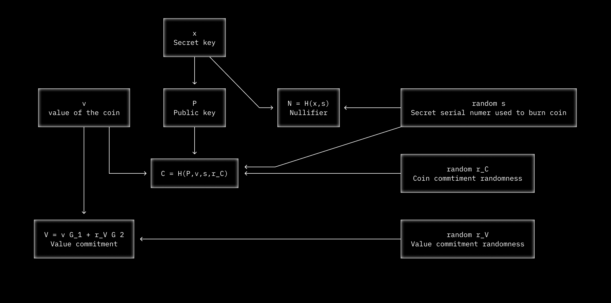

DarkFi

About DarkFi
DarkFi is a new Layer 1 blockchain, designed with anonymity at the forefront. It offers flexible private primitives that can be wielded to create any kind of application. DarkFi aims to make anonymous engineering highly accessible to developers.
DarkFi uses advances in zero-knowledge cryptography and includes a contracting language and developer toolkits to create uncensorable code.
In the open air of a fully dark, anonymous system, cryptocurrency has the potential to birth new technological concepts centered around sovereignty. This can be a creative, regenerative space - the dawn of a Dark Renaissance.
Connect to DarkFi IRC
Follow the installation instructions for the P2P IRC daemon.
Build
This project requires the Rust compiler to be installed. Please visit Rustup for instructions.
You have to install a native toolchain, which is set up during Rust installation, nightly toolchain and wasm32 target. To install nightly toolchain, execute:
% rustup toolchain install nightly
To install wasm32 target, execute:
% rustup target add wasm32-unknown-unknown
% rustup target add wasm32-unknown-unknown --toolchain nightly
Minimum Rust version supported is 1.67.0 (stable).
The following dependencies are also required:
| Dependency | Debian-based |
|---|---|
| git | git |
| make | make |
| gcc | gcc |
| pkg-config | pkg-config |
| alsa-lib | libasound2-dev |
| openssl | libssl-dev |
| sqlcipher | libsqlcipher-dev |
Users of Debian-based systems (e.g. Ubuntu) can simply run the following to install the required dependencies:
# apt-get update
# apt-get install -y git make gcc pkg-config libasound2-dev libssl-dev libsqlcipher-dev
Alternatively, users can try using the automated script under contrib
folder by executing:
% sh contrib/dependency_setup.sh
The script will try to recognize which system you are running, and install dependencies accordingly. In case it does not find your package manager, please consider adding support for it into the script and sending a patch.
To build the necessary binaries, we can just clone the repo, checkout to the latest tag, and use the provided Makefile to build the project:
% git clone https://github.com/darkrenaissance/darkfi
% cd darkfi && git checkout v0.4.1
% make
Development
If you want to hack on the source code, make sure to read some introductory advice in the DarkFi book.
Install
This will install the binaries on your system (/usr/local by
default). The configuration files for the binaries are bundled with the
binaries and contain sane defaults. You'll have to run each daemon once
in order for them to spawn a config file, which you can then review.
# make install
Examples and usage
See the DarkFi book
Go Dark
Let's liberate people from the claws of big tech and create the democratic paradigm of technology.
Self-defense is integral to any organism's survival and growth.
Power to the minuteman.
DarkFi Philosophy
State Civilization and the Democratic Nation
State civilization has a 5000 year history. The origin of civilizations in mesopotamia experienced a cambrian explosion of various forms. The legacy of state civilization can be traced back to ancient assyria which was essentially a military dictatorship that mobilized all of society's resources to wage war and defeat other civilizations, enslaving them and seizing their wealth.
Wikipedia defines civilization:
Civilizations are organized densely-populated settlements divided into hierarchical social classes with a ruling elite and subordinate urban and rural populations.
Civilization concentrates power, extending human control over the rest of nature, including over other human beings.
However this destiny of civilization was not inherent as history teaches us. This definition is one particular mode of civilization that become prevalent. During human history there has been plethora forms of civilizations. Our role as revolutionaries is to reconstruct the civilizational paradigm.
The democratic nation is synonymous with society, and produces all value include that which the state extracts. Creative enterprise and wealth production originates in society from small scale business, artisans and inventors, and anybody driven by intent or ambition to create works.
Within society, there are multiple coexisting nations which are communities of people sharing language, history, ethnicity or culture. For example there could be a nation based on spiritual belief, the nation of women, or a distinct cultural nation.
The nation state is an extreme variant of the state civilization tendency. Like early state civilizations, the development of the French nation-state was more effective at seizing the wealth of society to mobilize in war against the existing empires of the time.
Soon after, the remaining systems were forced to adopt the nation state system, including its ideology of nationalism. It is no mistake that the nation state tends towards nationalism and fascism including the worst genocides in human history. Nationalism is a blind religion supplanting religious ideologies weakened by secularism. However nationalism is separate from patriotism.
Loving one's country for which you have struggled and fought over for centuries or even millenia as an ethnic community or nation, which you have made your homeland in this long struggle, represents a sacred value.
~ Ocalan's "PKK and Kurdish Question in the 21st century"
Defining the State
The state is a centralized organization that imposes and enforces rules over a population through the monopoly on the legitimate use of violence. In discussing the rise of militarism, Ocalan says:
Essentially, he attempted to establish his authority over two key groups: the hunters at his side and the women he was trying to confine to the home. Along the way, as shamans (proto-priests) and gerontocratic elements (groups of elders) joined the crafty strongman, the first hierarchical authority was formed in many societies in various forms.
Section called "Society’s Militarism Problem" from "The Sociology of Freedom"
The state is defined as:
- Ideological hegemony represented by the system of priests and shamans in pre-state formations. Today this is the media industry, schools, and big tech (for example "fake news" and surveillance systems).
- Monopolization on the use of violence through military and police. Powerful commanders like Gilgamesh conquered neighbouring tribes, creating nascent state polities whose main business model was to hunt and enslave barbarian tribes. This enabled state to expand agricultural output which they seized through taxation.
- State bureaucracy and administration represented in tribal societies and proto-states through the council of elders. This arm of the state also includes scientific research institutes, state psychology groups and various forms of manipulation including modern AI and data harvesting. This tendency is a misappropriation of scientific methods to serve power thus retarding scientific and technological development, and impoverishing society by depriving it of its great benefits.
The state is a parasite on society, extracting value created. There are many historical stateless societies such as the Medean Confederation, the Iroquiois Confederation, the ninja republics of Iga and Kōga, the Swiss pre-Sonderbund Confederation Helvetica, and Cossack society.
Government is the system or people administrating a society. Although most governments are nation-state ones, we can create stateless societies with autonomous governments. Within free society, government is local, broadly democratic and autonomous. Society is widely engaged at every level in decision making through local people's councils, as well as possessing the use of violence through a system of gun ownership and local militias. Government also answers to a network of various interest groups from various nations such as women or youth.
Modernity and the Subject of Ideology
Modernity was born in the "age of reason" and represents the overturning of prevailing religious ideas and rejection of tradition in favour of secularization. Modernity has a mixed legacy which includes alienation, commodity festishism, scientific positivism and rationalism.
During this period of modernity, 4 major ideologies developed, each with their own specific subject as its focus.
- Liberalism and its subject of the individual. Individuals are atomic units existing under the state system which guarantees them certain bargains in the form of laws and rights.
- Communism which focused on the concept of class warfare, and economic justice through state power.
- Fascism which put the volk or state at the center of society, whereby all resources would be mobilized to serve the state.
- Anarchism with its critiques of power, and favouring social freedom.
The particular form of modernity that is predominant can be characterized as capitalist modernity. Capitalism, otherwise referred to by others as corporatism can be likened to a religion, whereby a particular elite class having no ideology except self profit uses the means of the state to protect its own interests and extract the wealth of society through nefarious means. In some ways, it is a parasite on the state.
Agorist free markets is the democratic tendency of economy. The word 'economy' derives from the Ancient Greek 'oikonomos' which means household management. Economy was during ancient periods connected with nature, the role of motherhood, life and freedom. It was believed that wealth derived from the quality of our lived our environments. The Kurds use the feminine word 'mal' to refer to the house, while the masculine variant refers to actual property. Later during the Roman period, economy came to be understood as the accumulation of property in the form of number of slaves owned, amount of land seized or the quantity of money.
The subject of our ideology is the moral and political society. Society exists within a morality and a politics. Here we use politics to refer not to red team vs blue team, but instead all social activity concerned with our security, necessity and life. A society can only be free when it has its own morality and politics. The state seeks to keep society weak by depriving it of morality and replacing society's politics with statecraft.
The Extinction of Humanity
During the 20th century, liberals, communists and fascists vyed for state power each promising a new form of society. State power existed with these external ideological justifications.
With the end of the soviet union, and the end of history (according to liberalism), state power morphed into pure domination and profit. The system simply become a managerial form of raw power over society without purpose or aim. Wars such as Iraq were invented by neoliberals to breathe a new purpose into society. Indeed there is no more effective means to support despotism than war.
Today the military industrial complex has grown into a gigantic leviathan that threatens the world driving economies into an ever greater spiral of desperation. The push the development of automated weapons, aerial drones and ninja missiles that eliminate all space for human resistance against tyranny.
Meanwhile social credit scoring is being introduced as CBDCs with incentivization schemes such as UBI. Such systems will give more effective means for the seizure of wealth by the state from society, centralizing economic power within an already deeply corrupt elite class.
Liberal ideologies have made people indifferent to their own situation, turning society inwards focused on social media, unable to organize together to oppose rising authoritarianism. Liberalism is essentially a tendency towards extinction or death.
Nature, Life, Freedom
Nature is the center of spiritual belief. Humanity is an aspect of nature. Nature is more than the number of trees. It is the going up, the ascending of life. Through struggle, we overcome obstacles, becoming harder and stronger along the way. This growth makes us more human, and closer with nature.
People naturally feel an empathy with nature such as when an animal is injured, or generous feelings towards the young of any species. This feeling was put in us by evolution. We feel an attachment and empathy towards our lived environment, and want to see it improve. This feeling is mother nature speaking through us. The more in touch we are with this deeper feeling, the more free we are since we are able to develop as higher human beings.
Freedom does not mean the ability to be without constraint or enact any wild fantasy at a moment's notice. Freedom means direct conscious action with power that makes us ascend upwards. Nature is full of interwoven threads of organisms vying for influence or power, with time doing an ordered dance punctuated by inflection points of change. It is during those moments that our ability of foresight and prescience allow us to deeply affect events along alternative trajectories.
Re-Evaluating Anarchism
Anarchists had the correct critique & analysis of power. In particular seeing that the nation state would grow into a monster that would consume society. However they were the least equipped of all the other ideologies during modernity to enact their vision and put their ideas into practice.
- They fell victim to the same positivist forces that they claimed to be fighting against.
- They lacked a coherent vision, and had little strategy or roadmap for how the revolution would happen.
- Their utopian demand that the state must be eliminated immediately and at all costs meant they were not able to plan how that would happen.
- Their opposition to all forms of authority, even legitimate leadership meant they were ineffective at organizing revolutionary forces.
Revolutionary Objectives
- Our movement is primarily a spiritual one. One cannot understand christianity by studying its system of churches, since primarily it is a body of teachings. Likewise the core of our movement is in our philosophy, ideas and concepts, which then inform our ideas on governance and economics.
- We must build a strong intellectual fabric that innocuates us and fosters resilience, as well as equipping us with the means to be effective in our work.
- There are two legacies in technology. One informed by state civilization, and the other by society. The technology we create is to solve problems that society and aligned communities have.
Definition of Democratic Civilization
From 'The Sociology of Freedom: Manifesto of the Democratic Civilization, Volume 3' by Abdullah Ocalan.
Annotations are our own. The text is otherwise unchanged.
What is the subject of moral and political society?
The school of social science that postulates the examination of the existence and development of social nature on the basis of moral and political society could be defined as the democratic civilization system. The various schools of social science base their analyses on different units. Theology and religion prioritize society. For scientific socialism, it is class. The fundamental unit for liberalism is the individual. There are, of course, schools that prioritize power and the state and others that focus on civilization. All these unit-based approaches must be criticized, because, as I have frequently pointed out, they are not historical, and they fail to address the totality. A meaningful examination would have to focus on what is crucial from the point of view of society, both in terms of history and actuality. Otherwise, the result will only be one more discourse.
Identifying our fundamental unit as moral and political society is significant, because it also covers the dimensions of historicity and totality. Moral and political society is the most historical and holistic expression of society. Morals and politics themselves can be understood as history. A society that has a moral and political dimension is a society that is the closest to the totality of all its existence and development. A society can exist without the state, class, exploitation, the city, power, or the nation, but a society devoid of morals and politics is unthinkable. Societies may exist as colonies of other powers, particularly capital and state monopolies, and as sources of raw materials. In those cases, however, we are talking about the legacy of a society that has ceased to be.
Individualism is a state of war
There is nothing gained by labeling moral and political society—the natural state of society—as slave-owning, feudal, capitalist, or socialist. Using such labels to describe society masks reality and reduces society to its components (class, economy, and monopoly). The bottleneck encountered in discourses based on such concepts as regards the theory and practice of social development stems from errors and inadequacies inherent in them. If all of the analyses of society referred to with these labels that are closer to historical materialism have fallen into this situation, it is clear that discourses with much weaker scientific bases will be in a much worse situation. Religious discourses, meanwhile, focus heavily on the importance of morals but have long since turned politics over to the state. Bourgeois liberal approaches not only obscure the society with moral and political dimensions, but when the opportunity presents itself they do not hesitate to wage war on this society. Individualism is a state of war against society to the same degree as power and the state is. Liberalism essentially prepares society, which is weakened by being deprived of its morals and politics, for all kinds of attacks by individualism. Liberalism is the ideology and practice that is most anti-society.
The rise of scientific positivism
In Western sociology (there is still no science called Eastern sociology) concepts such as society and civilization system are quite problematic. We should not forget that the need for sociology stemmed from the need to find solutions to the huge problems of crises, contradictions, and conflicts and war caused by capital and power monopolies. Every branch of sociology developed its own thesis about how to maintain order and make life more livable. Despite all the sectarian, theological, and reformist interpretations of the teachings of Christianity, as social problems deepened, interpretations based on a scientific (positivist) point of view came to the fore. The philosophical revolution and the Enlightenment (seventeenth and eighteenth centuries) were essentially the result of this need. When the French Revolution complicated society’s problems rather than solving them, there was a marked increase in the tendency to develop sociology as an independent science. Utopian socialists (Henri de Saint-Simon, Charles Fourier, and Pierre-Joseph Proudhon), together with Auguste Comte and Émile Durkheim, represent the preliminary steps in this direction. All of them are children of the Enlightenment, with unlimited faith in science. They believed they could use science to re-create society as they wished. They were playing God. In Hegel’s words, God had descended to earth and, what’s more, in the form of the nation-state. What needed to be done was to plan and develop specific and sophisticated “social engineering” projects. There was no project or plan that could not be achieved by the nation-state if it so desired, as long as it embraced the “scientific positivism” and was accepted by the nation-state!
Capitalism as an iron cage
British social scientists (political economists) added economic solutions to French sociology, while German ideologists contributed philosophically. Adam Smith and Hegel in particular made major contributions. There was a wide variety of prescriptions from both the left and right to address the problems arising from the horrendous abuse of the society by the nineteenth-century industrial capitalism. Liberalism, the central ideology of the capitalist monopoly has a totally eclectic approach, taking advantage of any and all ideas, and is the most practical when it comes to creating almost patchwork-like systems. It was as if the right- and left- wing schematic sociologies were unaware of social nature, history, and the present while developing their projects in relation to the past (the quest for the “golden age” by the right) or the future (utopian society). Their systems would continually fragment when they encountered history or current life. The reality that had imprisoned them all was the “iron cage” that capitalist modernity had slowly cast and sealed them in, intellectually and in their practical way of life. However, Friedrich Nietzsche’s ideas of metaphysicians of positivism or castrated dwarfs of capitalist modernity bring us a lot closer to the social truth. Nietzsche leads the pack of rare philosophers who first drew attention to the risk of society being swallowed up by capitalist modernity. Although he is accused of serving fascism with his thoughts, his foretelling of the onset of fascism and world wars was quite enticing.
The increase in major crises and world wars, along with the division of the liberal center into right- and left-wing branches, was enough to bankrupt positivist sociology. In spite of its widespread criticism of metaphysics, social engineering has revealed its true identity with authoritarian and totalitarian fascism as metaphysics at its shallowest. The Frankfurt School is the official testimonial of this bankruptcy. The École Annales and the 1968 youth uprising led to various postmodernist sociological approaches, in particular Immanuel Wallerstein’s capitalist world-system analysis. Tendencies like ecology, feminism, relativism, the New Left, and world-system analysis launched a period during which the social sciences splintered. Obviously, financial capital gaining hegemony as the 1970s faded also played an important role. The upside of these developments was the collapse of the hegemony of Eurocentric thought. The downside, however, was the drawbacks of a highly fragmented social sciences.
The problems of Eurocentric sociology
Let’s summarize the criticism of Eurocentric sociology:
-
Positivism, which criticized and denounced both religion and metaphysics, has not escaped being a kind of religion and metaphysics in its own right. This should not come as a surprise. Human culture requires metaphysics. The issue is to distinguish good from bad metaphysics.
-
An understanding of society based on dichotomies like primitive vs. modern, capitalist vs. socialist, industrial vs. agrarian, progressive vs. reactionary, divided by class vs. classless, or with a state vs. stateless prevents the development of a definition that comes closer to the truth of social nature. Dichotomies of this sort distance us from social truth.
-
To re-create society is to play the modern god. More precisely, each time society is recreated there is a tendency to form a new capital and power-state monopoly. Much like medieval theism was ideologically connected to absolute monarchies (sultanates and shāhanshāhs), modern social engineering as recreation is essentially the divine disposition and ideology of the nation-state. Positivism in this regard is modern theism.
-
Revolutions cannot be interpreted as the re-creation acts of society. When thusly understood they cannot escape positivist theism. Revolutions can only be defined as social revolutions to the extent that they free society from excessive burden of capital and power.
-
The task of revolutionaries cannot be defined as creating any social model of their making but more correctly as playing a role in contributing to the development of moral and political society.
-
Methods and paradigms to be applied to social nature should not be identical to those that relate to first nature. While the universalist approach to first nature provides results that come closer to the truth (I don’t believe there is an absolute truth), relativism in relation to social nature may get us closer to the truth. The universe can neither be explained by an infinite universalist linear discourse or by a concept of infinite similar circular cycles.
-
A social regime of truth needs to be reorganized on the basis of these and many other criticisms. Obviously, I am not talking about a new divine creation, but I do believe that the greatest feature of the human mind is the power to search for and build truth.
A new social science
In light of these criticisms, I offer the following suggestions in relation to the social science system that I want to define:
A more humane social nature
-
I would not present social nature as a rigid universalist truth with mythological, religious, metaphysical, and scientific (positivist) patterns. Understanding it to be the most flexible form of basic universal entities that encompass a wealth of diversities but are tied down to conditions of historical time and location more closely approaches the truth. Any analysis, social science, or attempt to make practical change without adequate knowledge of the qualities of social nature may well backfire. The monotheistic religions and positivism, which have appeared throughout the history of civilization claiming to have found the solution, were unable to prevent capital and power monopolies from gaining control. It is therefore their irrevocable task, if they are to contribute to moral and political society, to develop a more humane analysis based on a profound self-criticism.
-
Moral and political society is the main element that gives social nature its historical and complete meaning and represents the unity in diversity that is basic to its existence. It is the definition of moral and political society that gives social nature its character, maintains its unity in diversity, and plays a decisive role in expressing its main totality and historicity. The descriptors commonly used to define society, such as primitive, modern, slave-owning, feudal, capitalist, socialist, industrial, agricultural, commercial, monetary, statist, national, hegemonic, and so on, do not reflect the decisive features of social nature. On the contrary, they conceal and fragment its meaning. This, in turn, provides a base for faulty theoretical and practical approaches and actions related to society.
Protecting the social fabric
-
Statements about renewing and re-creating society are part of operations meant to constitute new capital and power monopolies in terms of their ideological content. The history of civilization, the history of such renewals, is the history of the cumulative accumulation of capital and power. Instead of divine creativity, the basic action the society needs most is to struggle against factors that prevent the development and functioning of moral and political social fabric. A society that operates its moral and political dimensions freely, is a society that will continue its development in the best way.
-
Revolutions are forms of social action resorted to when society is sternly prevented from freely exercising and maintaining its moral and political function. Revolutions can and should be accepted as legitimate by society only when they do not seek to create new societies, nations, or states but to restore moral and political society its ability to function freely.
-
Revolutionary heroism must find meaning through its contributions to moral and political society. Any action that does not have this meaning, regardless of its intent and duration, cannot be defined as revolutionary social heroism. What determines the role of individuals in society in a positive sense is their contribution to the development of moral and political society.
-
No social science that hopes to develop these key features through profound research and examination should be based on a universalist linear progressive approach or on a singular infinite cyclical relativity. In the final instance, instead of these dogmatic approaches that serve to legitimize the cumulative accumulation of capital and power throughout the history of civilization, social sciences based on a non-destructive dialectic methodology that harmonizes analytical and emotional intelligence and overcomes the strict subject-object mold should be developed.
The framework of moral and political society
The paradigmatic and empirical framework of moral and political society, the main unit of the democratic civilization system, can be presented through such hypotheses. Let me present its main aspects:
-
Moral and political society is the fundamental aspect of human society that must be continuously sought. Society is essentially moral and political.
-
Moral and political society is located at the opposite end of the spectrum from the civilization systems that emerged from the triad of city, class, and state (which had previously been hierarchical structures).
-
Moral and political society, as the history of social nature, develops in harmony with the democratic civilization system.
-
Moral and political society is the freest society. A functioning moral and political fabric and organs is the most decisive dynamic not only for freeing society but to keep it free. No revolution or its heroines and heroes can free the society to the degree that the development of a healthy moral and political dimension will. Moreover, revolution and its heroines and heroes can only play a decisive role to the degree that they contribute to moral and political society.
-
A moral and political society is a democratic society. Democracy is only meaningful on the basis of the existence of a moral and political society that is open and free. A democratic society where individuals and groups become subjects is the form of governance that best develops moral and political society. More precisely, we call a functioning political society a democracy. Politics and democracy are truly identical concepts. If freedom is the space within which politics expresses itself, then democracy is the way in which politics is exercised in this space. The triad of freedom, politics, and democracy cannot lack a moral basis. We could refer to morality as the institutionalized and traditional state of freedom, politics, and democracy.
-
Moral and political societies are in a dialectical contradiction with the state, which is the official expression of all forms of capital, property, and power. The state constantly tries to substitute law for morality and bureaucracy for politics. The official state civilization develops on one side of this historically ongoing contradiction, with the unofficial democratic civilization system developing on the other side. Two distinct typologies of meaning emerge. Contradictions may either grow more violent and lead to war or there may be reconciliation, leading to peace.
-
Peace is only possible if moral and political society forces and the state monopoly forces have the will to live side by side unarmed and with no killing. There have been instances when rather than society destroying the state or the state destroying society, a conditional peace called democratic reconciliation has been reached. History doesn’t take place either in the form of democratic civilization—as the expression of moral and political society—or totally in the form of civilization systems—as the expression of class and state society. History has unfolded as intense relationship rife with contradiction between the two, with successive periods of war and peace. It is quite utopian to think that this situation, with at least a five-thousand-year history, can be immediately resolved by emergency revolutions. At the same time, to embrace it as if it is fate and cannot be interfered with would also not be the correct moral and political approach. Knowing that struggles between systems will be protracted, it makes more sense and will prove more effective to adopt strategic and tactical approaches that expand the freedom and democracy sphere of moral and political society.
-
Defining moral and political society in terms of communal, slave-owning, feudal, capitalist, and socialist attributes serves to obscure rather than elucidate matters. Clearly, in a moral and political society there is no room for slave-owning, feudal, or capitalist forces, but, in the context of a principled reconciliation, it is possible to take an aloof approach to these forces, within limits and in a controlled manner. What’s important is that moral and political society should neither destroy them nor be swallowed up by them; the superiority of moral and political society should make it possible to continuously limit the reach and power of the central civilization system. Communal and socialist systems can identify with moral and political society insofar as they themselves are democratic. This identification is, however, not possible, if they have a state.
-
Moral and political society cannot seek to become a nation-state, establish an official religion, or construct a non-democratic regime. The right to determine the objectives and nature of society lies with the free will of all members of a moral and political society. Just as with current debates and decisions, strategic decisions are the purview of society’s moral and political will and expression. The essential thing is to have discussions and to become a decision-making power. A society who holds this power can determine its preferences in the soundest possible way. No individual or force has the authority to decide on behalf of moral and political society, and social engineering has no place in these societies.
Liberating democratic civilization from the State
When viewed in the light of the various broad definitions I have presented, it is obvious that the democratic civilization system—essentially the moral and political totality of social nature—has always existed and sustained itself as the flip side of the official history of civilization. Despite all the oppression and exploitation at the hands of the official world-system, the other face of society could not be destroyed. In fact, it is impossible to destroy it. Just as capitalism cannot sustain itself without noncapitalist society, civilization— the official world system— also cannot sustain itself without the democratic civilization system. More concretely the civilization with monopolies cannot sustain itself without the existence of a civilization without monopolies. The opposite is not true. Democratic civilization, representing the historical flow of the system of moral and political society, can sustain itself more comfortably and with fewer obstacles in the absence of the official civilization.
I define democratic civilization as a system of thought, the accumulation of thought, and the totality of moral rules and political organs. I am not only talking about a history of thought or the social reality within a given moral and political development. The discussion does, however, encompass both issues in an intertwined manner. I consider it important and necessary to explain the method in terms of democratic civilization’s history and elements, because this totality of alternate discourse and structures are prevented by the official civilization. I will address these issues in subsequent sections.
Recommended Books
Core Texts
- Manifesto for a Democratic Civilization parts 1, 2 & 3 by Ocalan. This are a good high level overview of history, philosophy and spiritualism talking about the 5000 year legacy of state civilization, the development of philosophy and humanity's relationship with nature.
- New Paradigm in Macroeconomics by Werner explains how economics and finance work on a fundamental level. Emphasizes the importance of economic networks in issuing credit, and goes through all the major economic schools of thought.
- Authoritarian vs Democratic Technics by Mumford is a short 10 page summary of his books The Myth of the Machine parts 1 & 2. Mumford was a historian and philosopher of science and technology. His books describe the two dominant legacies within technology; one enslaving humanity, and the other one liberating humanity from the state.
- GNU and Free Software texts
Philosophy
- The Story of Philosophy by Will Durant
- The Sovereign Individual is very popular among crypto people. Makes several prescient predictions including about cryptocurrency, algorithmic money and the response by nation states against this emeregent technology. Good reading to understand the coming conflict between cryptocurrency and states.
Python
- Python Crash Course by Eric Matthes. Good beginner text.
- O'Reilly books: Python Data Science, Python for Data Analysis
C
- The C Programming Language by K&R (2nd Edition ANSI C)
Rust
- The Rust Programming Language from No Starch Press. Good intro to learn Rust.
- Rust for Rustaceans from No Starch Press is an advanced Rust book.
Mathematics
Abstract Algebra
- Pinter is your fundamental algebra text. Everybody should study this book. My full solutions here.
- Basic Abstract Algebra by Dover is also a good reference.
- Algebra by Dummit & Foote. The best reference book you will use many times. Just buy it.
- Algebra by Serge Lang. More advanced algebra book but often contains material not found in the D&F book.
Elliptic Curves
- Washington is a standard text and takes a computational approach. The math is often quite obtuse because he avoids introducing advanced notation, instead keeping things often in algebra equations.
- Silverman is the best text but harder than Washington. The material however is rewarding.
Algebraic Geometry
- Ideals, Varieties and Algorithms by Cox, Little, O'Shea. They have a follow up advanced graduate text called Using Algebraic Geometry. It's the sequel book explaining things that were missing from the first text.
- Hartshorne is a famous text.
Commutative Algebra
- Atiyah-MacDonald. Many independent solution sheets online if you search for them. Or ask me ;)
Algebraic Number Theory
- Algebraic Number Theory by Frazer Jarvis, chapters 1-5 (~100 pages) is your primary text. Book is ideal for self study since it has solutions for exercises.
- Introductory Algebraic Number Theory by Alaca and Williams is a bit dry but a good supplementary reference text.
- Elementary Number Theory by Jones and Jones, is a short text recommended in the preface to the Jarvis book.
- Algebraic Number Theory by Milne, are course notes written which are clear and concise.
- Short Algebraic Number Theory course, see also the lecture notes.
- Cohen book on computational number theory is a gold mine of standard algos.
- LaVeque Fundamentals of Number Theory
Cryptography
ZK
- Proofs, Arguments, and Zero-Knowledge by Justin Thaler.
Miscellaneous
- Cryptoeconomics by Eric Voskuil.
Compiling and Running a Node
Since this is still an early phase, we will not be installing any of the software system-wide. Instead, we'll be running all the commands from the git repository, so we're able to easily pull any necessary updates.
Compiling
Refer to the main README file for instructions on how to install Rust and necessary deps.
Once you have the repository in place, and everything is installed, we
can compile the darkfid node and the drk wallet CLI:
$ make darkfid drk
This process will now compile the node and the wallet CLI tool.
When finished, we can begin using the network. Run darkfid once so
that it spawns its config file on your system. This config file will
be used by darkfid in order to configure itself. The defaults are
already preset for using the testnet network.
$ ./darkfid
Config file created in "~/.config/darkfi/darkfid_config.toml". Please review it and try again.
Running
Once that's in place, you can run it again and darkfid will start,
create the necessary keys for validation of blocks and transactions, and
begin syncing the blockchain. Keep it running, and you should see a
Blockchain is synced! message after some time.
$ ./darkfid
Now it's time to initialize your wallet. For this we use a separate wallet CLI which is created to interface with the smart contract used for payments and swaps.
We simply have to initialize a wallet, and create a keypair:
$ ./drk wallet --initialize
$ ./drk wallet --keygen
The second command will print out your new DarkFi address where you can receive payments. Take note of it. Alternatively, you can always retrieve it using:
$ ./drk wallet --address
In order to receive incoming coins, you'll need to use the drk
tool to subscribe on darkfid so you can receive notifications for
incoming blocks. The blocks have to be scanned for transactions,
and to find coins that are intended for you. In another terminal,
you can run the following commands to first scan the blockchain,
and then to subscribe to new blocks:
$ ./drk scan
$ ./drk subscribe
Now you can leave the subscriber running. In case you stop it, just
run drk scan again until the chain is fully scanned, and then you
should be able to subscribe again.
Local Deployment
For development we recommend running master. First we modify the constants specifically for a local testnet. This step is optional but you might find scanning takes a long time otherwise.
cd contrib/localnet/darkfid-single-node/
./tmux_sessions.sh now
cd ../../../
make darkfid
You can run a single consensus full node using this command:
./tmux_sessions.sh -v
Advanced Usage
To run a node in full debug mode:
LOG_TARGETS="\!sled,\!net" ./darkfid -v | tee /tmp/darkfid.log
The sled and net targets are very noisy and slow down the node so
we disable those.
We can now view the log, and grep through it.
tail -n +0 -f /tmp/darkfid.log | grep -a --line-buffered -v DEBUG
Airdrops
Now you have your wallet set up. Let's proceed with getting some tokens from the faucet. The testnet has a running faucet which is able to airdrop native network tokens.
So let's airdrop some of these into our wallet:
$ ./drk airdrop 42.69
There is a limit of 100 for testnet airdrops currently.
Note: you have to wait some minutes between airdrops since they're rate-limited.
On success, you should see a transaction ID. If successful,
the airdrop transactions will now be in the consensus' mempool,
waiting for inclusion in the next block. Depending on the network,
finalization of the blocks could take some time. You'll have to wait
for this to happen. If your drk subscribe blocks is running, then after
some time your balance should be in your wallet.

You can check your wallet balance using drk:
$ ./drk wallet --balance
Aliases
To make our life easier, we can create token ID aliases, so when we are performing transactions with them, we can use that instead of the full token ID. Multiple aliases per token ID are supported.
Example addition:
$ ./drk alias add {ALIAS} {TOKEN}
So let's add the native token as DARK by executing:
$ ./drk alias add DARK 12ea8e3KVuBhmSnr29iV34Zd2RsD1MEeGk9xJhcipUqx
From now on, we can use DARK to refer to the native token when
executing transactions using it.
We can also list all our aliases using:
$ ./drk alias show
Note: these aliases are only local to your machine. When exchanging with other users, always verify that your aliases' token IDs match.
Minting tokens
On the DarkFi network, we're also able to mint custom tokens with some supply. To do this, we need to generate a mint authority keypair, and derive a token ID from it. We can simply do this by executing the following command:
$ ./drk token generate-mint
This will generate a new token mint authority and will tell you what your new token ID is. For this tutorial we will need two tokens so execute the command again to generate another one.
You can list your mint authorities with:
$ ./drk token list
Now let's add those two token IDs to our aliases:
$ ./drk alias add WCKD {TOKEN1}
$ ./drk alias add MLDY {TOKEN2}
Now let's mint some tokens for ourselves. First grab your wallet address, and then create the token mint transaction, and finally - broadcast it:
$ ./drk wallet --address
$ ./drk token mint WCKD 42.69 {YOUR_ADDRESS} > mint_tx
$ ./drk broadcast < mint_tx
$ ./drk token mint MLDY 20.0 {YOUR_ADDRESS} > mint_tx
$ ./drk broadcast < mint_tx
Now the transaction should be published to the network. If you have
an active block subscription (which you can do with drk subscribe blocks),
then when the transaction is finalized, your wallet should have your
new tokens listed when you request to see the balance.
Payments
Using the tokens we minted, we can make payments to other addresses.
Let's try to send some WCKD
tokens to 8sRwB7AwBTKEkyTW6oMyRoJWZhJwtqGTf7nyHwuJ74pj:
$ ./drk transfer 2.69 WCKD \
8sRwB7AwBTKEkyTW6oMyRoJWZhJwtqGTf7nyHwuJ74pj > payment_tx
The above command will create a transfer transaction and place it into
the file called payment_tx. Then we can broadcast this transaction
to the network:
$ ./drk broadcast < payment_tx
On success we'll see a transaction ID. Now again the same finalization
process has to occur and 8sRwB7AwBTKEkyTW6oMyRoJWZhJwtqGTf7nyHwuJ74pj
will receive the tokens you've sent.
We can see the spent coin in our wallet.
$ ./drk wallet --coins
We have to wait until the next block to see our change balance reappear in our wallet.
$ ./drk wallet --balance
Atomic Swaps
In order to do an atomic swap with someone, you will first have to come
to a consensus on what tokens you wish to swap. For example purposes,
let's say you want to swap 40 WCKD (which is the balance you
should have left over after doing the payment from the previous page)
for your counterparty's 20 MLDY. For this tutorial the counterparty
is yourself.
To protect your anonymity from the counterparty, the swap can only send entire coins. To create a smaller coin denomination, send yourself the amount you want to swap. Then check you have a spendable coin to swap with:
$ ./drk wallet --coins
You'll have to initiate the swap and build your half of the swap tx:
$ ./drk otc init -v 40.0:20.0 -t WCKD:MLDY > half_swap
Then you can send this half_swap file to your counterparty and they
can create the other half by running:
$ ./drk otc join < half_swap > full_swap
They will sign the full_swap file and send it back to you. Finally, to make the swap transaction valid, you need to sign it as well, and broadcast it:
$ ./drk otc sign < full_swap > signed_swap
$ ./drk broadcast < signed_swap
On success, you should see a transaction ID. This transaction will now also be in the mempool, so you should wait again until it's finalized.

After a while you should see the change in balances in your wallet:
$ ./drk wallet --balance
If you see your counterparty's tokens, that means the swap was successful. In case you still see your old tokens, that could mean that the swap transaction has not yet been finalized.
DAO
On the testnet, we are also able to create an anonymous DAO. Using
the drk CLI tool, we have a dao subcommand that can perform the
necessary operations.
You can find a script in
contrib/localnet/darkfid-single-node/run-dao-test.sh which
automatically does all the commands in this tutorial. Just be sure
to read the comment at the top of the file first.
Let's create a DAO with the following parameters:
- Proposer limit:
20 - Quorum:
10 - Approval ratio:
0.67 - Governance token:
MLDY
You can see what these parameters mean with the help command.
$ ./drk help dao create
Let's create our DAO.
$ ./drk dao create 20 10 0.67 MLDY > dao.dat
$ ./drk dao view < dao.dat
The view command will show us the parameters. If everything looks fine, we can now import it into our wallet:
./drk dao import MiladyMakerDAO < dao.dat
./drk dao list
./drk dao list MiladyMakerDAO
Minting
If parameters are shown, this means the DAO was successfully imported
into our wallet. The DAO's index in our wallet is 1, so we'll use
that to reference it. Now we can create a transaction that will mint
the DAO on-chain, and broadcast it:
./drk dao mint MiladyMakerDAO > dao_mint_tx
./drk broadcast < dao_mint_tx
Now the transaction is broadcasted to the network. Wait for it to
finalize, and if your drk is subscribed, after finalization you
should see a leaf_position and a transaction ID when running
dao list MiladyMakerDAO.
Sending money to the treasury
Let's send some tokens to the DAO's treasury so we're able to make
a proposal to send those somewhere. First find the DAO bulla and the
DAO public key with dao list and then create a transfer transaction:
$ ./drk dao list MiladyMakerDAO
$ ./drk transfer 10 WCKD {DAO_PUBLIC_KEY} \
--dao {DAO_BULLA} > dao_transfer
$ ./drk broadcast < dao_transfer
Wait for it to finalize, and if subscribed, you should see the DAO receive the funds:
$ ./drk dao balance MiladyMakerDAO
Creating a proposal
Now that the DAO has something in its treasury, we can create a
proposal to send it somewhere. Let's send 5 of the 10 tokens to our
address (we can find that with drk wallet --address):
$ ./drk dao propose MiladyMakerDAO {YOUR_ADDRESS} 5 WCKD > proposal_tx
$ ./drk broadcast < proposal_tx
Once finalized and scanned, the proposal should be viewable in the
wallet. We can see this with the proposal subcommands:
$ ./drk dao proposals MiladyMakerDAO
$ ./drk dao proposal MiladyMakerDAO 1
Voting on a proposal
Now the DAO members are ready to cast their votes.
First lets check the dao vote subcommand usage.
$ drk help dao vote
Vote on a given proposal
Usage: drk dao vote <DAO_ALIAS> <PROPOSAL_ID> <VOTE> <VOTE_WEIGHT>
Arguments:
<DAO_ALIAS> Name or numeric identifier for the DAO
<PROPOSAL_ID> Numeric identifier for the proposal
<VOTE> Vote (0 for NO, 1 for YES)
<VOTE_WEIGHT> Vote weight (amount of governance tokens)
Lets use our 20 MLDY to vote yes to proposal 1.
$ drk dao vote MiladyMakerDAO 1 1 20 > /tmp/dao-vote.tx
$ drk broadcast < /tmp/dao-vote.tx
Executing the proposal
Once enough votes have been cast that meet the required minimum (quorum) and assuming the yes:no votes ratio is bigger than the approval ratio, then we are ready to finalize the vote. Any DAO member can perform this action.
$ drk dao exec MiladyMakerDAO 1 > /tmp/dao-exec.tx
$ drk broadcast < /tmp/dao-exec.tx
ircd: Strong Anonymity P2P Chat
In DarkFi, we organize our communication using resilient and
censorship-resistant infrastructure. For chatting, ircd is a
peer-to-peer implementation of an IRC server in which any user can
participate anonymously using any IRC frontend and by running the
IRC daemon. ircd uses the DarkFi P2P engine to synchronize chats
between hosts.
Benefits
- Encrypted using same algorithms as Signal.
- There are no identities. You cannot see who is in the chat.
- Completely anonymous. You can rename yourself easily by using the
command
/nick foo. This means all messages are unlinkable. - God-fearing based CLI without soy gui shit.
- p2p decentralized.
- Optionally run it over Tor or Nym for network level anonymity.
Therefore this is the world's most strongly anonymous chat in existence. Nothing else exists like it.
Installation
Follow the instructions in the README to ensure you have all the necessary dependencies.
% git clone https://github.com/darkrenaissance/darkfi.git
% cd darkfi && git checkout v0.4.1
% make ircd
Installation (Android)
This is for Android 64 bit (which is most phones).
- Install Docker
- Run
cd bin/ircd/ && make android. The resulting file will be calledircd.aarch64-android. Copy this to your phone. - Install Termux and RevolutionIRC on F-Droid.
- You can access the phone storage from
/sdcard/and copy the file into the Termux home. - Run
termux-wake-lock. This stops Android suspending the daemon. - Run the daemon. You can open new Termux sessions by swiping from the left to bring up the sidebar.
- Connect the RevolutionIRC frontend.
Usage (DarkFi Network)
Upon compiling ircd as described above, the preconfigured defaults
will allow you to connect to the network and start chatting with the
rest of the DarkFi community.
First, try to start ircd from your command-line so it can spawn its
configuration file in place. The preconfigured defaults will autojoin
you to several default channels one of which is #dev where we have
weekly meetings, and where the community is most active and talks
about DarkFi development.
% ./ircd
ircd will create a configuration file ircd_config.toml by
default in ~/.config/darkfi/ you can review and potentially edit. It
might be useful if you want to add other channels you want to autojoin
(like #philosophy and #memes), or if you want to set a shared
secret for some channel in order for it to be encrypted between its
participants.
When done, you can run ircd for the second time in order for it to
connect to the network and start participating in the P2P protocol:
% ./ircd
Clients
Weechat
In this section, we'll briefly cover how to use the Weechat IRC
client to connect and chat with
ircd.
Normally, you should be able to install weechat using your distribution's package manager. If not, have a look at the weechat git repository for instructions on how to install it on your computer.
Once installed, we can configure a new server which will represent our
ircd instance. First, start weechat, and in its window - run the
following commands (there is an assumption that irc_listen in the
ircd config file is set to 127.0.0.1:6667):
/server add darkfi localhost/6667 -notls -autoconnect
/save
/quit
Note: if you have other IRC servers added in your client
then you probably know this but you can ommit -autoconnect part.
This will set up the server, save the settings, and exit weechat. You are now ready to begin using the chat. Simply start weechat and everything should work.
When you join, you will not see any users displayed. This is normal since there is no concept of nicknames or registration on this p2p anonymous chat.
You can change your nickname using /nick foo, and navigate channels
using F5/F6 or ALT+X where X is the channel number displayed.
Network-level privacy
Nodes have knowledge of their peers, including the IP addresses of connected hosts.
DarkFi supports the use of pluggable transports, including Tor and Nym,
to provide network-level privacy. As long as there are live seed nodes
configured to support a Tor or Nym connection, users can connect to
ircd and benefit from the protections offered by these protocols.
Other approaches include connecting via a cloud server or VPN. Research the risks involved in these methods before connecting.
Usage (Local Deployment)
These steps below are only for developers who wish to make a testing deployment. The previous sections are sufficient to join the chat.
Seed Node
First you must run a seed node. The seed node is a static host which
nodes can connect to when they first connect to the network. The
seed_session simply connects to a seed node and runs protocol_seed,
which requests a list of addresses from the seed node and disconnects
straight after receiving them.
The first time you run the program, a config file will be created in
~/.config/darkfi if you are using Linux or in
~/Library/Application Support/darkfi/ on MacOS.
You must specify an inbound accept address in your config file to configure a seed node:
## P2P accept addresses
inbound=["127.0.0.1:11001"]
Note that the above config doesn't specify an external address since the seed node shouldn't be advertised in the list of connectable nodes. The seed node does not participate as a normal node in the p2p network. It simply allows new nodes to discover other nodes in the network during the bootstrapping phase.
Inbound Node
This is a node accepting inbound connections on the network but which is not making any outbound connections.
The external addresses are important and must be correct.
To run an inbound node, your config file must contain the following info:
## P2P accept addresses
inbound=["127.0.0.1:11002"]
## P2P external addresses
external_addr=["127.0.0.1:11002"]
## Seed nodes to connect to
seeds=["127.0.0.1:11001"]
Outbound Node
This is a node which has 8 outbound connection slots and no inbound connections. This means the node has 8 slots which will actively search for unique nodes to connect to in the p2p network.
In your config file:
## Connection slots
outbound_connections=8
## Seed nodes to connect to
seeds=["127.0.0.1:11001"]
Attaching the IRC Frontend
Assuming you have run the above 3 commands to create a small model testnet, and both inbound and outbound nodes above are connected, you can test them out using weechat.
To create separate weechat instances, use the --dir command:
weechat --dir /tmp/a/
weechat --dir /tmp/b/
Then in both clients, you must set the option to connect to temporary servers:
/set irc.look.temporary_servers on
Finally you can attach to the local ircd instances:
/connect localhost/6667
/connect localhost/6668
And send messages to yourself.
Running a Fullnode
See the script script/run_node.sh for an example of how to deploy
a full node which does seed session synchronization, and accepts both
inbound and outbound connections.
Global Buffer
Copy this script
to ~/.weechat/python/autoload/, and you will create a single buffer
which aggregates messages from all channels. It's useful to monitor
activity from all channels without needing to flick through them.
Configuring a Private chat between users
Any two users on the ircd server can establish a fully encrypted
communication medium between each other using a basic keypair setup.
Configuring ircd_config.toml
ircd_config.toml should be created by default in ~/.config/darkfi/
when you first run ircd.
Generate a keypair using the following command:
% ircd --gen-keypair
This will generate a Public Key and a Private Key.
Save the Private key safely & add it to the ircd_config.toml file as shown below.
[private_key.”your_private_key_goes_here”]
To share your Public Key with a user over ircd you can use one of the
public channels or via an external app like Signal, as plaintext DMs
are disabled in ircd.
Note: If you use the ircd's public channel, your
message will be publically visible on the IRC chat.
See the example ircd_config.toml for more details
Example
Lets start by configuring our contacts list in the generated
ircd_config.toml file (you can also refer to the examples written
in the comments of the toml file), let's assume alice and bob want to
privately chat after they have each other's public keys:
Alice would add bob to her contact list in her own config file:
[contact.”bob”]
contact_pubkey = “D6UzKA6qCG5Mep16i6pJYkUCQcnp46E1jPBsUhyJiXhb”
And Bob would do the same:
[contact.”alice”]
contact_pubkey = “9sfMEVLphJ4dTX3SEvm6NBhTbWDqfsxu7R2bo88CtV8g”
Lets see an Example where 'alice' sends “Hi” message to 'bob' using the /msg command
/msg bob Hi
Note for Weechat Client Users:
When you private message someone as shown above, the buffer will not
pop in weechat client until you receive a reply from that person.
For example here 'alice' will not see any new buffer on her irc interface for the recent message which she just send to 'bob' until 'bob' replies, but 'bob' will get a buffer shown on his irc client with the message 'Hi'.
Reply from 'bob' to 'alice'
/msg alice welcome!
Or instead of /msg command, you can use:
/query bob hello
This works exactly the same as /msg except it will open a new buffer
with Bob in your client regardless.
Note: The contact name is not the irc nickname, it can be anything you want, and you should use it when DMing.
Note: It's always a good idea to save your keys somewhere safe, but in
case you lost your Public Key and you still have your Private key in
ircd_config.toml file, you recover the Public Key like so:
% ircd --recover-pubkey {your_private_key}
Notes for developers
Making life easy for others
Write useful commit messages.
If your commit is changing a specific module in the code and not touching other parts of the codebase (as should be the case 99% of the time), consider writing a useful commit message that also mentions which module was changed.
For example, a message like:
added foo
is not as clear as
crypto/keypair: Added foo method for Bar struct.
Also keep in mind that commit messages can be longer than a single line, so use it to your advantage to explain your commit and intentions.
ChangeLog
Whenever a major change or sub-project is completed, a summary must be noted in the ChangeLog. Think of this as a bulletin board where the rest of the team is notified of important progress.
As we move through the stages, the current yyyy-mm-dd marker is updated with the current date, and a new section above is created.
cargo fmt pre-commit hook
To ensure every contributor uses the same code style, make sure
you run cargo fmt before committing. You can force yourself
to do this by creating a git pre-commit hook like the following:
#!/bin/sh
if ! cargo fmt -- --check >/dev/null; then
echo "There are some code style issues. Run 'cargo fmt' to fix it."
exit 1
fi
exit 0
Place this script in .git/hooks/pre-commit and make sure it's
executable by running chmod +x .git/hooks/pre-commit.
Testing crate features
Our library heavily depends on cargo features. Currently
there are more than 650 possible combinations of features to
build the library. To ensure everything can always compile
and works, we can use a helper for cargo called
cargo hack.
The Makefile provided in the repository is already set up to use it,
so it's enough to install cargo hack and run make check.
Etiquette
These are not hard and fast rules, but guidance for team members working together. This allows us to coordinate more effectively.
| Abbrev | Meaning | Description |
|---|---|---|
| gm | good morning | Reporting in |
| gn | good night | Logging off for the day |
| +++ | thumbs up | Understood, makes sense |
| afk* | away from keyboard | Shutting down the computer so you will lose messages sent to you |
| b* | back | Returning back after leaving |
| brb | be right back | If you are in a meeting and need to leave for a few mins. For example, maybe you need to grab a book. |
| one sec | one second | You need to search something on the web, or you are just doing the task (example: opening the file). |
* once we have proper syncing implemented in ircd, these will become less relevant and not needed.
Another option is to run your ircd inside a persistent tmux session, and never miss messages.
Code coverage
You can run codecov tests of the codebase using
cargo-llvm-cov:
$ cargo install cargo-llvm-cov
$ make coverage
You can then find the reports in target/llvm-cov/html/index.html
Static binary builds
Using musl-libc, we should be able to produce statically linked
binaries from our codebase. A short setup using a Debian system and
lxc can be the following:
Setup the LXC container:
# lxc-create -n xbuild-alpine -t alpine -- --release edge
# lxc-start -n xbuild-alpine
# lxc-attach -n xbuild-alpine
Inside the container, once attached, we have to install the required
dependencies. We will have to use rustup to get the latest rust
nightly, and we also have to compile sqlcipher on our own.
# apk add rustup git musl-dev make gcc openssl-dev openssl-libs-static tcl-dev zlib-static
# wget -O sqlcipher.tar.gz https://github.com/sqlcipher/sqlcipher/archive/refs/tags/v4.5.5.tar.gz
# tar xf sqlcipher.tar.gz
# cd sqlcipher-4.5.5
# ./configure --prefix=/usr/local --disable-shared --enable-static --enable-cross-thread-connections --enable-releasemode
# make -j$(nproc)
# make install
# cd ~
# rustup-init --default-toolchain nightly -y
# source ~/.cargo/env
# rustup target add wasm32-unknown-unknown --toolchain nightly
And now we should be able to build a statically linked binary:
# git clone https://github.com/darkrenaissance/darkfi -b master --depth 1
# cd darkfi
## Uncomment RUSTFLAGS in the main Makefile
# sed -e 's,^#RUSTFLAGS ,RUSTFLAGS ,' -i Makefile
# make darkirc
Contributing
How to get started
Every monday 16:00 CET, there is our main dev meeting on our chat. Feel free to join and discuss with other darkfi devs.
In general, the best way to get started is to explore the codebase thoroughly and identify issues and areas of improvement.
Contribute according to your own interests, skills, and topics in which you would like to become more knowledgable. Take initiative. Other darkfi devs can help you as mentors: see the Methodology section of the Study Guide.
Few people are able be an expert in all domains. Choose a topic and specialize. Example specializations are described here. Don't make the mistake that you must become an expert in all areas before getting started. It's best to just jump in.
Finding specific tasks
Tasks are usually noted in-line using code comments. All of these tasks should be resolved and can be considered a priority.
To find them, run the following command:
$ git grep -E 'TODO|FIXME'
Areas of work
There are several areas of work that are either undergoing maintenance or need to be maintained:
- Documentation: general documentation and code docs (cargo doc). This is a very important work for example overview page is out of date.
- TODO and FIXME are throughout the codebase. Find your favourite one and begin hacking.
- DarkIRC encrypted DMs to nonexistant users should not be allowed.
- Currently closing DarkIRC with ctrl-c stalls in
p2p.stop(). This should be fixed. - Add
log = pathandlog_level = debugconfig setting to DarkIRC
- Tooling: Creating new tools or improving existing ones.
- Tests: Throughout the project there are either broken or commented out unit tests, they need to be fixed.
- Cleanup: General code cleanup. for example flattening headers and improving things like in this commit.
- Python bindings: Help ensure wider coverage and cleanup the Python bindings in
src/sdk/python/.- The event graph could have Python bindings but involves some tricky part integrating Python and Rust async.
- Events System: See the event graph system. We need extra review of the code and improvement of the design. This is a good submodule to begin working on.
- DHT: Currently this is broken and needs fixing.
- p2p Network: this is a good place to start reviewing the code and suggesting improvements.
For example maintaining network resiliency. You can also look at apps like darkirc, and the event graph subsystem,
and see how to make them more reliable. See also the task manager tau.
- Implement resource manager. See its implementation in libp2p for inspiration.
- Improve hosts strategy using a white list, grey list and black list. See p2p Network: Common Mitigations item called White, gray and black lists.
- Harder crypto tasks:
- DAO note verifiable encryption
- Generalize DAO proposals by committing to a set of coins rather than a single one.
- Add proposal_type field and proposal_data.
- Money viewing keys
- Eth-DarkFi bridge or atomic swaps. Atomic swaps is probably better since it's trustless and p2p.
Fuzz testing
Fuzz testing is a method to find important bugs in software. It becomes more powerful as more computing power is allocated to it.
You can help to test DarkFi by running our fuzz tests on your machine. No specialized hardware is required.
As fuzz testing benefits from additional CPU power, a good method for running the fuzzer is to let it run overnight or when you are otherwise not using your device.
Set-up
After running the normal commands to set-up DarkFi as described in the README, run the following commands.
# Install cargo fuzz
$ cargo install cargo-fuzz
Run the following from the DarkFi repo folder:
$ cd fuzz/
$ cargo fuzz list
This will list the available fuzzing targets. Choose one and run it with:
Run
# format: cargo fuzz run TARGET
# e.g. if `serial` is your target:
$ cargo fuzz run --all-features -s none --jobs $(nproc) serial
This process will run infinitely until a crash occurs or until it is cancelled by the user.
If you are able to trigger a crash, get in touch with the DarkFi team via irc.
Further information on fuzzing in DarkFi is available here.
Troubleshooting
The master branch is considered bleeding-edge so stability issues can occur. If you
encounter issues, try the steps below. It is a good idea to revisit these steps
periodically as things change. For example, even if you have already installed all
dependencies, new ones may have been recently added and this could break your
development environment.
- Clear out artifacts and get a fresh build environment:
# Get to the latest commit
$ git pull origin master
# Clean build artifacts
$ make distclean
-
Remove
Cargo.lock. This will cause Rust to re-evaluate dependencies and could help if there is a version mismatch. -
Ensure all dependencies are installed. Check the README.md and/or run:
$ sh contrib/dependency_setup.sh
-
Ensure that you are using the nightly toolchain and are building for
wasm32-unknown-unknown. CheckREADME.mdfor instructions. -
When running a
cargocommand, use the flag--all-features.
Agorism Hackers Study Guide
During the 90s, the crypto-anarchists applied the emerging technology of cryptography to create online zones encoded with the seed of resistance. Cryptocurrency descends from that lineage, and lies at the intersection of economics, politics and technology.
The agorists believed in leveraging economic power to create free and democratic parallel societies. We define revolution as a transformation in the moral and political fabric of society. We can leverage crypto technology for moral and poltical society and create encrypted free zones online.
Money takes many forms, whether cash, credit, loans or debt. The properties of money changes depending on its location, while measures like interest rates and inflation obscure local differences.
The real source of power lies in economic networks. Money is a unit of account between economic networks. By understanding economics, we can use technological techniques to greatly influence the material and political worlds and encode them with our values and philosophy.
Methodology
Our critique of the student-teacher relation, where a teacher dictates a course schedule to a student who has to learn the material, is as follows:
- Students are not self led, and instead become reliant on an instructor, instead of developing independently.
- Creativity is supressed since students do not explore and engage with knowledge in a dialectic way.
Instead we provide a system of mentorship. Everybody engages in study and research inside the organization. Subjects are not separated from one another and we encourage people to read multiple subjects in a directed way. Our aim is to train leaders and raise people up.
Leaders must possess:
- Strategic knowledge to be able to make strong macro analysis and direct activity.
- Strong techncial skills to directly affect change themselves.
We emphasize a combination of both. As Marx said: ideas should not gather dust in books. We must put our ideas into action through practice. However, blind undirected action is wasted effort. Therefore we seek to foster both theory and practice in participants.
With the mentorship system, participants are self directed but are under the influence of more senior mentors. If they get stuck, they can ask mentors for assistance to get past difficult concepts or discuss ideas to gain a better understanding. Learning through dialogue is encouraged since it creates stronger bonds and relations between people in the community.
Progression
Mandatory Initial Stage
Everybody in the organization must study philosophy and programming as essential skills. To start there are two objects of study:
- "Manifesto for a Democratic Civilization" by Ocalan, is 3 separate books. You should complete at least 1 book for the initial stage, and then study the other two as you continue further into later stages.
- "Project Based Python Programming" this will teach you Python programming which will be an essential skill for any branch you decide to continue onto.
Programming takes time and dedication to become proficient at. Many people give up during the initial phase which can take more than a year. You have to push through it. Once you master programming, it becomes enjoyable and fun. Code is the medium of our organization. We are hacker-artists.
Branches
All branches take roughly the same time to become highly proficient in: around 1-2 years. Even after 6 months, participants can begin using their acquired knowledge in a practical way with small limited tasks. We actively encourage the combination of theory and practice to strengthen one another.
Token Scientist
Token engineering is a new emerging science. Tokens are a breakthrough in building online networks, since we have a means to engineer incentive mechanisms and encourage certain user behaviours.
DeFi protocols in crypto make extensive use of token engineering to design how liquidity flows in and out of networks, and is an important key part of leveraging cryptoeconomic power.
To become proficient in this area requires study of economics, mathematics, and finance. It also makes heavy use of Python programming to build simulations and economic models.
- "New Paradigm for Macroeconomics" by Werner. This book will take several months to study but is a strong basis for understanding economics.
- Notes from the introduction to Werner's book.
- Notes on 'Shifting from Central Planning to a Decentralized Economy
- "Understanding Pure Mathematics". We have a full high school mathematics course. This can also be skipped if you already know maths well.
- Continuing on with mathematics, you can learn more about stochastics, statistics, probability and analysis.
- The DeFi and Token Engineering book.
Software Developer
Software developers create the end result software that others use. They take research and create a product from that research by applying the ideas. Developers can further be focused more on creating prototypes from research, or developing prototypes into polished final products.
To become a senior developer means learning about how the computer works on a deep level, and learning advanced programming skills. It takes time to fully master with a lot of early frustration but is eventually highly rewarding and creative. Developers are highly sought after and rare.
- Learn from various materials about computer architecture, operating systems, and software architecture.
- Books such as the history of UNIX or the mythical man month.
- Articles by hintjens.com
- Rust programming book
- Install Arch Linux, learn to use the terminal
Cryptography Researcher
Cryptography researchers craft the weapons or implements of change that developers use. They use advanced algebra to exploit the hard limits set by the universe on reality and craft cryptographic schemas that obey certain properties. They are in a sense reality-hackers. They hack reality to create systems that obey objective properties due to the underlying mathematics.
Cryptography researchers create mathematics and repurpose existing algorithms in their schemas. Needless to say, the advanced cryptographer is a good mathematician.
For cryptography, you will study "Abstract Algebra" by Pinter, and starting with simple cryptographic schemes gradually move towards learning more complex ones. You will prototype these schemes using a computer algebra system called SAGE.
Protocol Engineer
Good knowledge of computer science fundamentals as well as the ability to write code. Algebra studies are also required but not to the same degree as cryptography.
The protocol engineer is responsible for blockchain consensus algorithms, developing p2p networks, and other forms of distributed synchronization such as CRDTs. They establish the fundamentals for creating distributed applications and hardening the censorship-resistant properties of crypto. They also harden networks against de-anonymization attempts through the use of encrypted mixnetworking and other techniques.
Protocol engineers have to possess a good knowledge about the theory behind distributed networks, as well as experience in how they work in practice. This topic is part theory, part practical. They must have a good grasp of algorithms and computer science theory.
Other
Alongside this study, continuing to study Ocalan is required. After finishing the Ocalan texts, you can then read Werner's book on economics, as well as Mumford or other philosophers.
Also engagement and familiarization with crypto is a must. Begin following this list and participating in crypto communities.
Starting
- Download and install a simple Linux operating system to get started. Options can be Ubuntu or Manjaro Linux.
- Watch Finematics videos.
- Begin the initial stage listed above.
- Follow the instructions on the Darkfi Book and run [darkirc](Book https://darkrenaissance.github.io/darkfi/misc/darkirc/darkirc.html) to connect with the team.
Further Reading
Current Situation and Macro Overview
- Gensler Vows Action Against DeFi
- Crypto Mega Theses
- The Future of DeFi Must be No KYC
- Every single Bitcoin product banned in the UK as regulators crack down on crypto
- The DOJ’s ‘Crypto Enforcement Framework’ Argues Against Privacy Tools and for International Regulation
- The Coming Storm – Terrorists Using Cryptocurrency
- Report finds $50 billion of cryptocurrency moved out of China hinting at capital flight against Beijing rules
Economics
- mattigag's required reading
- Deribit, On Reflexivity and Imitation, Part 1
- The Fraying of the US Global Currency Reserve System
- Introduction to Richard Werner: New Paradigm in Marcoeconomics
- Shifting from Central Planning to a Decentralized Economy
- The Great Race to Crypto Banking
- Dreams of a Peasant
- DAO Lay Lo Mo
- Crypto Market Structure
Web 3.0
- Ethereum's Political Philosophy Explained
- Squad Wealth
- Prehistory of DAOs
- Inventories, not Identities
- The origin of the digital antiquities market (NFTs)
Agorism and crypto-anarchy
- How to Return to Crypto's Subversive Roots
- The Crypto Anarchist Manifesto
- Collected Quotations of The Dread Pirate Roberts
- New Libertarian Manifesto
- A Declaration of the Independence of Cyberspace
- A Cypherpunk's Manifesto
rustdoc
Here the rustdoc for this repository's crates can be found.
Libraries
Binaries
Smart contracts
Developer Seminars
Weekly seminars on DarkFi, cryptography, code and other topics. Each seminar is usually 2 hours long
| Date | Track | Topic | # | Title | Rec |
|---|---|---|---|---|---|
| Fri 26 May 2023 14:00 UTC | Math | Elliptic Curves | 1 | Introduction to Elliptic Curves | n/a |
| Tue 30 May 2023 14:00 UTC | Math | Abstract Algebra | 1 | Group Structure and Homomorphisms | dl |
| Thu 15 Jun 2023 14:00 UTC | Research | Consensus | 1 | DarkFi Consensus Algorithm and Control Theory | dl |
| Thu 22 Jun 2023 14:00 UTC | Research | Consensus | 2 | DarkFi Consensus Algorithm and Control Theory | n/a |
| Thu 27 Jul 2023 14:00 UTC | Dev | Event Graph | 1 | Walkthrough the Event Graph | n/a |
The link for calls is meet.jit.si/darkfi-seminar.
For the math seminars, we use a collaborative whiteboard called therapy that we made. The canvas will also be shared on Jitsi calls.
Videos will be uploaded online and linked here. Join our chat for more info. Links and text chat will happen there during the calls.
Architecture
Overview
DarkFi is a layer one proof-of-stake blockchain that supports anonymous applications. It is currently under development. This overview will outline a few key terms that help explain DarkFi.
Blockchain: The DarkFi blockchain is based off proof of stake Ouroboros Crypsinous, tuned with a discrete controller to achieve a stable supply, currently under development to achieve instant finality using parallel leader election blockchain. uses Drk consensus token.
DarkFi blockchain's leadership, staking, unstaking, and transaction contracts are written in zkas language, on a P2P Network.
Wallet: A wallet is a portal to the DarkFi network. It provides the user with the ability to send and receive anonymous darkened tokens. Each wallet is a full node and stores a copy of the blockchain. All contract execution is done locally on the DarkFi wallet.
P2P Network: The DarkFi ecosystem runs as a network of P2P nodes, where these nodes interact with each other over specific protocols (see node overview). Nodes communicate on a peer-to-peer network, which is also home to tools such as our P2P irc and P2P task manager tau.
ZK smart contracts: Anonymous applications on DarkFi run on proofs that enforce an order of operations. We call these zero-knowledge smart contracts. Anonymous transactions on DarkFi is possible due to the interplay of two contracts, mint and burn (see the sapling payment scheme). Using the same method, we can define advanced applications.
zkas: zkas is the compiler used to compile zk smart contracts in its respective assembly-like language. The "assembly" part was chosen as it's the bare primitives needed for zk proofs, so later on the language can be expanded with higher-level syntax. Zkas enables developers to compile and inspect contracts.
zkVM: DarkFi's zkVM executes the binaries produced by zkas. The zkVM aims to be a general-purpose zkSNARK virtual machine that empowers developers to quickly prototype and debug zk contracts. It uses a trustless zero-knowledge proof system called Halo 2 with no trusted setup.
Anonymous assets
DarkFi network allows for the issuance and transfer of anonymous assets with an arbitrary number of parameters. These tokens are anonymous, relying on zero-knowledge proofs to ensure validity without revealing any other information.
New tokens are created and destroyed every time you send an anonymous transaction. To send a transaction on DarkFi, you must first issue a credential that commits to some value you have in your wallet. This is called the Mint phase. Once the credential is spent, it destroys itself: what is called the Burn.
Through this process, the link between inputs and outputs is broken.

Mint
During the Mint phase we create a new coin , which is bound to the public key . The coin is publicly revealed on the blockchain and added to the merkle tree, which is stored locally on the DarkFi wallet.
We do this using the following process:
Let be the coin's value. Generate random , and serial .
Create a commitment to these parameters in zero-knowledge:
Check that the value commitment is constructed correctly:
Reveal and . Add to the Merkle tree.
Burn
When we spend the coin, we must ensure that the value of the coin cannot be double spent. We call this the Burn phase. The process relies on a nullifier, which we create using the secret key for the public key . Nullifiers are unique per coin and prevent double spending. is the Merkle root. is the coin's value.
Generate a random number .
Check that the secret key corresponds to a public key:
Check that the public key corresponds to a coin which is in the merkle tree :
Check that the value commitment is constructed correctly:
Reveal , and . Check is a valid Merkle root. Check does not exist in the nullifier set.
The zero-knowledge proof confirms that binds to an unrevealed value , and that this coin is in the Merkle tree, without linking to . Once the nullifier is produced the coin becomes unspendable.
Adding values
Assets on DarkFi can have any number of values or attributes. This is achieved by creating a credential and hashing any number of values and checking that they are valid in zero-knowledge.
We check that the sum of the inputs equals the sum of the outputs. This means that:
And that is a valid point on the curve .
This proves that where is a secret blinding factor for the amounts.
Diagram

Dynamic Proof of Stake
Overview
The DarkFi blockchain is based off proof of stake privacy focused Ouroboros Crypsinous, tunned with a discrete controller to achieve a stable supply.
Blockchain
Blockchain is a series of epochs: it's a tree of chains, , , , , the chain ending in a single leader per slot single finalization.
Crypsinous Blockchain is built on top of Zerocash sapling scheme, and Ouroboros Genesis blockchain. Each participant stores its own local view of the Blockchain . is a sequence of blocks (i>0), where each LEAD is a magic word, header is a metadata, and txs is a vector of transaction hash (see appendix). the Block's st is the block data, and h is the hash of that data. the commitment of the newly created coin is: , is slot timestamp, or index. is the coin's serial number revealed to spend the coin. is randomness from random oracle implemented as hash of previous epoch, id derived randomness from . is the NIZK proof of the LEAD statement.
st transactions
the blockchain view is a chain of blocks, each block , while being the merkle tree structure of the validated transactions received through the network, that include transfer, and public transactions.
LEAD statement
for , and for tuple iff:
- .
- . note here the nonce of the new coin is deterministically driven from the nonce of the old coin, this works as resistance mechanism to allow the same coin to be eligible for leadership more than once in the same epoch.
- .
- path is a valid Merkle tree path to in the tree with the root root.
- is a valid path to a leaf at position in a tree with a root .
- note that this process involves burning old coin , minting new of the same value + reward.
validation rules
validation of proposed lead proof as follows:
- slot index is less than current slot index
- proposal extend from valid fork chain
- transactions doesn't exceed max limit
- signature is valid based off producer public key
- verify block hash
- verify block header hash
- public inputs , are hash of current consensus , and current slot
- public inputs of target 2-term approximations , are valid given total network stake and controller parameters
- the competing coin nullifier isn't published before to protect against double spending, before burning the coin.
- verify block transactions
Epoch
An epoch is a vector of blocks. Some of the blocks might be empty if there is no winning leader. tokens in stake are constant during the epoch.
Leader selection
At the onset of each slot each stakeholder needs to verify if it's the weighted random leader for this slot.
This statement might hold true for zero or more stakeholders, thus we might end up with multiple leaders for a slot, and other times no leader. Also note that no node would know the leader identity or how many leaders are there for the slot, until it receives a signed block with a proof claiming to be a leader.
Note that , : the active slot coefficient is the probability that a party holding all the stake will be selected to be a leader. Stakeholder is selected as leader for slot j with probability , is relative stake.
see the appendix for absolute stake aggregation dependent leader selection family of functions.
automating f tuning
the stable consensus token supply is maintained by the help of discrete PID controller, that maintain stabilized occurrence of single leader per slot.
control lottery f tunning parameter
with , , , and e is the error function.
target T n-term approximation
target function is approximated to avoid use of power, and division in zk, since no function in the family of functions that have independent aggregation property achieve avoid it (see appendix).
target function
target fuction T: is relative stake. f is tuning parameter, or the probability of winning have all the stake L is field length
approximation
s is stake, and is total stake.
target T n term approximation
comparison of original target to approximation

Appendix
This section gives further details about the structures that will be used by the protocol.
Blockchain
| Field | Type | Description |
|---|---|---|
blocks | Vec<Block> | Series of blocks consisting the Blockchain |
Header
| Field | Type | Description |
|---|---|---|
version | u8 | Version |
previous | blake3Hash | Previous block hash |
epoch | u64 | Epoch |
slot | u64 | Slot UID |
timestamp | Timestamp | Block creation timestamp |
root | MerkleRoot | Root of the transaction hashes merkle tree |
Block
| Field | Type | Description |
|---|---|---|
magic | u8 | Magic bytes |
header | blake3Hash | Header hash |
txs | Vec<blake3Hash> | Transaction hashes |
lead_info | LeadInfo | Block leader information |
LeadInfo
| Field | Type | Description |
|---|---|---|
signature | Signature | Block owner signature |
public_inputs | Vec<pallas::Base> | Nizk proof public inputs |
serial_number | pallas::Base | competing coin's nullifier |
eta | [u8; 32] | randomness from the previous epoch |
proof | Vec<u8> | Nizk Proof the stakeholder is the block owner |
offset | u64 | Slot offset block producer used |
leaders | u64 | Block producer leaders count |
Public Inputs
| Field | Type | Description |
|---|---|---|
pk | pallas::Base | burnt coin public key |
c1_cm_x | pallas::Base | burnt coin commitment x coordinate |
c1_cm_y | pallas::Base | burnt coin commitment y coordinate |
c2_cm_x | pallas::Base | minted coin commitment x coordinate |
c2_cm_y | pallas::Base | minted coin commitment y coordinate |
cm1_root | pallas::Base | root of burnt coin commitment in burnt merkle tree |
c1_sk_root | pallas::Base | burn coin secret key |
sn | pallas::Base | burnt coin spending nullifier |
y_mu | pallas::Base | random seed base from blockchain |
y | pallas::Base | hash of random seed, and y_mu, used in lottery |
rho_mu | pallas::Base | random seed base from blockchain |
rho | pallas::Base | hash of random seed and rho_mu to constrain lottery |
sigma1 | pallas::Base | first term in 2-terms target approximation. |
sigma2 | pallas::Base | second term in 2-terms target approximation. |
Linear family functions
In the previous leader selection function, it has the unique property of independent aggregation of the stakes, meaning the property of a leader winning leadership with stakes is independent of whether the stakeholder would act as a pool of stakes, or distributed stakes on competing coins. "one minus the probability" of winning leadership with aggregated stakes is , the joint "one minus probability" of all the stakes (each with probability winning aggregated winning the leadership thus:
A non-exponential linear leader selection can be:
Dependent aggregation
Linear leader selection has the dependent aggregation property, meaning it's favorable to compete in pools with sum of the stakes over aggregated stakes of distributed stakes:
let's assume the stakes are divided to stakes of value for , note that , thus competing with single coin of the sum of stakes held by the stakeholder is favorable.
Scalar linear aggregation dependent leader selection
A target function T with scalar coefficients can be formalized as let's assume , and then: then the lead statement is for example for a group order or l= 24 bits, and maximum value of , then lead statement:
Competing max value coins
For a stakeholder with absolute stake, it's advantageous for the stakeholder to distribute stakes on competing coins.
Inverse functions
Inverse lead selection functions doesn't require maximum stake, most suitable for absolute stake, it has the disadvantage that it's inflating with increasing rate as time goes on, but it can be function of the inverse of the slot to control the increasing frequency of winning leadership.
Leader selection without maximum stake upper limit
The inverse leader selection without maximum stake value can be and inversely proportional with probability of winning leadership, let it be called leadership coefficient.
Decaying linear leader selection
As the time goes one, and stakes increase, this means the combined stakes of all stakeholders increases the probability of winning leadership in next slots leading to more leaders at a single slot, to maintain, or to be more general to control this frequency of leaders per slot, c (the leadership coefficient) need to be function of the slot , i.e where is epoch size (number of slots in epoch).
Pairing leader selection independent aggregation function
The only family of functions that are isomorphic to summation on multiplication (having the independent aggregation property) is the exponential function, and since it's impossible to implement in plonk, a re-formalization of the lead statement using pairing that is isomorphic to summation on multiplication is an option.
Let's assume is isomorphic function between multiplication and addition, , thus: then the only family of functions satisfying this is the exponential function
no solution for the lead statement parameters, and constants defined over group of integers.
assume there is a solution for the lead statement parameters and constants defined over group of integers. for the statement , such that S where is the maximum stake value being , following from the previous proof that the family of function having independent aggregation property is the exponential function , and , the smallest value satisfying f is , then note that since thus , contradiction.
Leaky non-resettable beacon
Built on top of globally synchronized clock, that leaks the nonce of the next epoch a head of time (thus called leaky), non-resettable in the sense that the random nonce is deterministic at slot s, while assuring security against adversary controlling some stakeholders.
For an epoch j, the nonce is calculated by hash function H, as:
v is the concatenation of the value in all blocks from the beginning of epoch to the slot with timestamp up to , note that k is a persistence security parameter, R is the epoch length in terms of slots.
toward better decentralization in ouroboros
the randomization of the leader selection at each slot is hinged on the random , , , those three values are derived from , and root of the secret keys, the root of the secret keys for each stakeholder can be sampled, and derived beforehand, but is a response to global random oracle query, so it's security is hinged on .
solution
to break this centralization, a decentralized emulation of functionality for calculation of: note that first transaction in the block, is the proof transaction.
Consensus
To understand how the consensus smart contract works and how anonymous staking and unstaking is achieved, read the following chapters:
This section of the book describes how nodes participating in the DarkFi blockchain achieve consensus.
Glossary
| Name | Description |
|---|---|
| Consensus | Algorithm for reaching blockchain consensus between participating nodes |
| Node | DarkFi daemon participating in the network |
| Slot | Specified timeframe for block production, measured in seconds (default=90) |
| Epoch | Specified timeframe for blockchain events, measured in slots (default=10) |
| Leader | Block producer |
| Unproposed Transaction | Transaction that exists in the memory pool but has not yet been included in a block |
| Block proposal | Block that has not yet been appended onto the canonical blockchain |
| P2P network | Peer-to-peer network on which Nodes communicate with each other |
| Finalization | State achieved when a block and its contents are appended to the canonical blockchain |
| Fork | Chain of block proposals that begins with the last block of the canonical blockchain |
Node main loop
As described in previous chapter, DarkFi is based on Ouroboros Crypsinous. Therefore, block production involves the following steps:
At the start of every slot, each node runs the leader selection algorithm to determine if they are the slot's leader. If successful, they can produce a block containing unproposed transactions. This block is then appended to the largest known fork and shared with rest of the nodes on the P2P network as a block proposal.
Before the end of every slot each node triggers a finalization check, to verify which block proposals can be finalized onto the canonical blockchain. This is also known as the finalization sync period.
Pseudocode:
loop {
wait_for_next_slot_start()
if is_slot_leader() {
block = propose_block()
p2p.broadcast_block(block)
}
wait_for_slot_end()
chain_finalization()
}
Listening for blocks
Each node listens to new block proposals concurrently with the main loop. Upon receiving block proposals, nodes try to extend the proposals onto a fork that they hold in memory. This process is described in the next section.
Fork extension
Since there can be more than one slot leader, each node holds a set of known forks in memory. When a node becomes a leader, they extend the longest fork they hold.
Upon receiving a block, one of the following cases may occur:
| Description | Handling |
|---|---|
| Block extends a known fork at its end | Append block to fork |
| Block extends a known fork not at its end | Create a new fork up to the extended block and append the new block |
| Block extends canonical blockchain | Create a new fork containing the new block |
| Block doesn't extend any known chain | Ignore block |
Visual Examples
| Symbol | Description |
|---|---|
| [C] | Canonical(finalized) blockchain block |
| [C]--...--[C] | Sequence of canonical blocks |
| [Ln] | Proposal produced by Leader n |
| Fn | Fork name to identify them in examples |
| +-- | Appending a block to fork |
| /-- | Dropped fork |
Starting state:
|--[L0] <-- F0
[C]--...--[C]--|
|--[L1] <-- F1
Case 1
Extending F0 fork with a new block proposal:
|--[L0]+--[L2] <-- F0
[C]--...--[C]--|
|--[L1] <-- F1
Case 2
Extending F0 fork at [L0] slot with a new block proposal, creating a new fork chain:
|--[L0]--[L2] <-- F0
[C]--...--[C]--|
|--[L1] <-- F1
|
|+--[L0]+--[L3] <-- F2
Case 3
Extending the canonical blockchain with a new block proposal:
|--[L0]--[L2] <-- F0
[C]--...--[C]--|
|--[L1] <-- F1
|
|--[L0]--[L3] <-- F2
|
|+--[L4] <-- F3
Finalization
When the finalization sync period kicks in, each node looks up the longest fork chain it holds. There must be no other fork chain with same length. If such a fork chain exists, nodes finalize all block proposals by appending them to the canonical blockchain.
Once finalized, all fork chains are removed from the memory pool. Practically this means that no finalization can occur while there are competing fork chains of the same length. In such a case, finalization can only occur when we have a slot with a single leader.
We continue Case 3 from the previous section to visualize this logic. On slot 5, a node observes 2 proposals. One extends the F0 fork, and the other extends the F2 fork:
|--[L0]--[L2]+--[L5a] <-- F0
[C]--...--[C]--|
|--[L1] <-- F1
|
|--[L0]--[L3]+--[L5b] <-- F2
|
|--[L4] <-- F3
Since we have two competing fork chains finalization cannot occur.
On next slot, a node only observes 1 proposal. So it extends the F2 fork:
|--[L0]--[L2]--[L5a] <-- F0
[C]--...--[C]--|
|--[L1] <-- F1
|
|--[L0]--[L3]--[L5b]+--[L6] <-- F2
|
|--[L4] <-- F3
When the finalization sync period starts, the node finalizes fork F2 and all other forks get dropped:
|/--[L0]--[L2]--[L5a] <-- F0
[C]--...--[C]--|
|/--[L1] <-- F1
|
|--[L0]--[L3]--[L5b]--[L6] <-- F2
|
|/--[L4] <-- F3
The canonical blockchain now contains blocks L0, L3, L5b and L6 from fork F2.
Genesis stake
The Consensus::GenesisStake function is used for bootstrapping the
Proof of Stake (PoS) network. Using this, we are able to create an
initial staking coin that participates in consensus and is able to
propose blocks. We can gather any number of these calls/transactions
and hardcode them into a constant genesis block, so anyone is able
to deterministically reproduce the genesis block and begin syncing
the blockchain.
The parameters to execute this function are a single clear input, and a single anonymous output:
pub struct ConsensusGenesisStakeParamsV1 {
/// Clear input
pub input: ClearInput,
/// Anonymous output
pub output: ConsensusOutput,
}For transparency, we use a clear input in order to show how many tokens are initially minted at genesis, and an anonymous output in order to anonymise the staker.
The ZK proof we use to prove the minting of the anonymous output
is the ConsensusMint_V1 circuit:
k = 13;
field = "pallas";
constant "ConsensusMint_V1" {
EcFixedPointShort VALUE_COMMIT_VALUE,
EcFixedPoint VALUE_COMMIT_RANDOM,
}
witness "ConsensusMint_V1" {
# X coordinate for public key
Base pub_x,
# Y coordinate for public key
Base pub_y,
# The value of this coin
Base value,
# The epoch this coin was minted on
Base epoch,
# Unique serial number corresponding to this coin
Base serial,
# Random blinding factor for the value commitment
Scalar value_blind,
}
circuit "ConsensusMint_V1" {
# Constrain the epoch this coin was minted on
constrain_instance(epoch);
# Poseidon hash of the coin
C = poseidon_hash(
pub_x,
pub_y,
value,
epoch,
serial,
);
constrain_instance(C);
# Pedersen commitment for coin's value
vcv = ec_mul_short(value, VALUE_COMMIT_VALUE);
vcr = ec_mul(value_blind, VALUE_COMMIT_RANDOM);
value_commit = ec_add(vcv, vcr);
# Since the value commit is a curve point, we fetch its coordinates
# and constrain them:
constrain_instance(ec_get_x(value_commit));
constrain_instance(ec_get_y(value_commit));
# At this point we've enforced all of our public inputs.
}
Important to note here is that in the case of genesis, this mint will
have epoch set to 0 (zero) in order for these stakers to be able to
immediately propose blocks without a grace period in order to advance
the blockchain.
Contract logic
get_metadata()
In the consensus_genesis_stake_get_metadata_v1 function, we gather
the public key used to verify the transaction signature from the clear
input, and we extract the necessary public inputs that go into the
ConsensusMint_V1 proof verification.
process_instruction()
In the consensus_genesis_stake_process_instruction_v1 function, we
perform the state transition. We enforce that:
- The verifying slot for this function is actually the genesis slot (0)
- The token ID from the clear input is the native network token
- The output coin was not already seen in the set of staked or unstaked coins
- The value commitments in the clear input and anon output match
If these checks pass, we create a state update with the output coin:
pub struct ConsensusGenesisStakeUpdateV1 {
/// The newly minted coin
pub coin: Coin,
}process_update()
For the state update, we use the consensus_stake_process_update_v1
function. This will simply take the state update produced by
consensus_genesis_stake_process_instruction_v1 and add the coin to
the set of seen coins in the consensus state, and append it to the
Merkle tree of coins in the consensus Merkle tree of coins.
Stake
The Money::Stake and Consensus::Stake functions are used in order
to apply to become eligible for participation in the block proposal
process, commonly known as Consensus.
The Stake transaction consists of two contract calls, calling the above mentioned functions. The parameters, respectively, are:
pub struct MoneyStakeParamsV1 {
/// Blinding factor for `token_id`
pub token_blind: pallas::Base,
/// Anonymous input
pub input: Input,
}
pub struct ConsensusStakeParamsV1 {
/// Burnt token revealed info
pub input: Input,
/// Anonymous output
pub output: ConsensusOutput,
}These two contract calls need to happen atomically, meaning they should be part of a single transaction being executed on the network. On a high level, what is happening in the stake process is burning a coin in the state of Money and minting a coin in the state of Consensus in order to start being able to participate in consensus and propose blocks.
The contract calls execute in sequence:
Money::StakeConsensus::Stake
The ZK proof we use to prove burning of the coin in Money is the
Burn_V1 circuit:
# The k parameter defining the number of rows used in our circuit (2^k)
k = 13;
field = "pallas";
# The constants we define for our circuit
constant "Burn_V1" {
EcFixedPointShort VALUE_COMMIT_VALUE,
EcFixedPoint VALUE_COMMIT_RANDOM,
EcFixedPointBase NULLIFIER_K,
}
# The witness values we define for our circuit
witness "Burn_V1" {
# The value of this coin
Base value,
# The token ID
Base token,
# Random blinding factor for value commitment
Scalar value_blind,
# Random blinding factor for the token ID
Base token_blind,
# Unique serial number corresponding to this coin
Base serial,
# Allows composing this ZK proof to invoke other contracts
Base spend_hook,
# Data passed from this coin to the invoked contract
Base user_data,
# Blinding factor for the encrypted user_data
Base user_data_blind,
# Secret key used to derive nullifier and coin's public key
Base secret,
# Leaf position of the coin in the Merkle tree of coins
Uint32 leaf_pos,
# Merkle path to the coin
MerklePath path,
# Secret key used to derive public key for the tx signature
Base signature_secret,
}
# The definition of our circuit
circuit "Burn_V1" {
# Poseidon hash of the nullifier
nullifier = poseidon_hash(secret, serial);
constrain_instance(nullifier);
# Pedersen commitment for coin's value
vcv = ec_mul_short(value, VALUE_COMMIT_VALUE);
vcr = ec_mul(value_blind, VALUE_COMMIT_RANDOM);
value_commit = ec_add(vcv, vcr);
# Since value_commit is a curve point, we fetch its coordinates
# and constrain them:
constrain_instance(ec_get_x(value_commit));
constrain_instance(ec_get_y(value_commit));
# Commitment for coin's token ID. We do a poseidon hash since it's
# cheaper than EC operations and doesn't need the homomorphic prop.
token_commit = poseidon_hash(token, token_blind);
constrain_instance(token_commit);
# Derive the public key used in the coin from its secret counterpart
pub = ec_mul_base(secret, NULLIFIER_K);
# Coin hash
C = poseidon_hash(
ec_get_x(pub),
ec_get_y(pub),
value,
token,
serial,
spend_hook,
user_data,
);
# With this, we can actually produce a fake coin of value 0
# above and use it as a dummy input. The inclusion merkle tree
# has a 0x00 leaf at position 0, so zero_cond will output value
# iff value is 0 - which is equivalent to 0x00 so that's the
# trick we use to make the inclusion proof.
coin_incl = zero_cond(value, C);
# Merkle root
root = merkle_root(leaf_pos, path, coin_incl);
constrain_instance(root);
# Export user_data
user_data_enc = poseidon_hash(user_data, user_data_blind);
constrain_instance(user_data_enc);
# Reveal spend_hook
constrain_instance(spend_hook);
# Finally, we derive a public key for the signature and
# constrain its coordinates:
signature_public = ec_mul_base(signature_secret, NULLIFIER_K);
constrain_instance(ec_get_x(signature_public));
constrain_instance(ec_get_y(signature_public));
# At this point we've enforced all of our public inputs.
}
The ZK proof we use to prove minting of the coin in Consensus is the
ConsensusMint_V1 circuit:
k = 13;
field = "pallas";
constant "ConsensusMint_V1" {
EcFixedPointShort VALUE_COMMIT_VALUE,
EcFixedPoint VALUE_COMMIT_RANDOM,
}
witness "ConsensusMint_V1" {
# X coordinate for public key
Base pub_x,
# Y coordinate for public key
Base pub_y,
# The value of this coin
Base value,
# The epoch this coin was minted on
Base epoch,
# Unique serial number corresponding to this coin
Base serial,
# Random blinding factor for the value commitment
Scalar value_blind,
}
circuit "ConsensusMint_V1" {
# Constrain the epoch this coin was minted on
constrain_instance(epoch);
# Poseidon hash of the coin
C = poseidon_hash(
pub_x,
pub_y,
value,
epoch,
serial,
);
constrain_instance(C);
# Pedersen commitment for coin's value
vcv = ec_mul_short(value, VALUE_COMMIT_VALUE);
vcr = ec_mul(value_blind, VALUE_COMMIT_RANDOM);
value_commit = ec_add(vcv, vcr);
# Since the value commit is a curve point, we fetch its coordinates
# and constrain them:
constrain_instance(ec_get_x(value_commit));
constrain_instance(ec_get_y(value_commit));
# At this point we've enforced all of our public inputs.
}
Contract logic
Money::get_metadata()
In the money_stake_get_metadata_v1 function, we gather the input
pubkey for signature verification, and extract necessary public inputs
for verifying the money burn ZK proof.
Money::process_instruction()
In the money_stake_process_instruction_v1 function, we perform the
state transition. We enforce that:
- The input
spend_hookis 0 (zero) (for now we don't have protocol-owned stake) - The input token ID corresponds to the native network token (the commitment blind is revealed in the params)
- The input coin Merkle inclusion proof is valid
- The input nullifier was not published before
- The next
call_idxis a call to theConsensus::StakeV1function - The input in the params to the next function is the same as the current input
If these checks pass, we create a state update with the revealed nullifier:
pub struct MoneyStakeUpdateV1 {
/// Revealed nullifier
pub nullifier: Nullifier,
}Money::process_update()
For the Money state update, we use the
money_stake_process_update_v1 function. This will simply append
the revealed nullifier to the existing set of nullifiers in order
to prevent double-spending.
After the Money::Stake state transition has passed, we move on to
executing the Consensus::Stake state transition. This is supposed
to mint the new coin in the Consensus state.
Consensus::get_metadata()
In consensus_stake_get_metadata_v1 we grab the current epoch of
the slot where we're executing this contract call and use it as one
of the public inputs for the ZK proof of minting the new coin. This
essentially serves as a timelock where we can enforce a grace period
for this staked coin before it is able to start proposing blocks. More
information on this can be found in the Proposal page.
Additionally we extract the coin and the value commitment to use as
the proof's public inputs.
Consensus::process_instruction()
In consensus_stake_process_instruction_v1 we perform the state
transition. We enforce that:
- The previous
call_idxis a call toMoney::StakeV1 - The
Inputfrom the current call is the same as theInputfrom the previous call (essentially copying it) - The value commitments in the
InputandConsensusOutputmatch - The
Inputcoin's Merkle inclusion proof is valid in the Money state - The input's nullifier is revealed and exists in the Money state
- The
ConsensusOutputcoin hasn't existed in the Consensus state before - The
ConsensusOutputcoin hasn't existed in the Unstaked Consensus state before
If these checks pass we create a state update with the minted coin that is now considered staked in Consensus:
pub struct ConsensusStakeUpdateV1 {
/// The newly minted coin
pub coin: Coin,
}Consensus::process_update()
For the state update, we use the consensus_stake_process_update_v1
function. This takes the coin from the ConsensusOutput and adds
it to the set of staked coins, and appends it to the Merkle tree of
staked coins so participants are able to create inclusion proofs in
the future.
Proposal
The Consensus::Proposal function is used whenever a consensus
participant is able to produce a winning proof and wants to prove
they're the current consensus leader and are eligible to propose a
block. By itself, this smart contract has nothing to do with blocks
themself, it is up to the leader to choose which transactions to
include in the block they're proposing. The Consensus::Proposal
function simply serves as a way to verify that the block proposer is
indeed an eligible leader.
The parameters to execute this function are 1 anonymous input and 1 anonymous output, and other necessary metadata. Essentially we burn the winning coin, and mint a new one in order to compete in further slots. Every time a proposer wins the leader election, they have to burn their competing coin, prove they're the winner, and then mint a new coin that includes the block reward and is eligible to compete in upcoming future slots.
pub struct ConsensusProposalParamsV1 {
/// Anonymous input
pub input: ConsensusInput,
/// Anonymous output
pub output: ConsensusOutput,
/// Reward value
pub reward: u64,
/// Revealed blinding factor for reward value
pub reward_blind: pallas::Scalar,
/// Extending fork last proposal/block hash
pub fork_hash: blake3::Hash,
/// Extending fork second to last proposal/block hash
pub fork_previous_hash: blake3::Hash,
/// VRF proof for eta calculation
pub vrf_proof: VrfProof,
/// Coin y
pub y: pallas::Base,
/// Lottery rho used
pub rho: pallas::Base,
}The ZK proof we use for this is a single circuit,
ConsensusProposal_V1:
k = 13;
field = "pallas";
constant "ConsensusProposal_V1" {
EcFixedPointShort VALUE_COMMIT_VALUE,
EcFixedPoint VALUE_COMMIT_RANDOM,
EcFixedPointBase NULLIFIER_K,
}
witness "ConsensusProposal_V1" {
# Burnt coin secret key
Base input_secret_key,
# Unique serial number corresponding to the burnt coin
Base input_serial,
# The value of the burnt coin
Base input_value,
# The epoch the burnt coin was minted on
Base epoch,
# The reward value
Base reward,
# Random blinding factor for the value commitment
Scalar input_value_blind,
# Leaf position of the coin in the Merkle tree of coins
Uint32 leaf_pos,
# Merkle path to the coin
MerklePath path,
# Random blinding factor for the value commitment of the new coin
Scalar output_value_blind,
# Election seed y
Base mu_y,
# Election seed rho
Base mu_rho,
# Sigma1
Base sigma1,
# Sigma2
Base sigma2,
# Lottery headstart
Base headstart,
}
circuit "ConsensusProposal_V1" {
# Witnessed constants
ZERO = witness_base(0);
SERIAL_PREFIX = witness_base(2);
SEED_PREFIX = witness_base(3);
SECRET_PREFIX = witness_base(4);
# =============
# Burn old coin
# =============
# Poseidon hash of the nullifier
nullifier = poseidon_hash(input_secret_key, input_serial);
constrain_instance(nullifier);
# Constrain the epoch this coin was minted on.
# We use this as our timelock mechanism.
constrain_instance(epoch);
# We derive the coin's public key for the signature and
# VRF proof verification and constrain its coordinates:
input_pub = ec_mul_base(input_secret_key, NULLIFIER_K);
pub_x = ec_get_x(input_pub);
pub_y = ec_get_y(input_pub);
constrain_instance(pub_x);
constrain_instance(pub_y);
# Construct the burned coin
C = poseidon_hash(
pub_x,
pub_y,
input_value,
epoch,
input_serial,
);
# Merkle inclusion proof
root = merkle_root(leaf_pos, path, C);
constrain_instance(root);
# Pedersen commitment for burned coin's value
vcv = ec_mul_short(input_value, VALUE_COMMIT_VALUE);
vcr = ec_mul(input_value_blind, VALUE_COMMIT_RANDOM);
value_commit = ec_add(vcv, vcr);
# Since value_commit is a curve point, we fetch its coordinates
# and constrain them:
constrain_instance(ec_get_x(value_commit));
constrain_instance(ec_get_y(value_commit));
# =============
# Mint new coin
# =============
# Constrain reward value
constrain_instance(reward);
# Pedersen commitment for new coin's value (old value + reward)
output_value = base_add(input_value, reward);
nvcv = ec_mul_short(output_value, VALUE_COMMIT_VALUE);
nvcr = ec_mul(output_value_blind, VALUE_COMMIT_RANDOM);
output_value_commit = ec_add(nvcv, nvcr);
# Since the new value commit is also a curve point, we'll do the same
# coordinate dance:
constrain_instance(ec_get_x(output_value_commit));
constrain_instance(ec_get_y(output_value_commit));
# The serial of the new coin is derived from the old coin
output_serial = poseidon_hash(SERIAL_PREFIX, input_secret_key, input_serial);
# The secret key of the new coin is derived from old coin
output_secret_key = poseidon_hash(SECRET_PREFIX, input_secret_key);
output_pub = ec_mul_base(output_secret_key, NULLIFIER_K);
output_pub_x = ec_get_x(output_pub);
output_pub_y = ec_get_y(output_pub);
# Poseidon hash of the new coin
# In here we set the new epoch as ZERO, thus removing a
# potentially existing timelock.
output_coin = poseidon_hash(
output_pub_x,
output_pub_y,
output_value,
ZERO,
output_serial,
);
constrain_instance(output_coin);
# ============================
# Constrain lottery parameters
# ============================
# Coin y, constructed with the old serial for seeding:
seed = poseidon_hash(SEED_PREFIX, input_serial);
y = poseidon_hash(seed, mu_y);
constrain_instance(mu_y);
constrain_instance(y);
# Coin rho (seed):
rho = poseidon_hash(seed, mu_rho);
constrain_instance(mu_rho);
constrain_instance(rho);
# Calculate lottery target
term_1 = base_mul(sigma1, input_value);
term_2 = base_mul(sigma2, input_value);
shifted_term_2 = base_mul(term_2, input_value);
target = base_add(term_1, shifted_term_2);
shifted_target = base_add(target, headstart);
constrain_instance(sigma1);
constrain_instance(sigma2);
constrain_instance(headstart);
# Play lottery
less_than_strict(y, shifted_target);
# At this point we've enforced all of our public inputs.
}
Contract logic
get_metadata()
In the consensus_proposal_get_metadata_v1 function, we gather
the necessary metadata that we use to verify the ZK proof and the
transaction signature. Inside this function, we also verify the
VRF proof executed by the proposer using a deterministic input and
the proposer's revealed public key. This public key is derived from
the input (burned) coin in ZK and is also used to sign the entire
transaction.
process_instruction()
In the consensus_proposal_process_instruction_v1 function, we
perform the state transition. We enforce that:
- The timelock of the burned coin has passed and the coin is eligible to compete
- The Merkle inclusion proof of the burned coin is valid
- The revealed nullifier of the burned coin has not been seen before
- The value commitments match, this is done as
input+reward=output - The newly minted coin was not seen before
If these checks pass, we create a state update with the burned nullifier and the minted coin:
pub struct ConsensusProposalUpdateV1 {
/// Revealed nullifier
pub nullifier: Nullifier,
/// The newly minted coin
pub coin: Coin,
}process_update()
For the state update, we use the consensus_proposal_process_update_v1
function. This takes the state update produced by
consensus_proposal_process_instruction_v1 and appends the new
nullifier to the set of seen nullifiers, adds the minted coin to the
set of coins and appends it to the Merkle tree of all coins in the
consensus state.
Unstake request
The Consensus::UnstakeRequest function is used when a consensus
participant wants to exit participation and plans to unstake their
staked coin. What the user is essentially doing here is burning
their coin they have been using for consensus participation,
and minting a new coin that isn't able to compete anymore, and is
timelocked for a predefined amount of time. This new coin then has to
wait until the timelock is expired, and then it can be used in the
Unstake function in order to be redeemed back into
the Money state.
The parameters to execute this function are 1 anonymous input and 1 anonymous output:
pub struct ConsensusUnstakeRequestParamsV1 {
/// Burnt token revealed info
pub input: ConsensusInput,
/// Anonymous output
pub output: Output,
}In this function, we have two ZK proofs, ConsensusBurn_V1 and
ConsensusMint_V1:
k = 13;
field = "pallas";
constant "ConsensusBurn_V1" {
EcFixedPointShort VALUE_COMMIT_VALUE,
EcFixedPoint VALUE_COMMIT_RANDOM,
EcFixedPointBase NULLIFIER_K,
}
witness "ConsensusBurn_V1" {
# The value of this coin
Base value,
# The epoch this coin was minted on
Base epoch,
# Unique serial number corresponding to this coin
Base serial,
# Random blinding factor for value commitment
Scalar value_blind,
# Secret key used to derive nullifier and coins' public key
Base secret,
# Leaf position of the coin in the Merkle tree of coins
Uint32 leaf_pos,
# Merkle path to the coin
MerklePath path,
}
circuit "ConsensusBurn_V1" {
# Poseidon hash of the nullifier
nullifier = poseidon_hash(secret, serial);
constrain_instance(nullifier);
# Constrain the epoch this coin was minted on
constrain_instance(epoch);
# We derive coins' public key for the signature and
# constrain its coordinates:
pub = ec_mul_base(secret, NULLIFIER_K);
pub_x = ec_get_x(pub);
pub_y = ec_get_y(pub);
constrain_instance(pub_x);
constrain_instance(pub_y);
# Coin hash
C = poseidon_hash(
pub_x,
pub_y,
value,
epoch,
serial,
);
# Merkle root
root = merkle_root(leaf_pos, path, C);
constrain_instance(root);
# Pedersen commitment for coin's value
vcv = ec_mul_short(value, VALUE_COMMIT_VALUE);
vcr = ec_mul(value_blind, VALUE_COMMIT_RANDOM);
value_commit = ec_add(vcv, vcr);
# Since value_commit is a curve point, we fetch its coordinates
# and constrain them:
constrain_instance(ec_get_x(value_commit));
constrain_instance(ec_get_y(value_commit));
# At this point we've enforced all of our public inputs.
}
k = 13;
field = "pallas";
constant "ConsensusMint_V1" {
EcFixedPointShort VALUE_COMMIT_VALUE,
EcFixedPoint VALUE_COMMIT_RANDOM,
}
witness "ConsensusMint_V1" {
# X coordinate for public key
Base pub_x,
# Y coordinate for public key
Base pub_y,
# The value of this coin
Base value,
# The epoch this coin was minted on
Base epoch,
# Unique serial number corresponding to this coin
Base serial,
# Random blinding factor for the value commitment
Scalar value_blind,
}
circuit "ConsensusMint_V1" {
# Constrain the epoch this coin was minted on
constrain_instance(epoch);
# Poseidon hash of the coin
C = poseidon_hash(
pub_x,
pub_y,
value,
epoch,
serial,
);
constrain_instance(C);
# Pedersen commitment for coin's value
vcv = ec_mul_short(value, VALUE_COMMIT_VALUE);
vcr = ec_mul(value_blind, VALUE_COMMIT_RANDOM);
value_commit = ec_add(vcv, vcr);
# Since the value commit is a curve point, we fetch its coordinates
# and constrain them:
constrain_instance(ec_get_x(value_commit));
constrain_instance(ec_get_y(value_commit));
# At this point we've enforced all of our public inputs.
}
Contract logic
get_metadata()
In the consensus_unstake_request_get_metadata_v1 function, we gather
the public inputs necessary to verify the given ZK proofs. It's pretty
straightforward, and more or less the same as other get_metadata
functions in this smart contract.
process_instruction()
We perform the state transition in
consensus_unstake_request_process_instruction_v1. We enforce that:
- The timelock of the burned coin has passed and the coin is eligible for unstaking
- The Merkle inclusion proof of the burned coin is valid
- The revealed nullifier of the burned coin has not been seen before
- The input and output value commitments are the same
- The output/minted coin has not been seen before
When this is done, and everything passes, we create a state update
with the burned nullifier and the minted coin. Here we use the same
parameters like we do in Proposal - a nullifier and
a coin:
pub struct ConsensusProposalUpdateV1 {
/// Revealed nullifier
pub nullifier: Nullifier,
/// The newly minted coin
pub coin: Coin,
}process_update()
For the state update, we use the
consensus_unstake_request_process_update_v1
function. This takes the state update produced by
consensus_unstake_request_process_instruction_v1. With it, we
append the revealed nullifier to the set of seen nullifiers. The
minted coin, in this case however, does not get added to the
Merkle tree of staked coins. Instead, we add it to the Merkle tree
of unstaked coins where it lives in a separate state. By doing
this, we essentially disallow the new coin to compete in consensus
again because in that state it does not exist. It only exists in the
unstaked state, and as such can only be operated with other functions
that actually read from this state - namely Unstake
Unstake
The Consensus::Unstake and Money::Unstake functions are used in
order to fully exit from the consensus participation and move back
the staked funds into the Money state.
The Unstake transaction consists of two contract calls, calling the above mentioned functions. The parameters, respectively, are:
pub struct ConsensusUnstakeParamsV1 {
/// Anonymous input
pub input: ConsensusInput,
}
pub struct MoneyUnstakeParamsV1 {
/// Burnt token revealed info
pub input: ConsensusInput,
/// Anonymous output
pub output: Output,
}These two contract calls need to happen atomically, meaning they should
be part of a single transaction being executed on the network. On a
high level, what is happening in the unstake process is burning the
coin previously created through UnstakeRequest
in the Consensus state and minting a new coin in the Money state
where it can then again be used for other functionality outside
of consensus.
The contract calls execute in sequence:
Consensus::UnstakeMoney::Unstake
The ZK proof we use to prove burning of the coin in Consensus is the
ConsensusBurn_V1 circuit:
k = 13;
field = "pallas";
constant "ConsensusBurn_V1" {
EcFixedPointShort VALUE_COMMIT_VALUE,
EcFixedPoint VALUE_COMMIT_RANDOM,
EcFixedPointBase NULLIFIER_K,
}
witness "ConsensusBurn_V1" {
# The value of this coin
Base value,
# The epoch this coin was minted on
Base epoch,
# Unique serial number corresponding to this coin
Base serial,
# Random blinding factor for value commitment
Scalar value_blind,
# Secret key used to derive nullifier and coins' public key
Base secret,
# Leaf position of the coin in the Merkle tree of coins
Uint32 leaf_pos,
# Merkle path to the coin
MerklePath path,
}
circuit "ConsensusBurn_V1" {
# Poseidon hash of the nullifier
nullifier = poseidon_hash(secret, serial);
constrain_instance(nullifier);
# Constrain the epoch this coin was minted on
constrain_instance(epoch);
# We derive coins' public key for the signature and
# constrain its coordinates:
pub = ec_mul_base(secret, NULLIFIER_K);
pub_x = ec_get_x(pub);
pub_y = ec_get_y(pub);
constrain_instance(pub_x);
constrain_instance(pub_y);
# Coin hash
C = poseidon_hash(
pub_x,
pub_y,
value,
epoch,
serial,
);
# Merkle root
root = merkle_root(leaf_pos, path, C);
constrain_instance(root);
# Pedersen commitment for coin's value
vcv = ec_mul_short(value, VALUE_COMMIT_VALUE);
vcr = ec_mul(value_blind, VALUE_COMMIT_RANDOM);
value_commit = ec_add(vcv, vcr);
# Since value_commit is a curve point, we fetch its coordinates
# and constrain them:
constrain_instance(ec_get_x(value_commit));
constrain_instance(ec_get_y(value_commit));
# At this point we've enforced all of our public inputs.
}
The ZK proof we use to prove minting of the coin in Money is the
Mint_V1 circuit:
# The k parameter defining the number of rows used in our circuit (2^k)
k = 13;
field = "pallas";
# The constants we define for our circuit
constant "Mint_V1" {
EcFixedPointShort VALUE_COMMIT_VALUE,
EcFixedPoint VALUE_COMMIT_RANDOM,
EcFixedPointBase NULLIFIER_K,
}
# The witness values we define for our circuit
witness "Mint_V1" {
# X coordinate for public key
Base pub_x,
# Y coordinate for public key
Base pub_y,
# The value of this coin
Base value,
# The token ID
Base token,
# Unique serial number corresponding to this coin
Base serial,
# Allows composing this ZK proof to invoke other contracts
Base spend_hook,
# Data passed from this coin to the invoked contract
Base user_data,
# Random blinding factor for the value commitment
Scalar value_blind,
# Random blinding factor for the token ID
Base token_blind,
}
# The definition of our circuit
circuit "Mint_V1" {
# Poseidon hash of the coin
C = poseidon_hash(
pub_x,
pub_y,
value,
token,
serial,
spend_hook,
user_data,
);
constrain_instance(C);
# Pedersen commitment for coin's value
vcv = ec_mul_short(value, VALUE_COMMIT_VALUE);
vcr = ec_mul(value_blind, VALUE_COMMIT_RANDOM);
value_commit = ec_add(vcv, vcr);
# Since the value commit is a curve point, we fetch its coordinates
# and constrain them:
constrain_instance(ec_get_x(value_commit));
constrain_instance(ec_get_y(value_commit));
# Commitment for coin's token ID. We do a poseidon hash since it's
# cheaper than EC operations and doesn't need the homomorphic prop.
token_commit = poseidon_hash(token, token_blind);
constrain_instance(token_commit);
# At this point we've enforced all of our public inputs.
}
Contract logic
Consensus::get_metadata()
In the consensus_unstake_get_metadata_v1 function, we gather the
public inputs necessary to verify the ConsensusBurn_V1 ZK proof,
and additionally the public key used to verify the transaction
signature. This pubkey is also derived and enforced in ZK.
Consensus::process_instruction()
For the Consensus state transition, we use the
consensus_unstake_process_instruction_v1 function. We enforce that:
- The next
call_idxis a call to theMoney::UnstakeV1function - The input in the params to the next function is the same as current input
- The timelock from
UnstakeRequesthas expired - The input coin Merkle inclusion proof is valid
- The input nullifier was not published before
If these checks pass, we create a state update with the revealed nullifier:
pub struct ConsensusUnstakeUpdateV1 {
/// Revealed nullifier
pub nullifier: Nullifier,
}Consensus::process_update()
For the Consensus state update, we use the
consensus_unstake_process_update_v1 function. This will simply
append the revealed nullifier to the existing set of nullifiers in
order to prevent double-spending.
After the Consensus::Unstake state transition has passed, we move on
to executing the Money::Unstake state transition. This is supposed
to mint the new coin in the Money state.
Money::get_metadata()
In the money_unstake_get_metadata_v1 function, we gather the public
inputs necessary to verify the Mint_V1 ZK proof. It is not necessary
to grab any public keys for signature verification, as they're already
collected in Consensus::get_metadata().
Money::process_instruction()
In the money_unstake_process_instruction_v1 function, we perform
the state transition. We enforce that:
- The previous
call_idxis a call to theConsensus::UnstakeV1function - The token pedersen commitment is a commitment to the native network token
- The value pedersen commitments in the input and output match
- The input coin Merkle inclusion proof is valid for Consensus
- The input nullifier was published in Consensus
- The output coin was not seen before in the set of coins in Money
If these checks pass, we create a state update with the revealed minted coin:
pub struct MoneyUnstakeUpdateV1 {
/// The newly minted coin
pub coin: Coin,
}Money::process_update()
In money_unstake_process_update_v1 we simply append the newly minted
coin to the set of seen coins in Money, and we add it to the Merkle
tree of coins in Money so further inclusion proofs can be validated.
Transactions
(Temporary document, to be integrated into other docs)
Transaction behaviour
In our network context, we have two types of nodes.
- Consensus Participant (
CP) - Consensus Spectator (non-participant) (
CS)
CS acts as a relayer for transactions in order to help out
that transactions reach CP.
To avoid spam attacks, CS should keep in their mempool for some
period of time, and then prune it.
Ideal simulation with instant finality
The lifetime of a transaction that passes verification and whose state transition can be applied on top of the finalized (canonical) chain:
- User creates a transaction
- User broadcasts to
CS CSvalidates state transition- enters
CSmempool CSbroadcasts toCPCPvalidates state transition- enters
CPmempool CPvalidates all transactions in itsmempoolin sequenceCPproposes a block finalization containingCPwrites the state transition update of to their chainCPremoves from theirmempoolCPbroadcasts the finalized proposalCSreceives the proposal and validates transactionsCSwrites the state updates to their chainCSremoves from theirmempool
Real-world simulation with non-instant finality
The lifetime of a transaction that passes verification and whose state transition is pending to be applied on top of the finalized (canonical) chain:
- User creates a transaction
- User broadcasts to
CS CSvalidates state transition- enters
CSmempool CSbroadcasts toCPCPvalidates state transition- enters
CPmempool CPproposes a block proposal containingCPproposes more block proposals- When proposals can be finalized,
CPvalidates all their transactions in sequence CPwrites the state transition update of to their chainCPremoves from theirmempoolCPbroadcasts the finalized proposals sequenceCSreceives the proposals sequence and validates transactionsCSwrites the state updates to their chainCSremoves from theirmempool
Real-world simulation with non-instant finality, forks and multiple CP nodes
The lifetime of a transaction that passes verifications and whose state transition is pending to be applied on top of the finalized (canonical) chain:
- User creates a transaction
- User broadcasts to
CS CSvalidates state transition against canonical chain state- enters
CSmempool CSbroadcasts toCPCPvalidates state transition against all known fork states- enters
CPmempool CPbroadcasts to restCPnodes- Slot producer
CP(SCP) node finds which fork to extend SCPvalidates all unproposed transactions in itsmempoolin sequence, against extended fork state, discarding invalidSCPcreates a block proposal containing extending the forkCPreceives block proposal and validates its transactions against the extended fork stateSCPproposes more block proposals extending a fork state- When a fork can be finalized,
CPvalidates all its proposals transactions in sequence, against canonical state CPwrites the state transition update of to their chainCPremoves from theirmempoolCPdrop rest forks and keeps only the finalized oneCPbroadcasts the finalized proposals sequenceCSreceives the proposals sequence and validates transactionsCSwrites the state updates to their chainCSremoves from theirmempool
CP will keep in its mempool as long as it is a valid state transition
for any fork(including canonical) or it get finalized.
Unproposed transactions refers to all not included in a proposal of any fork.
If a fork that can be finalized fails to validate all its transactions(14), it should be dropped.
The Transaction object
pub struct ContractCall {
/// The contract ID to which the payload is fed to
pub contract_id: ContractId,
/// Arbitrary payload for the contract call
pub payload: Vec<u8>,
}
pub struct Transaction {
/// Calls executed in this transaction
pub calls: Vec<ContractCall>,
/// Attached ZK proofs
pub proofs: Vec<Vec<Proof>>,
/// Attached Schnorr signatures
pub signatures: Vec<Vec<Signature>>,
}A generic DarkFi transaction object is simply an array of smart contract calls, along with attached ZK proofs and signatures needed to properly verify the contracts' execution. A transaction can have any number of calls, and proofs, provided it does not exhaust a set gas limit.
In DarkFi, every operation is a smart contract. This includes payments, which we'll explain in the following section.
Payments
For A -> B payments in DarkFi we use the Sapling scheme that originates from zcash. A payment transaction has a number of inputs (which are coins being burned/spent), and a number of outputs (which are coins being minted/created). An explanation for the ZK proofs for this scheme can be found in the Zkas section of this book, under Sapling.
In code, the structs we use are the following:
pub struct MoneyTransferParams {
pub inputs: Vec<Input>,
pub outputs: Vec<Output>,
}
pub struct Input {
/// Pedersen commitment for the input's value
pub value_commit: ValueCommit,
/// Pedersen commitment for the input's token ID
pub token_commit: ValueCommit,
/// Revealed nullifier
pub nullifier: Nullifier,
/// Revealed Merkle root
pub merkle_root: MerkleNode,
/// Public key for the Schnorr signature
pub signature_public: PublicKey,
}
pub struct Output {
/// Pedersen commitment for the output's value
pub value_commit: ValueCommit,
/// Pedersen commitment for the output's token ID
pub token_commit: ValueCommit,
/// Minted coin: poseidon_hash(pubkey, value, token, serial, blind)
pub coin: Coin,
/// The encrypted note ciphertext
pub encrypted_note: EncryptedNote,
}
pub struct EncryptedNote {
pub ciphertext: Vec<u8>,
pub ephemeral_key: PublicKey,
}
pub struct Note {
/// Serial number of the coin, used to derive the nullifier
pub serial: pallas::Base,
/// Value of the coin
pub value: u64,
/// Token ID of the coin
pub token_id: TokenId,
/// Blinding factor for the value Pedersen commitment
pub value_blind: ValueBlind,
/// Blinding factor for the token ID Pedersen commitment
pub token_blind: ValueBlind,
/// Attached memo (arbitrary data)
pub memo: Vec<u8>,
}In the blockchain state, every minted coin must be added into a Merkle tree of all existing coins. Once added, the new tree root is used to prove existence of this coin when it's being spent.
Let's imagine a scenario where Alice has 100 ALICE tokens and wants to
send them to Bob. Alice would create an Input object using the info
she has of her coin. She has to derive a nullifier given her secret
key and the serial number of the coin, hash the coin bulla so she can
create a merkle path proof, and derive the value and token commitments
using the blinds.
let nullifier = poseidon_hash([alice_secret_key, serial]);
let signature_public = alice_secret_key * Generator;
let coin = poseidon_hash([signature_public, value, token_id, blind]);
let merkle_root = calculate_merkle_root(coin);
let value_commit = pedersen_commitment(value, value_blind);
let token_commit = pedersen_commitment(token_id, token_blind);The values above, except coin become the public inputs for the Burn
ZK proof. If everything is correct, this allows Alice to spend her coin.
In DarkFi, the changes have to be atomic, so any payment transaction
that is burning some coins, has to mint new coins at the same time, and
no value must be lost, nor can the token ID change. We enforce this by
using Pedersen commitments.
Now that Alice has a valid Burn proof and can spend her coin, she can
mint a new coin for Bob.
let blind = pallas::Base::random();
let value_blind = ValueBlind::random();
let token_blind = ValueBlind::random();
let coin = poseidon_hash([bob_public, value, token_id, blind]);
let value_commit = pedersen_commitment(value, value_blind);
let token_commit = pedersen_commitment(token, token_blind);coin, value_commit, and token_commit become the public inputs
for the Mint ZK proof. If this proof is valid, it creates a new coin
for Bob with the given parameters. Additionally, Alice would put the
values and blinds in a Note which is encrypted with Bob's public key
so only Bob is able to decrypt it. This Note has the necessary info
for him to further spend the coin he received.
At this point Alice should have 1 input and 1 output. The input is the
coin she burned, and the output is the coin she minted for Bob. Along
with this, she has two ZK proofs that prove creation of the input and
output. Now she can build a transaction object, and then use her secret
key she derived in the Burn proof to sign the transaction and publish
it to the blockchain.
The blockchain will execute the smart contract with the given payload and verify that the Pedersen commitments match, that the nullifier has not been published before, and also that the merkle authentication path is valid and therefore the coin existed in a previous state. Outside of the VM, the validator will also verify the signature(s) and the ZK proofs. If this is valid, then Alice's coin is now burned and cannot be used anymore. And since Alice also created an output for Bob, this new coin is now added to the Merkle tree and is able to be spent by him. Effectively this means that Alice has sent her tokens to Bob.
Anonymous Smart Contracts
- Important Invariants
- Global Smart Contract State
- Atomic Transactions
- ZK Proofs and Signatures
- Parallelisation Techniques
Every full node is a verifier.
Prover is the person executing the smart contract function on their secret witness data. They are also verifiers in our model.
Lets take a pseudocode smart contract:
contract Dao {
# 1: the DAO's global state
dao_bullas = DaoBulla[]
proposal_bullas = ProposalBulla[]
proposal_nulls = ProposalNull[]
# 2. a public smart contract function
# there can be many of these
fn mint(...) {
...
}
...
}
Important Invariants
- The state of a contract (the contract member values) is globally readable but only writable by that contract's functions.
- Transactions are atomic. If a subsequent contract function call fails then the earlier ones are also invalid. The entire tx will be rolled back.
foo_contract::bar_func::validate::state_transition()is able to access the entire transaction to perform validation on its structure. It might need to enforce requirements on the calldata of other function calls within the same tx. SeeDAO::exec().
Global Smart Contract State
Internally we represent this smart contract like this:
mod dao_contract {
// Corresponds to 1. above, the global state
struct State {
dao_bullas: Vec<DaoBulla>,
proposal_bullas: Vec<ProposalBulla>,
proposal_nulls: Vec<ProposalNull>
}
// Corresponds to 2. mint()
// Prover specific
struct MintCall {
...
// secret witness values for prover
...
}
impl MintCall {
fn new(...) -> Self {
...
}
fn make() -> FuncCall {
...
}
}
// Verifier code
struct MintParams {
...
// contains the function call data
...
}
}There is a pipeline where the prover runs MintCall::make() to create
the MintParams object that is then broadcast to the verifiers through
the p2p network.
The CallData usually is the public values exported from a ZK proof.
Essentially it is the data used by the verifier to check the function
call for DAO::mint().
Atomic Transactions
Transactions represent several function call invocations that are atomic. If any function call fails, the entire tx is rejected. Additionally some smart contracts might impose additional conditions on the transaction's structure or other function calls (such as their call data).
/// A Transaction contains an arbitrary number of `ContractCall` objects,
/// along with corresponding ZK proofs and Schnorr signatures.
#[derive(Debug, Clone, Default, Eq, PartialEq, SerialEncodable, SerialDecodable)]
pub struct Transaction {
/// Calls executed in this transaction
pub calls: Vec<ContractCall>,
/// Attached ZK proofs
pub proofs: Vec<Vec<Proof>>,
/// Attached Schnorr signatures
pub signatures: Vec<Vec<Signature>>,
}Function calls represent mutations of the current active state to a new state.
/// A ContractCall is the part of a transaction that executes a certain
/// `contract_id` with `data` as the call's payload.
#[derive(Debug, Clone, Eq, PartialEq, SerialEncodable, SerialDecodable)]
pub struct ContractCall {
/// ID of the contract invoked
pub contract_id: ContractId,
/// Call data passed to the contract
pub data: Vec<u8>,
}The contract_id corresponds to the top level module for the contract which
includes the global State.
The func_id of a function call corresponds to predefined objects
in the submodules:
Buildercreates the anonymizedCallData. Ran by the prover.CallDatais the parameters used by the anonymized function call invocation. Verifiers have this.state_transition()that runs the function call on the current state using theCallData.apply()commits the update to the current state taking it to the next state.
An example of a contract_id could represent DAO or Money.
Examples of func_id could represent DAO::mint() or
Money::transfer().
Each function call invocation is ran using its own
state_transition() function.
mod dao_contract {
...
// DAO::mint() in the smart contract pseudocode
mod mint {
...
fn state_transition(states: &StateRegistry, func_call_index: usize, parent_tx: &Transaction) -> Result<Update> {
// we could also change the state_transition() function signature
// so we pass the func_call itself in
let func_call = parent_tx.func_calls[func_call_index];
let call_data = func_call.call_data;
// It's useful to have the func_call_index within parent_tx because
// we might want to enforce that it appears at a certain index exactly.
// So we know the tx is well formed.
...
}
}
}The state_transition() has access to the entire atomic transaction to
enforce correctness. For example chaining of function calls is used by
the DAO::exec() smart contract function to execute moving money out
of the treasury using Money::transfer() within the same transaction.
Additionally StateRegistry gives smart contracts access to the
global states of all smart contracts on the network, which is needed
for some contracts.
Note that during this step, the state is not modified. Modification
happens after the state_transition() is run for all function
call invocations within the transaction. Assuming they all pass
successfully, the updates are then applied at the end. This ensures
atomicity property of transactions.
mod dao_contract {
...
// DAO::mint() in the smart contract pseudocode
mod mint {
...
// StateRegistry is mutable
fn apply(states: &mut StateRegistry, update: Update) {
...
}
}
}The transaction verification pipeline roughly looks like this:
- Loop through all function call invocations within the transaction:
- Lookup their respective
state_transition()function based off theircontract_idandfunc_id. Thecontract_idandfunc_idcorresponds to the contract and specific function, such asDAO::mint(). - Call the
state_transition()function and store the update. Halt if this function fails.
- Lookup their respective
- Loop through all updates
- Lookup specific
apply()function based off thecontract_idandfunc_id. - Call
apply(update)to finalize the change.
- Lookup specific
ZK Proofs and Signatures
Lets review again the format of transactions.
/// A Transaction contains an arbitrary number of `ContractCall` objects,
/// along with corresponding ZK proofs and Schnorr signatures.
#[derive(Debug, Clone, Default, Eq, PartialEq, SerialEncodable, SerialDecodable)]
pub struct Transaction {
/// Calls executed in this transaction
pub calls: Vec<ContractCall>,
/// Attached ZK proofs
pub proofs: Vec<Vec<Proof>>,
/// Attached Schnorr signatures
pub signatures: Vec<Vec<Signature>>,
}And corresponding function calls.
/// A ContractCall is the part of a transaction that executes a certain
/// `contract_id` with `data` as the call's payload.
#[derive(Debug, Clone, Eq, PartialEq, SerialEncodable, SerialDecodable)]
pub struct ContractCall {
/// ID of the contract invoked
pub contract_id: ContractId,
/// Call data passed to the contract
pub data: Vec<u8>,
}As we can see the ZK proofs and signatures are separate from the
actual call_data interpreted by state_transition(). They are
both automatically verified by the VM.
However for verification to work, the ZK proofs also need corresponding public values, and the signatures need the public keys. We do this by exporting these values. (TODO: link the code where this happens)
These methods export the required values needed for the ZK proofs and signature verification from the actual call data itself.
For signature verification, the data we are verifying is simply the entire transactions minus the actual signatures. That's why the signatures are a separate top level field in the transaction.
Parallelisation Techniques
Since verification is done through state_transition() which returns
an update that is then committed to the state using apply(), we
can verify all transactions in a block in parallel.
To enable calling another transaction within the same block (such as flashloans), we can add a special depends field within the tx that makes a tx wait on another tx before being allowed to verify. This causes a small deanonymization to occur but brings a massive scalability benefit to the entire system.
ZK proof verification should be done automatically by the system. Any proof that fails marks the entire tx as invalid, and the tx is discarded. This should also be parallelized.
Anonymous Bridge (DRAFT)
We present an overview of a possibility to develop anonymous bridges from any blockchain network that has tokens/balances on some address owned by a secret key. Usually in networks, we have a secret key which we use to derive a public key (address) and use this address to receive funds. In this overview, we'll go through such an operation on the Ethereum network and see how we can bridge funds from ETH to DarkFi.
Preliminaries
Verifiable secret sharing1
Verifiable secret sharing ensures that even if the dealer is malicious there is a well-defined secret that the players can later reconstruct. VSS is defined as a secure multi-party protocol for computing the randomized functionality corresponding to some secret sharing scheme.
Secure multiparty computation2
Multiparty computation is typically accomplished by making secret shares of the inputs, and manipulating the shares to compute some function. To handle "active" adversaries (that is, adversaries that corrupt nodes and make them deviate from the protocol), the secret sharing scheme needs to be verifiable to prevent the deviating nodes from throwing off the protocol.
General bridge flow
Assume Alice wants to bridge 10 ETH from the Ethereum network into DarkFi. Alice would issue a bridging request and perform a VSS scheme with a network of nodes in order to create an Ethereum secret key, and with it - derive an Ethereum address. Using such a scheme should prevent any single party to retrieve the secret key and steal funds. This also means, for every bridging operation, a fresh and unused Ethereum address is generated and as such gives no convenient ways of tracing bridge deposits.
Once the new address has been generated, Alice can now send funds to the address and either create some proof of deposit, or there can be an oracle that verifies the state on Ethereum in order to confirm that the funds have actually been sent.
Once confirmed, the bridging smart contract is able to freshly mint the counterpart of the deposited funds on a DarkFi address of Alice's choice.
Open questions:
- What to do with the deposited funds?
It is possible to send them to some pool or smart contract on ETH, but this becomes an address that can be blacklisted as adversaries can assume it is the bridge's funds. Alternatively, it could be sent into an L2 such as Aztec in order to anonymise the funds, but (for now) this also limits the variety of tokens that can be bridged (ETH & DAI).
- How to handle network fees?
In the case where the token being bridged cannot be used to pay network fees (e.g. bridging DAI from ETH), there needs to be a way to cover the transaction costs. The bridge nodes could fund this themselves but then there also needs to be some protection mechanism to avoid people being able to drain those wallets from their ETH.
Tooling
DarkFi Fullnode Daemon
darkfid is the darkfi fullnode. It manages the blockchain, validates transactions
and remains connected to the p2p network.
Clients can connect over localhost RPC or secure socket and perform these functions:
- Get the node status and modify settings realtime.
- Query the blockchain.
- Broadcast txs to the p2p network.
- Get tx status, query the mempool and interact with components.
darkfid does not have any concept of keys or wallet functionality. It does not
manage keys.
Low Level Client
Clients manage keys and objects. They make queries to darkfid, and receive notes
encrypted to their public keys.
Their design is usually specific to their application but modular.
They also expose a high level simple to use API corresponding exactly to their commands so that product teams can easily build an application. They will use the command line tool as an interactive debugging application and point of reference.
The API should be well documented with all arguments explained. Likewise for the commands help text.
Command cheatsheets and example sessions are strongly encouraged.
P2P Network
We instantiate a p2p network and call start(). This will begin running a single
p2p network until stop() is called.
There are 3 session types:
InboundSession, concerned with incoming connectionsOutboundSession, concerned with outgoing connectionsSeedSessionis a special session type which connects to seed nodes to populate the hosts pool, then finishes once synced.
Connections are made by either Acceptor or Connector for incoming or outgoing
respectively. They have multiple transport types; see src/net/transport/ for the
full list.
Connections are then wrapped in a Channel abstraction which allows
protocols to be attached. See src/net/protocol/ and run fd protocol for custom
application specific network protocols. Also see the follow tutorial:
Outbound Session
The outbound session is responsible to ensure the hosts pool is populated, either through currently connected nodes or using the seed session. It performs this algorithm:
- Start slots, and a sleeping peer discovery process
Then each slot performs this algorithm:
- If no addresses matching our filters are in the hosts pool then:
- Wakeup the peer discovery process. This does nothing if peer discovery is already active.
- Peer discovery tries first 2 times to poll the current network if there are connected nodes, otherwise it will do a seed server sync.
- Peer discovery then wakes any sleeping slots and goes back to sleep.
Security
Design Considerations
- Mitigate attacks to a reasonable degree. Ensuring complete coverage against attacks is infeasible and likely introduces significant latency into protocols.
- Primarily target the p2p network running over anonymity networks like Tor, i2p or Nym. This means we cannot rely on node addresses being reliable. Even on the clearnet, attackers can easily obtain large numbers of proxy addresses.
The main attacks are:
- Sybil attack. A malicious actor tries to subvert the network using sockpuppet nodes. For example false signalling using version messages on the p2p network.
- Eclipse attack. Targets a single node, through a p2p MitM attack where the malicious actor controls all the traffic you see. For example they might send you a payment, then want to doublespend without you knowing about it.
- Denial of Service. Usually happens when a node is overloaded by too much data being sent.
Common Mitigations
- Backoff/falloff. This is the strategy implemented in Bitcoin. This can be bad when arbitrary limits are implemented since we slow down traffic for no reason.
- Choking controller. BitTorrent no longer uses naive tit-for-tat, instead libtorrent implements an anti-leech seeding algo
from the paper Improving BitTorrent: A Simple Approach, which is focused on distributing
bandwidth to all peers. See also libtorrent/src/choker.cpp.
- All p2p messages will have a score which represents workload for the node. There is a hard limit, and in general the choker will try to balance the scores between all available channels.
- Opening the connection itself has a score with inbound connections assigned more cost than outgoing ones.
- Smart ban. Malicious peers which violate protocols are hard banned. For example sending the wrong data for a chunk.
- Add a method
channel.ban()which immediately disconnects and blacklists the address.
- Add a method
- uTP congestion control. BitTorrent implements a UDP protocol with its own congestion control. We could do such a similar strategy
with the addition of removing ordering. This reduces protocol latency mitigating attacks. See libtorrent.org/utp.html
for more info.
- Maybe less important if we use alternative networks like Tor or i2p.
- White, gray and black lists. See section 2.2 of Exploring the Monero P2P Network for
details of this algorithm. This aids with network connectivity, avoiding netsplits which could make the network more susceptible to
eclipse/sybil attacks (large scale MiTM).
- For this we would need a function to connect to a host, send a ping, receive a pong and disconnect to test node connectivity.
- Protocol-level reputation system. You have a keypair, which accrues more trust from the network. Nodes gossip trust metrics.
- Reduce blast radius. The p2p subsystem should run on its own dedicated executor, separate from database lookups or other system operations.
- fail2ban
- Optimized blockchain database. Most databases are written for interleaved reads and writes as well as deletion. Blockchains follow a different pattern of infrequent writes being mostly append-only, and requiring weaker guarantees.
Protocol Suggestions
Core protocols should be modeled and analyzed with DoS protections added. Below are suggestions to start the investigation.
- Do not forward orphan txs or blocks.
- Drop all double spend txs.
- Alternatively require a higher fee if we want to enable replace by fee.
- Do not forward double spend txs.
- Do not forward the same object (block, transaction .etc) to the same peer twice. Violation results in
channel.ban(). - Very low fee txs are rate limited.
- Limit orphan txs.
- Drop large or unusual orphan transactions to limit damage.
- Consider a verification cache to prevent attacks that try to trigger re-verification of stored orphan txs. Also limit the size of the cache. See Fixed vulnerability explanation: Why the signature cache is a DoS protection.
- Perform more expensive checks later in tx validation.
- Nodes will only relay valid transactions with a certain fee amount. More expensive transactions require a higher fee.
- Complex operations such as requesting data can be mitigated by tracking the number of requests from a peer.
- Attackers may attempt flooding invs for invalid data. The peer responds with get data but that object doesn't exist using up precious bandwidth. Limit both the rate of invs to 2/s and size of items to 35.
- Also loops can cause an issue if triggered by the network. This should be carefully analyzed and flattened if possible, otherwise they should be guarded against attack.
Customizable Policy
Apps should be able to configure:
- Reject hosts, for example based off current overall resource utilization or the host addr.
- Accounting abstraction for scoring connections.
Services
Nodes and applications are composed out of services. These are long running components that may communicate with each other.
The standard signature for a service is of the form:
use darkfi::ExecutorPtr;
pub struct Service {
// ...
}
impl Service {
pub fn new(/* ... */, executor: ExecutorPtr) -> Arc<Self> {
// ...
}
pub async fn start(self: Arc<Self>) {
// ...
}
pub async fn stop(&self) {
}
}Both start() and stop() should return immediately without blocking the caller.
Any long running tasks they need to perform should be done using StoppableTask (see below).
StoppableTask
Services will likely want to start any number of processes. For that you can use StoppableTask.
For example ManualSession looks like this:
pub struct ManualSession {
p2p: Weak<P2p>,
connect_slots: Mutex<Vec<StoppableTaskPtr>>,
// ...
}
impl ManualSession {
pub fn new(p2p: Weak<P2p>) -> ManualSessionPtr {
Arc::new(Self {
p2p,
connect_slots: Mutex::new(Vec::new()),
// ...
})
}
pub async fn connect(self: Arc<Self>, addr: Url) {
let ex = self.p2p().executor();
let task = StoppableTask::new();
task.clone().start(
self.clone().channel_connect_loop(addr),
// Ignore stop handler
|_| async {},
Error::NetworkServiceStopped,
ex,
);
self.connect_slots.lock().await.push(task);
}
pub async fn stop(&self) {
let connect_slots = &*self.connect_slots.lock().await;
for slot in connect_slots {
slot.stop().await;
}
}
// ...
}The method in start() is a future that returns Result<()>. If you do not want
to return a result (for example with long running processes), then simply use the future:
async {
foo().await;
unreachable!()
}Communicating Between Services
Another tool in our toolbox is the subscribe()/notify() paradigm.
We can use system::Subscriber. Then inside our method we can define a method like so:
pub async fn subscribe_stop(&self) -> Result<Subscription<Error>> {
let sub = self.stop_subscriber.clone().subscribe().await;
Ok(sub)
}
// ...
// Invoke it like this
self.stop_subscriber.notify(Error::ChannelStopped).await;Then the API user can simply do:
let stop_sub = channel.subscribe_stop().await?;
let err = stop_sub.receive().await;
stop_sub.unsubscribe().await;
Parent-Child Relationships
In the async context we are forced to use Arc<Self>, but often times we want a parent-child
relationship where if both parties contain an Arc reference to the other it creates a
circular loop. For this case, there is a handy helper called LazyWeak.
pub struct Parent {
child: Arc<Child>,
// ...
}
impl Parent {
pub async fn new(/* ... */) -> Arc<Self> {
let self_ = Arc::new(Self {
child: Child::new(),
// ...
});
self_.child.p2p.init(self_.clone());
// ...
self_
}
// ...
}
pub struct Child {
pub parent: LazyWeak<Parent>,
// ...
}
impl ManualSession {
pub fn new() -> Arc<Self> {
Arc::new(Self {
parent: LazyWeak::new(),
// ...
})
}
// ...
}Otherwise if the relationship is just one way, use Arc<Foo>. For example if doing dependency
injection where component B dependent on component A, then we could do:
let comp_a = Foo::new();
let comp_b = Bar::new(comp_a);Smart Contracts on DarkFi
This section of the book documents smart contract development.
Transaction lifetime
Let be a transaction on the DarkFi network. Each transaction consists of multiple ordered contract calls:
Associate with each contract call an operator
contract_function. Each contract consists of arbitrary data which
is interpreted by the contract. So for example sending money to a
person, the transaction has a single call with
Money::Transfer. To enforce a transaction fee, we can add another
call to Money::Fee and now our transaction would have two calls:
.
To move money from a DAO's treasury, we can build a transaction where:
-
Money::Fee -
Money::Transfer -
DAO::Exec
This illustrates the concept of chaining function calls together in a single transaction.
Money::Transfer
Denote the call data here simply by . Since payments on DarkFi use the Sapling UTXO model, there are inputs and outputs in . There are also input burn zero-knowledge proofs, and output mint zero-knowledge proofs.
Each input contains a nullifier which is deterministically generated from the previous output's (the output which is being spent) serial code and secret key . The ZK burn proof states:
- Correct construction of the nullifier , revealing this value publicly.
- Derive the public key .
- Construct the coin commitment , where is the coin value, is the token ID, and is a random blinding factor. Additional metadata may be stored in this coin commitment for additional functionality.
- Set membership proof that where represents the set of all presently existing coins.
- Any additional checks such as value and token commitments.
Outputs contain the public coin commitment , a proof of their construction , and corresponding value/token commitments. The unlinkability property comes from only the nullifier being revealed in inputs (while is hidden), while the coin appears in outputs (but without nullifiers). Since there is a deterministic derivation of nullifiers from , you cannot double spend coins.
The ZK mint proof is simpler and consists of proving the correct construction of and the corresponding value/token commitments.
To hide amounts, both proofs export value commitments on the coin amounts. They use a commitment function with a homomorphic property:
So to check value is preserved across inputs and outputs, it's merely sufficient to check:
DAO::Exec
Earlier we mentioned that bullas/coins can contain arbitrary metadata (indicated by …). This allows us to construct the concept of protocol owned liquidity. Inside the coin we can store metadata that is checked for correctness by subsequent contract calls within the same transaction. Take for example mentioned earlier. We have:
-
Money::Transfer -
DAO::Exec
Now the contract will use the encrypted DAO value exported from in its ZK proof when attempting to debit money from the DAO treasury. This enables secure separation of contracts and also enables composability in the anonymous smart contract context.
The DAO proof states:
- There is a valid active proposal , and , where are the destination public key and amount, and is the DAO commitment.
- That where is the quorum threshold that must be met (minimum voting activity) and is the required approval ratio for votes to pass (e.g. 0.6).
- Correct construction of the output coins for which are sending money from the DAO treasury to are specified by the proposal, and returning the change back to the DAO's treasury.
- Total sum of votes meet the required thresholds and as specified by the DAO.
By sending money to the DAO's treasury, you add metadata into the coin which when spent requires additional contract calls to be present in the transaction . These additional calls then enforce additional restrictions on the structure and data of such as is specified above.
zkas
zkas is a compiler for the Halo2 zkVM language used in DarkFi.
The current implementation found in the DarkFi repository inside
src/zkas
is the reference compiler and language implementation. It is a
toolchain consisting of a lexer, parser, static and semantic analyzers,
and a binary code compiler.
The
main.rs
file shows how this toolchain is put together to produce binary code
from source code.
Architecture
The main part of the compilation happens inside the parser. New opcodes
can be added by extending
opcode.rs.
// The lexer goes over the input file and separates its content into
// tokens that get fed into a parser.
let lexer = Lexer::new(filename, source.chars());
let tokens = match lexer.lex() {
Ok(v) => v,
Err(_) => return ExitCode::FAILURE,
};
// The parser goes over the tokens provided by the lexer and builds
// the initial AST, not caring much about the semantics, just enforcing
// syntax and general structure.
let parser = Parser::new(filename, source.chars(), tokens);
let (namespace, k, constants, witnesses, statements) = match parser.parse() {
Ok(v) => v,
Err(_) => return ExitCode::FAILURE,
};
// The analyzer goes through the initial AST provided by the parser and
// converts return and variable types to their correct forms, and also
// checks that the semantics of the ZK script are correct.
let mut analyzer = Analyzer::new(filename, source.chars(), constants, witnesses, statements);
if analyzer.analyze_types().is_err() {
return ExitCode::FAILURE
}
if iflag && analyzer.analyze_semantic().is_err() {
return ExitCode::FAILURE
}
if pflag {
println!("{:#?}", analyzer.constants);
println!("{:#?}", analyzer.witnesses);
println!("{:#?}", analyzer.statements);
println!("{:#?}", analyzer.heap);
return ExitCode::SUCCESS
}
let compiler = Compiler::new(
filename,
source.chars(),
namespace,
k,
analyzer.constants,
analyzer.witnesses,
analyzer.statements,
analyzer.literals,
!sflag,
);
let bincode = match compiler.compile() {
Ok(v) => v,
Err(_) => return ExitCode::FAILURE,
};zkas bincode
The bincode design for zkas is the compiled code in the form of a binary blob, that can be read by a program and fed into the VM.
Our programs consist of four sections: constant, literal,
witness, and circuit. Our bincode represents the
same. Additionally, there is an optional section called .debug
which can hold debug info related to the binary.
We currently keep all variables on one heap, and literals on another
heap. Therefore before each HEAP_INDEX we prepend HEAP_TYPE so
the VM is able to know which heap it should do lookup from.
The compiled binary blob has the following layout:
MAGIC_BYTES
BINARY_VERSION
K
NAMESPACE
.constant
CONSTANT_TYPE CONSTANT_NAME
CONSTANT_TYPE CONSTANT_NAME
...
.literal
LITERAL
LITERAL
...
.witness
WITNESS_TYPE
WITNESS_TYPE
...
.circuit
OPCODE ARG_NUM HEAP_TYPE HEAP_INDEX ... HEAP_TYPE HEAP_INDEX
OPCODE ARG_NUM HEAP_TYPE HEAP_INDEX ... HEAP_TYPE HEAP_INDEX
...
.debug
TBD
Integers in the binary are encoded using variable-integer encoding.
See the serial
crate and module for our Rust implementation.
Sections
MAGIC_BYTES
The magic bytes are the file signature consisting of four bytes used to identify the zkas binary code. They consist of:
0x0b0x010xb10x35
BINARY_VERSION
The binary code also contains the binary version to allow parsing potential different formats in the future.
0x02
K
This is a 32bit unsigned integer that represents the k parameter
needed to know how many rows our circuit needs.
NAMESPACE
This sector after MAGIC_BYTES, BINARY_VERSION, and K contains
the reference namespace of the code. This is the namespace used in
the source code, e.g.:
constant "MyNamespace" { ... }
witness "MyNamespace" { ... }
circuit "MyNamespace" { ... }
The string is serialized with variable-integer encoding.
.constant
The constants in the .constant section are declared with their type
and name, so that the VM knows how to search for the builtin constant
and add it to the heap.
.literal
The literals in the .literal section are currently unsigned integers
that get parsed into a u64 type inside the VM. In the future this
could be extended with signed integers, and strings.
.witness
The .witness section holds the circuit witness values in the form
of WITNESS_TYPE. Their heap index is incremented for each witness
as they're kept in order like in the source file. The witnesses
that are of the same type as the circuit itself (typically Base)
will be loaded into the circuit as private values using the Halo2
load_private API.
.circuit
The .circuit section holds the procedural logic of the ZK proof.
In here we have statements with opcodes that are executed as
understood by the VM. The statements are in the form of:
OPCODE ARG_NUM HEAP_TYPE HEAP_INDEX ... HEAP_TYPE HEAP_INDEX
where:
| Element | Description |
|---|---|
OPCODE | The opcode we wish to execute |
ARG_NUM | The number of arguments given to this opcode |
| (Note the VM should be checking the correctness of this as well) | |
HEAP_TYPE | Type of the heap to do lookup from (variables or literals) |
(This is prepended to every HEAP_INDEX) | |
HEAP_INDEX | The location of the argument on the heap. |
(This is supposed to be repeated ARG_NUM times) |
In case an opcode has a return value, the value shall be pushed to the heap and become available for later references.
.debug
TBD
Syntax Reference
Variable Types
| Type | Description |
|---|---|
EcPoint | Elliptic Curve Point. |
EcFixedPoint | Elliptic Curve Point (constant). |
EcFixedPointBase | Elliptic Curve Point in Base Field (constant). |
Base | Base Field Element. |
BaseArray | Base Field Element Array. |
Scalar | Scalar Field Element. |
ScalarArray | Scalar Field Element Array. |
MerklePath | Merkle Tree Path. |
Uint32 | Unsigned 32 Bit Integer. |
Uint64 | Unsigned 64 Bit Integer. |
Literal Types
| Type | Description |
|---|---|
Uint64 | Unsigned 64 Bit Integer. |
Opcodes
| Opcode | Description |
|---|---|
EcAdd | Elliptic Curve Addition. |
EcMul | Elliptic Curve Multiplication. |
EcMulBase | Elliptic Curve Multiplication with Base. |
EcMulShort | Elliptic Curve Multiplication with a u64 wrapped in a Scalar. |
EcGetX | Get X Coordinate of Elliptic Curve Point. |
EcGetY | Get Y Coordinate of Elliptic Curve Point. |
PoseidonHash | Poseidon Hash of N Elements. |
MerkleRoot | Compute a Merkle Root. |
BaseAdd | Base Addition. |
BaseMul | Base Multiplication. |
BaseSub | Base Subtraction. |
WitnessBase | Witness an unsigned integer into a Base. |
RangeCheck | Perform a (either 64bit or 253bit) range check over some Base |
LessThanStrict | Strictly compare if Base a is lesser than Base b |
LessThanLoose | Loosely compare if Base a is lesser than Base b |
BoolCheck | Enforce that a Base fits in a boolean value (either 0 or 1) |
CondSelect | Select either a or b based on if cond is 0 or 1 |
ZeroCondSelect | Output a if a is zero, or b if a is not zero |
ConstrainEqualBase | Constrain equality of two Base elements from the heap |
ConstrainEqualPoint | Constrain equality of two EcPoint elements from the heap |
ConstrainInstance | Constrain a Base to a Circuit's Public Input. |
Built-in Opcode Wrappers
| Opcode | Function | Return |
|---|---|---|
EcAdd | ec_add(EcPoint a, EcPoint b) | (EcPoint) |
EcMul | ec_mul(EcPoint a, EcPoint c) | (EcPoint) |
EcMulBase | ec_mul_base(Base a, EcFixedPointBase b) | (EcPoint) |
EcMulShort | ec_mul_short(Base a, EcFixedPointShort b) | (EcPoint) |
EcMulVarBase | ec_mul_var_base(Base a, EcNiPoint) | (EcPoint) |
EcGetX | ec_get_x(EcPoint a) | (Base) |
EcGetY | ec_get_y(EcPoint a) | (Base) |
PoseidonHash | poseidon_hash(Base a, ..., Base n) | (Base) |
MerkleRoot | merkle_root(Uint32 i, MerklePath p, Base a) | (Base) |
BaseAdd | base_add(Base a, Base b) | (Base) |
BaseMul | base_mul(Base a, Base b) | (Base) |
BaseSub | base_sub(Base a, Base b) | (Base) |
WitnessBase | witness_base(123) | (Base) |
RangeCheck | range_check(64, Base a) | () |
LessThanStrict | less_than_strict(Base a, Base b) | () |
LessThanLoose | less_than_loose(Base a, Base b) | () |
BoolCheck | bool_check(Base a) | () |
CondSelect | cond_select(Base cond, Base a, Base b) | (Base) |
ZeroCondSelect | zero_cond(Base a, Base b) | (Base) |
ConstrainEqualBase | constrain_equal_base(Base a, Base b) | () |
ConstrainEqualPoint | constrain_equal_point(EcPoint a, EcPoint b) | () |
ConstrainInstance | constrain_instance(Base a) | () |
Decoding the bincode
An example decoder implementation can be found in zkas'
decoder.rs
module.
zkVM
The DarkFi zkVM is a single zkSNARK circuit based on Halo2 which requires no trusted setup and is able to execute and prove compiled zkas bincode.
The zkVM is designed in such a way that it's able to choose code paths based on the bincode and as such, create a zkSNARK proof specific to the zkas circuit. In this document, we'll explain this machinery from a high level. A preliminary to understanding the zkVM is to understand the zkas bincode and its layout.
High-level operation
The entire VM can be thought of as a machine with heap
access to values (variables) that are constructed within
the ZK circuit. Upon initialization, the VM instantiates
two heaps, of which one holds literals (currently u64 is
supported), and the other holds arbitrary types defined in
HeapVar
Once the heaps are instantiated, the circuit initializes all the available halo2 gadgets so they're ready for use, and also to create and have access to any lookup tables.
Next, if there are any constants defined in the constant section
of zkas, they are created and pushed to the heap:
// Lookup and push constants onto the heap
for constant in &self.constants {
trace!(
target: "zk::vm",
"Pushing constant `{}` to heap address {}",
constant.as_str(),
heap.len()
);
match constant.as_str() {
"VALUE_COMMIT_VALUE" => {
let vcv = ValueCommitV;
let vcv = FixedPointShort::from_inner(ecc_chip.as_ref().unwrap().clone(), vcv);
heap.push(HeapVar::EcFixedPointShort(vcv));
}
"VALUE_COMMIT_RANDOM" => {
let vcr = OrchardFixedBasesFull::ValueCommitR;
let vcr = FixedPoint::from_inner(ecc_chip.as_ref().unwrap().clone(), vcr);
heap.push(HeapVar::EcFixedPoint(vcr));
}
"NULLIFIER_K" => {
let nfk = NullifierK;
let nfk =
FixedPointBaseField::from_inner(ecc_chip.as_ref().unwrap().clone(), nfk);
heap.push(HeapVar::EcFixedPointBase(nfk));
}
_ => {
error!(target: "zk::vm", "Invalid constant name: {}", constant.as_str());
return Err(plonk::Error::Synthesis)
}
}
}If all is successful, the VM proceeds with any available literals in
the circuit section and pushes them onto the literals heap:
// Load the literals onto the literal heap
// N.B. Only uint64 is supported right now.
for literal in &self.literals {
match literal.0 {
LitType::Uint64 => match literal.1.parse::<u64>() {
Ok(v) => litheap.push(v),
Err(e) => {
error!(target: "zk::vm", "Failed converting u64 literal: {}", e);
return Err(plonk::Error::Synthesis)
}
},
_ => {
error!(target: "zk::vm", "Invalid literal: {:?}", literal);
return Err(plonk::Error::Synthesis)
}
}
}At this point, the VM is done with initializing the constants used,
and proceeds with the private witnesses of the ZK proof that are
located in the witness section of the zkas bincode. We simply
loop through the witnesses in order, and depending on what they are,
we witness them with specialized halo2 functions:
// Push the witnesses onto the heap, and potentially, if the witness
// is in the Base field (like the entire circuit is), load it into a
// table cell.
for witness in &self.witnesses {
match witness {
Witness::EcPoint(w) => {
trace!(target: "zk::vm", "Witnessing EcPoint into circuit");
let point = Point::new(
ecc_chip.as_ref().unwrap().clone(),
layouter.namespace(|| "Witness EcPoint"),
w.as_ref().map(|cm| cm.to_affine()),
)?;
trace!(target: "zk::vm", "Pushing EcPoint to heap address {}", heap.len());
heap.push(HeapVar::EcPoint(point));
}
Witness::EcNiPoint(w) => {
trace!(target: "zk::vm", "Witnessing EcNiPoint into circuit");
let point = NonIdentityPoint::new(
ecc_chip.as_ref().unwrap().clone(),
layouter.namespace(|| "Witness EcNiPoint"),
w.as_ref().map(|cm| cm.to_affine()),
)?;
trace!(target: "zk::vm", "Pushing EcNiPoint to heap address {}", heap.len());
heap.push(HeapVar::EcNiPoint(point));
}
Witness::EcFixedPoint(_) => {
error!(target: "zk::vm", "Unable to witness EcFixedPoint, this is unimplemented.");
return Err(plonk::Error::Synthesis)
}
Witness::Base(w) => {
trace!(target: "zk::vm", "Witnessing Base into circuit");
let base = assign_free_advice(
layouter.namespace(|| "Witness Base"),
config.witness,
*w,
)?;
trace!(target: "zk::vm", "Pushing Base to heap address {}", heap.len());
heap.push(HeapVar::Base(base));
}
Witness::Scalar(w) => {
// NOTE: Because the type in `halo2_gadgets` does not have a `Clone`
// impl, we push scalars as-is to the heap. They get witnessed
// when they get used.
trace!(target: "zk::vm", "Pushing Scalar to heap address {}", heap.len());
heap.push(HeapVar::Scalar(*w));
}
Witness::MerklePath(w) => {
trace!(target: "zk::vm", "Witnessing MerklePath into circuit");
let path: Value<[pallas::Base; MERKLE_DEPTH_ORCHARD]> =
w.map(|typed_path| gen_const_array(|i| typed_path[i].inner()));
trace!(target: "zk::vm", "Pushing MerklePath to heap address {}", heap.len());
heap.push(HeapVar::MerklePath(path));
}
Witness::Uint32(w) => {
trace!(target: "zk::vm", "Pushing Uint32 to heap address {}", heap.len());
heap.push(HeapVar::Uint32(*w));
}
Witness::Uint64(w) => {
trace!(target: "zk::vm", "Pushing Uint64 to heap address {}", heap.len());
heap.push(HeapVar::Uint64(*w));
}
}
}Once this is done, everything is set up and the VM proceeds with
executing the input opcodes that are located in the circuit section
of the zkas bincode in a sequential fashion. Opcodes are able to
take a defined number of inputs and are able to optionally produce
a single output. The inputs are referenced from the heap, by index.
The output that can be produced by an opcode is also pushed onto the
heap when created. An example of this operation can be seen within
the following snippet from the zkVM:
for opcode in &self.opcodes {
match opcode.0 {
Opcode::EcAdd => {
trace!(target: "zk::vm", "Executing `EcAdd{:?}` opcode", opcode.1);
let args = &opcode.1;
let lhs: Point<pallas::Affine, EccChip<OrchardFixedBases>> =
heap[args[0].1].clone().try_into()?;
let rhs: Point<pallas::Affine, EccChip<OrchardFixedBases>> =
heap[args[1].1].clone().try_into()?;
let ret = lhs.add(layouter.namespace(|| "EcAdd()"), &rhs)?;
trace!(target: "zk::vm", "Pushing result to heap address {}", heap.len());
self.tracer.push_ecpoint(&ret);
heap.push(HeapVar::EcPoint(ret));
}As the opcodes are being executed, the halo2 API lets us return any
possible proof verification error so the verifier is able to know
if the input proof is valid or not. Any possible public inputs to a
circuit are also fed into the constrain_instance opcode, so that's
how even public inputs can be enforced in the same uniform fashion
like the rest.
Examples
This section holds practical and real-world examples of the use for zkas.
Anonymous voting
Anonymous voting1 is a type of voting process where users can vote without revealing their identity, by proving they are accepted as valid voters.
The proof enables user privacy and allows for fully anonymous voting.
The starting point is a Merkle proof2, which efficiently proves that a voter's key belongs to a Merkle tree. However, using this proof alone would allow the organizer of a process to correlate each vote envelope with its voter's key on the database, so votes wouldn't be secret.
Vote proof
k = 13;
field = "pallas";
constant "Vote" {
EcFixedPointShort VALUE_COMMIT_VALUE,
EcFixedPoint VALUE_COMMIT_RANDOM,
EcFixedPointBase NULLIFIER_K,
}
witness "Vote" {
Base process_id_0,
Base process_id_1,
Base secret_key,
Base vote,
Scalar vote_blind,
Uint32 leaf_pos,
MerklePath path,
}
circuit "Vote" {
# Nullifier hash
process_id = poseidon_hash(process_id_0, process_id_1);
nullifier = poseidon_hash(secret_key, process_id);
constrain_instance(nullifier);
# Public key derivation and hashing
public_key = ec_mul_base(secret_key, NULLIFIER_K);
public_x = ec_get_x(public_key);
public_y = ec_get_y(public_key);
pk_hash = poseidon_hash(public_x, public_y);
# Merkle root
root = merkle_root(leaf_pos, path, pk_hash);
constrain_instance(root);
# Pedersen commitment for vote
vcv = ec_mul_short(vote, VALUE_COMMIT_VALUE);
vcr = ec_mul(vote_blind, VALUE_COMMIT_RANDOM);
vote_commit = ec_add(vcv, vcr);
# Since vote_commit is a curve point, we fetch its coordinates
# and constrain_them:
vote_commit_x = ec_get_x(vote_commit);
vote_commit_y = ec_get_y(vote_commit);
constrain_instance(vote_commit_x);
constrain_instance(vote_commit_y);
}
Our proof consists of four main operation. First we are hashing the nullifier using our secret key and the hashed process ID. Next, we derive our public key and hash it. Following, we take this hash and create a Merkle proof that it is indeed contained in the given Merkle tree. And finally, we create a Pedersen commitment3 for the vote choice itself.
Our vector of public inputs can look like this:
let public_inputs = vec![
nullifier,
merkle_root,
*vote_coords.x(),
*vote_coords.y(),
]
And then the Verifier uses these public inputs to verify the given zero-knowledge proof.
Specification taken from vocdoni franchise proof
See section 3: The Commitment Scheme of Torben Pryds Pedersen's paper on Non-Interactive and Information-Theoretic Secure Verifiable Secret Sharing
Sapling payment scheme
Sapling is a type of transaction which hides both the sender and receiver data, as well as the amount transacted. This means it allows a fully private transaction between two addresses.
Generally, the Sapling payment scheme consists of two ZK proofs - mint and burn. We use the mint proof to create a new coin , and we use the burn proof to spend a previously minted coin.
Mint proof
k = 13;
field = "pallas";
constant "Mint" {
EcFixedPointShort VALUE_COMMIT_VALUE,
EcFixedPoint VALUE_COMMIT_RANDOM,
EcFixedPointBase NULLIFIER_K,
}
witness "Mint" {
Base pub_x,
Base pub_y,
Base value,
Base token,
Base serial,
Scalar value_blind,
Scalar token_blind,
}
circuit "Mint" {
# Poseidon hash of the coin
C = poseidon_hash(pub_x, pub_y, value, token, serial);
constrain_instance(C);
# Pedersen commitment for coin's value
vcv = ec_mul_short(value, VALUE_COMMIT_VALUE);
vcr = ec_mul(value_blind, VALUE_COMMIT_RANDOM);
value_commit = ec_add(vcv, vcr);
# Since the value commit is a curve point, we fetch its coordinates
# and constrain them:
value_commit_x = ec_get_x(value_commit);
value_commit_y = ec_get_y(value_commit);
constrain_instance(value_commit_x);
constrain_instance(value_commit_y);
# Pedersen commitment for coin's token ID
tcv = ec_mul_base(token, NULLIFIER_K);
tcr = ec_mul(token_blind, VALUE_COMMIT_RANDOM);
token_commit = ec_add(tcv, tcr);
# Since token_commit is also a curve point, we'll do the same
# coordinate dance:
token_commit_x = ec_get_x(token_commit);
token_commit_y = ec_get_y(token_commit);
constrain_instance(token_commit_x);
constrain_instance(token_commit_y);
# At this point we've enforced all of our public inputs.
}
As you can see, the Mint proof basically consists of three
operations. First one is hashing the coin , and after that,
we create Pedersen commitments1 for both the coin's value
and the coin's token ID. On top of the zkas code, we've declared
two constant values that we are going to use for multiplication in
the commitments.
The constrain_instance call can take any of our assigned variables
and enforce a public input. Public inputs are an array (or vector)
of revealed values used by verifiers to verify a zero knowledge
proof. In the above case of the Mint proof, since we have five calls to
constrain_instance, we would also have an array of five elements that
represent these public inputs. The array's order must match the
order of the constrain_instance calls since they will be constrained
by their index in the array (which is incremented for every call).
In other words, the vector of public inputs could look like this:
let public_inputs = vec![
coin,
*value_coords.x(),
*value_coords.y(),
*token_coords.x(),
*token_coords.y(),
];
And then the Verifier uses these public inputs to verify a given zero knowledge proof.
Coin
During the Mint phase we create a new coin , which is bound to the public key . The coin is publicly revealed on the blockchain and added to the Merkle tree.
Let be the coin's value, be the token ID, be the unique serial number for the coin, and be a random blinding value. We create a commitment (hash) of these elements and produce the coin in zero-knowledge:
An interesting thing to keep in mind is that this commitment is extensible, so one could fit an arbitrary amount of different attributes inside it.
Value and token commitments
To have some value for our coin, we ensure it's greater than zero, and then we can create a Pedersen commitment where is the blinding factor for the commitment, and and are two predefined generators:
The token ID can be thought of as an attribute we append to our coin so we can have a differentiation of assets we are working with. In practice, this allows us to work with different tokens, using the same zero-knowledge proof circuit. For this token ID, we can also build a Pedersen commitment where is the token ID, is the blinding factor, and and are predefined generators:
Pseudo-code
Knowing this we can extend our pseudo-code and build the before-mentioned public inputs for the circuit:
let bincode = include_bytes!("../proof/mint.zk.bin");
let zkbin = ZkBinary::decode(bincode)?;
// ======
// Prover
// ======
// Witness values
let value = 42;
let token_id = pallas::Base::random(&mut OsRng);
let value_blind = pallas::Scalar::random(&mut OsRng);
let token_blind = pallas::Scalar::random(&mut OsRng);
let serial = pallas::Base::random(&mut OsRng);
let public_key = PublicKey::from_secret(SecretKey::random(&mut OsRng));
let (pub_x, pub_y) = public_key.xy();
let prover_witnesses = vec![
Witness::Base(Value::known(pub_x)),
Witness::Base(Value::known(pub_y)),
Witness::Base(Value::known(pallas::Base::from(value))),
Witness::Base(Value::known(token_id)),
Witness::Base(Value::known(serial)),
Witness::Scalar(Value::known(value_blind)),
Witness::Scalar(Value::known(token_blind)),
];
// Create the public inputs
let msgs = [pub_x, pub_y, pallas::Base::from(value), token_id, serial];
let coin = poseidon_hash(msgs);
let value_commit = pedersen_commitment_u64(value, value_blind);
let value_coords = value_commit.to_affine().coordinates().unwrap();
let token_commit = pedersen_commitment_base(token_id, token_blind);
let token_coords = token_commit.to_affine().coordinates().unwrap();
let public_inputs = vec![
coin,
*value_coords.x(),
*value_coords.y(),
*token_coords.x(),
*token_coords.y(),
];
// Create the circuit
let circuit = ZkCircuit::new(prover_witnesses, zkbin.clone());
let proving_key = ProvingKey::build(13, &circuit);
let proof = Proof::create(&proving_key, &[circuit], &public_inputs, &mut OsRng)?;
// ========
// Verifier
// ========
// Construct empty witnesses
let verifier_witnesses = empty_witnesses(&zkbin);
// Create the circuit
let circuit = ZkCircuit::new(verifier_witnesses, zkbin);
let verifying_key = VerifyingKey::build(13, &circuit);
proof.verify(&verifying_key, &public_inputs)?;Burn
k = 13;
field = "pallas";
constant "Burn" {
EcFixedPointShort VALUE_COMMIT_VALUE,
EcFixedPoint VALUE_COMMIT_RANDOM,
EcFixedPointBase NULLIFIER_K,
}
witness "Burn" {
Base secret,
Base serial,
Base value,
Base token,
Scalar value_blind,
Scalar token_blind,
Uint32 leaf_pos,
MerklePath path,
Base signature_secret,
}
circuit "Burn" {
# Poseidon hash of the nullifier
nullifier = poseidon_hash(secret, serial);
constrain_instance(nullifier);
# Pedersen commitment for coin's value
vcv = ec_mul_short(value, VALUE_COMMIT_VALUE);
vcr = ec_mul(value_blind, VALUE_COMMIT_RANDOM);
value_commit = ec_add(vcv, vcr);
# Since value_commit is a curve point, we fetch its coordinates
# and constrain them:
value_commit_x = ec_get_x(value_commit);
value_commit_y = ec_get_y(value_commit);
constrain_instance(value_commit_x);
constrain_instance(value_commit_y);
# Pedersen commitment for coin's token ID
tcv = ec_mul_base(token, NULLIFIER_K);
tcr = ec_mul(token_blind, VALUE_COMMIT_RANDOM);
token_commit = ec_add(tcv, tcr);
# Since token_commit is also a curve point, we'll do the same
# coordinate dance:
token_commit_x = ec_get_x(token_commit);
token_commit_y = ec_get_y(token_commit);
constrain_instance(token_commit_x);
constrain_instance(token_commit_y);
# Coin hash
pub = ec_mul_base(secret, NULLIFIER_K);
pub_x = ec_get_x(pub);
pub_y = ec_get_y(pub);
C = poseidon_hash(pub_x, pub_y, value, token, serial);
# Merkle root
root = merkle_root(leaf_pos, path, C);
constrain_instance(root);
# Finally, we derive a public key for the signature and
# constrain its coordinates:
signature_public = ec_mul_base(signature_secret, NULLIFIER_K);
signature_x = ec_get_x(signature_public);
signature_y = ec_get_y(signature_public);
constrain_instance(signature_x);
constrain_instance(signature_y);
# At this point we've enforced all of our public inputs.
}
The Burn proof consists of operations similar to the Mint proof,
with the addition of a Merkle root2 calculation. In the same
manner, we are doing a Poseidon hash instance, we're building Pedersen
commitments for the value and token ID, and finally we're doing a
public key derivation.
In this case, our vector of public inputs could look like:
let public_inputs = vec![
nullifier,
*value_coords.x(),
*value_coords.y(),
*token_coords.x(),
*token_coords.y(),
merkle_root,
*sig_coords.x(),
*sig_coords.y(),
];
Nullifier
When we spend the coin, we must ensure that the value of the coin cannot be double spent. We call this the Burn phase. The process relies on a nullifier , which we create using the secret key for the public key and a unique random serial . Nullifiers are unique per coin and prevent double spending:
Merkle root
We check that the merkle root corresponds to a coin which is in the Merkle tree
Value and token commitments
Just like we calculated these for the Mint proof, we do the same
here:
Public key derivation
We check that the secret key corresponds to a public key . Usually, we do public key derivation my multiplying our secret key with a genera tor , which results in a public key:
Pseudo-code
Knowing this we can extend our pseudo-code and build the before-mentioned public inputs for the circuit:
let bincode = include_bytes!("../proof/burn.zk.bin");
let zkbin = ZkBinary::decode(bincode)?;
// ======
// Prover
// ======
// Witness values
let value = 42;
let token_id = pallas::Base::random(&mut OsRng);
let value_blind = pallas::Scalar::random(&mut OsRng);
let token_blind = pallas::Scalar::random(&mut OsRng);
let serial = pallas::Base::random(&mut OsRng);
let secret = SecretKey::random(&mut OsRng);
let sig_secret = SecretKey::random(&mut OsRng);
// Build the coin
let coin2 = {
let (pub_x, pub_y) = PublicKey::from_secret(secret).xy();
let messages = [pub_x, pub_y, pallas::Base::from(value), token_id, serial];
poseidon_hash(messages)
};
// Fill the merkle tree with some random coins that we want to witness,
// and also add the above coin.
let mut tree = BridgeTree::<MerkleNode, 32>::new(100);
let coin0 = pallas::Base::random(&mut OsRng);
let coin1 = pallas::Base::random(&mut OsRng);
let coin3 = pallas::Base::random(&mut OsRng);
tree.append(&MerkleNode::from(coin0));
tree.witness();
tree.append(&MerkleNode::from(coin1));
tree.append(&MerkleNode::from(coin2));
let leaf_pos = tree.witness().unwrap();
tree.append(&MerkleNode::from(coin3));
tree.witness();
let root = tree.root(0).unwrap();
let merkle_path = tree.authentication_path(leaf_pos, &root).unwrap();
let leaf_pos: u64 = leaf_pos.into();
let prover_witnesses = vec![
Witness::Base(Value::known(secret.inner())),
Witness::Base(Value::known(serial)),
Witness::Base(Value::known(pallas::Base::from(value))),
Witness::Base(Value::known(token_id)),
Witness::Scalar(Value::known(value_blind)),
Witness::Scalar(Value::known(token_blind)),
Witness::Uint32(Value::known(leaf_pos.try_into().unwrap())),
Witness::MerklePath(Value::known(merkle_path.try_into().unwrap())),
Witness::Base(Value::known(sig_secret.inner())),
];
// Create the public inputs
let nullifier = Nullifier::from(poseidon_hash::<2>([secret.inner(), serial]));
let value_commit = pedersen_commitment_u64(value, value_blind);
let value_coords = value_commit.to_affine().coordinates().unwrap();
let token_commit = pedersen_commitment_base(token_id, token_blind);
let token_coords = token_commit.to_affine().coordinates().unwrap();
let sig_pubkey = PublicKey::from_secret(sig_secret);
let (sig_x, sig_y) = sig_pubkey.xy();
let merkle_root = tree.root(0).unwrap();
let public_inputs = vec![
nullifier.inner(),
*value_coords.x(),
*value_coords.y(),
*token_coords.x(),
*token_coords.y(),
merkle_root.inner(),
sig_x,
sig_y,
];
// Create the circuit
let circuit = ZkCircuit::new(prover_witnesses, zkbin.clone());
let proving_key = ProvingKey::build(13, &circuit);
let proof = Proof::create(&proving_key, &[circuit], &public_inputs, &mut OsRng)?;
// ========
// Verifier
// ========
// Construct empty witnesses
let verifier_witnesses = empty_witnesses(&zkbin);
// Create the circuit
let circuit = ZkCircuit::new(verifier_witnesses, zkbin);
let verifying_key = VerifyingKey::build(13, &circuit);
proof.verify(&verifying_key, &public_inputs)?;See section 3: The Commitment Scheme of Torben Pryds Pedersen's paper on Non-Interactive and Information-Theoretic Secure Verifiable Secret Sharing
Clients
This section gives information on DarkFi's clients, such as darkfid and cashierd. Currently this section offers documentation on the client's RPC API.
darkfid JSON-RPC API
blockchain methods
blockchain.get_slotblockchain.get_txblockchain.last_known_slotblockchain.subscribe_blocksblockchain.subscribe_err_txsblockchain.lookup_zkas
blockchain.get_slot
Queries the blockchain database for a block in the given slot. Returns a readable block upon success.
Params:
array[0]:u64slot ID (as string)
Returns:
--> {"jsonrpc": "2.0", "method": "blockchain.get_slot", "params": ["0"], "id": 1}
<-- {"jsonrpc": "2.0", "result": "ABCD...", "id": 1}
blockchain.get_tx
Queries the blockchain database for a given transaction.
Returns a serialized Transaction object.
Params:
array[0]: Hex-encoded transaction hash string
Returns:
- Serialized
Transactionobject encoded with base64
[src]
--> {"jsonrpc": "2.0", "method": "blockchain.get_tx", "params": ["TxHash"], "id": 1}
<-- {"jsonrpc": "2.0", "result": "ABCD...", "id": 1}
blockchain.last_known_slot
Queries the blockchain database to find the last known slot
Params:
None
Returns:
u64ID of the last known slot, as string
[src]
--> {"jsonrpc": "2.0", "method": "blockchain.last_known_slot", "params": [], "id": 1}
<-- {"jsonrpc": "2.0", "result": "1234", "id": 1}
blockchain.subscribe_blocks
Initializes a subscription to new incoming blocks.
Once a subscription is established, darkfid will send JSON-RPC notifications of
new incoming blocks to the subscriber.
[src]
--> {"jsonrpc": "2.0", "method": "blockchain.subscribe_blocks", "params": [], "id": 1}
<-- {"jsonrpc": "2.0", "method": "blockchain.subscribe_blocks", "params": [`blockinfo`]}
blockchain.subscribe_err_txs
Initializes a subscription to erroneous transactions notifications.
Once a subscription is established, darkfid will send JSON-RPC notifications of
erroneous transactions to the subscriber.
[src]
--> {"jsonrpc": "2.0", "method": "blockchain.subscribe_err_txs", "params": [], "id": 1}
<-- {"jsonrpc": "2.0", "method": "blockchain.subscribe_err_txs", "params": [`tx_hash`]}
blockchain.lookup_zkas
Performs a lookup of zkas bincodes for a given contract ID and returns all of them, including their namespace.
Params:
array[0]: base58-encoded contract ID string
Returns:
--> {"jsonrpc": "2.0", "method": "blockchain.lookup_zkas", "params": ["6Ef42L1KLZXBoxBuCDto7coi9DA2D2SRtegNqNU4sd74"], "id": 1}
<-- {"jsonrpc": "2.0", "result": [["Foo", "ABCD..."], ["Bar", "EFGH..."]], "id": 1}
tx methods
tx.simulate
Simulate a network state transition with the given transaction.
Returns true if the transaction is valid, otherwise, a corresponding
error.
[src]
--> {"jsonrpc": "2.0", "method": "tx.simulate", "params": ["base58encodedTX"], "id": 1}
<-- {"jsonrpc": "2.0", "result": true, "id": 1}
tx.broadcast
Broadcast a given transaction to the P2P network.
The function will first simulate the state transition in order to see
if the transaction is actually valid, and in turn it will return an
error if this is the case. Otherwise, a transaction ID will be returned.
[src]
--> {"jsonrpc": "2.0", "method": "tx.broadcast", "params": ["base58encodedTX"], "id": 1}
<-- {"jsonrpc": "2.0", "result": "txID...", "id": 1}
wallet methods
wallet.query_row_single
Attempts to query for a single row in a given table.
The parameters given contain paired metadata so we know how to decode the SQL data.
An example of params is as such:
params[0] -> "sql query"
params[1] -> column_type
params[2] -> "column_name"
...
params[n-1] -> column_type
params[n] -> "column_name"
This function will fetch the first row it finds, if any. The column_type field
is a type available in the WalletDb API as an enum called QueryType. If a row
is not found, the returned result will be a JSON-RPC error.
NOTE: This is obviously vulnerable to SQL injection. Open to interesting solutions.
[src]
--> {"jsonrpc": "2.0", "method": "wallet.query_row_single", "params": [...], "id": 1}
<-- {"jsonrpc": "2.0", "result": ["va", "lu", "es", ...], "id": 1}
wallet.query_row_multi
Attempts to query for all available rows in a given table.
The parameters given contain paired metadata so we know how to decode the SQL data.
They're the same as above in wallet.query_row_single.
If there are any values found, they will be returned in a paired array. If not, an
empty array will be returned.
[src]
--> {"jsonrpc": "2.0", "method": "wallet.query_row_multi", "params": [...], "id": 1}
<-- {"jsonrpc": "2.0", "result": [["va", "lu"], ["es", "es"], ...], "id": 1}
wallet.exec_sql
Executes an arbitrary SQL query on the wallet, and returns true on success.
params[1..] can optionally be provided in pairs like in wallet.query_row_single.
[src]
--> {"jsonrpc": "2.0", "method": "wallet.exec_sql", "params": ["CREATE TABLE ..."], "id": 1}
<-- {"jsonrpc": "2.0", "result": true, "id": 1}
misc methods
clock
Returns current system clock as u64 (string) timestamp
[src]
--> {"jsonrpc": "2.0", "method": "clock", "params": [], "id": 1}
<-- {"jsonrpc": "2.0", "result": "1234"}, "id": 1}
sync_dnet_switch
Activate or deactivate dnet in the sync P2P stack.
By sending true, dnet will be activated, and by sending false dnet
will be deactivated. Returns true on success.
[src]
--> {"jsonrpc": "2.0", "method": "sync_dnet_switch", "params": [true], "id": 42}
<-- {"jsonrpc": "2.0", "result": true, "id": 42}
consensus_dnet_switch
Activate or deactivate dnet in the consensus P2P stack.
By sending true, dnet will be activated, and by sending false dnet
will be deactivated. Returns true on success.
[src]
--> {"jsonrpc": "2.0", "method": "consensus_dnet_switch", "params": [true], "id": 42}
<-- {"jsonrpc": "2.0", "result": true, "id": 42}
faucetd JSON-RPC API
challenge
Request a VDF challenge in order to become eligible for an airdrop. It is then
necessary to execute the VDF with the challenge as input and pass it to the
airdrop call, which the faucet will then verify.
Params:
array[0]: base58 encoded address string of the recipient
Returns:
array[0]: hex-encoded challenge stringarray[1]: n steps (u64) needed for VDF evaluation
[src]
--> {"jsonrpc": "2.0", "method": "challenge", "params": ["1DarkFi..."], "id": 1}
<-- {"jsonrpc": "2.0", "result": ["0x123...", 10000], "id": 1}
airdrop
Processes a native token airdrop request and airdrops requested amount to address. Returns the transaction ID upon success.
Params:
array[0]: base58 encoded address string of the recipientarray[1]: Amount to airdrop in form of f64array[2]: VDF evaluation witness as hex-encoded BigUint string
Returns:
- hex-encoded transaction ID string
[src]
--> {"jsonrpc": "2.0", "method": "airdrop", "params": ["1DarkFi...", 1.42, "0x123..."], "id": 1}
<-- {"jsonrpc": "2.0", "result": "txID", "id": 1}
Anonymous nodes
This section provides two examples, one for hosting anonymous nodes
using Tor, and the other one for making anonymous outbound
connections with peers using Nym.
Hosting anonymous nodes
Using Tor, we can host anonymous nodes as Tor hidden services. To do this, we need to set up our Tor daemon and create a hidden service. The following instructions should work on any Linux system.
1. Install Tor
Tor can usually be installed with your package manager. For example
on an apt based system we can run:
# apt install tor
This will install it. Now in /etc/tor/torrc we can set up the hidden
service. For hosting an anonymous ircd node, set up the following
lines in the file:
HiddenServiceDir /var/lib/tor/darkfi_ircd
HiddenServicePort 25551 127.0.0.1:25551
Then restart Tor:
# /etc/init.d/tor restart
You can grab the hostname of your hidden service from the directory:
# cat /var/lib/tor/darkfi_ircd/hostname
For example purposes, let's assume it's
jamie3vkiwibfiwucd6vxijskbhpjdyajmzeor4mc4i7yopvpo4p7cyd.onion.
2. Setup ircd
After compiling ircd, run it once to spawn the config file. Then
edit it to contain the following:
inbound = ["tcp://127.0.0.1:25551"]
external_addr = ["tor://jamie3vkiwibfiwucd6vxijskbhpjdyajmzeor4mc4i7yopvpo4p7cyd.onion:25551"]
Now when you start ircd, the hidden service will be announced as
a peer and people will be able to connect to it when they discover
you as a peer.
These instructions are also applicable to other nodes in the DarkFi
ecosystem, e.g. darkfid.
Anonymous outbound connection
Using Nym's mixnet to anonymously connect to other peers in Darkfi
network as Nym offers network-level privacy.
An outbound connection with peers can be done anonymously using Nym,
we will be proxying our packets through SOCKS5 Client to mixnet to
Network Requester to other peers and back.
The following instructions should work on any Linux system.
1. Download
Nym binaries can be downloaded from Nym releases
or pre-built for Ubuntu 20.04 x86-64 from nymtech website.
Download SOCKS5 Client and Network Requester.
2. Initialize
Network Requester makes the requests on your behalf, it is
recommended to run your own on a server, however for the sake of
example and simplicity everything is run locally.
We'll start by initializng the Network Requester:
% ./nym-network-requester init --id nettestnode
This will print some information in the terminal, what we want is the client address, for example it could be something like this:
The address of this client is: 8hUvtEyZK8umsdxxPS2BizQhEDmbNeXEPBZLgscE57Zh.5P2bWn6WybVL8QgoPEUHf6h2zXktmwrWaqaucEBZy7Vb@5vC8spDvw5VDQ8Zvd9fVvBhbUDv9jABR4cXzd4Kh5vz
Then we'll use that address as provider for SOCKS5 Client
initialization:
% ./nym-socks5-client init --use-reply-surbs true --id sockstest --provider 8hUvtEyZK8umsdxxPS2BizQhEDmbNeXEPBZLgscE57Zh.5P2bWn6WybVL8QgoPEUHf6h2zXktmwrWaqaucEBZy7Vb@5vC8spDvw5VDQ8Zvd9fVvBhbUDv9jABR4cXzd4Kh5vz
We also set --use-reply-surbs flag to true, this will enable
anonymous sender tag for communication with the service provider,
but it will make the actual communication slower.
3. Run
Now we can run Network Requester and then SOCKS5 Client:
% ./nym-network-requester run --id nettestnode
Then in another terminal run:
% ./nym-socks5-client run --id sockstest
Adding a new domain/address to
allowed.listwhilenym-network-requesteris running you must restart it to pick up the new list.
Both of these binaries have to be running when setting up a node.
Currently connecting to other nodes might not be as dynamic as you'd think, there are two things we can do here:
1. Network Requester as open proxy:
you only need to run it like:
% ./nym-network-requester run --id nettestnode --open-proxy
This makes the whitelist not needed anymore, meaning you don't need to
worry about adding peers to allowed.list anymore, but don't share
the address of the Network Requester while running as open proxy
randomly.
2. whitelisted addresses approach, here's how it works:
- Initialize
nym-network-requester - Initialize
nym-socks5-client - Add known peers' domains/addresses to
~/.nym/service-providers/network-requester/allowed.list - Run
nym-network-requester - Run
nym-socks5-client - Edit Darkfi node's config file (provided in the next section) so you can connect to peers manually, or through seed.
Note that for peer discovery you'll have to whitelist some known peers and the seed itself.
4. Setup ircd
After compiling ircd, run it once to spawn the config file. Then
edit it to contain the following:
# manually
## P2P net settings
[net]
outbound_connections=0
peers = ["nym://some.whitelisted.domain:25552", "nym://someother.whitelisted.domain:25556"]
outbound_transports = ["nym"]
# automatically
## P2P net settings
[net]
outbound_connections=8
seeds = ["nym://some.whitelisted.seed:25551", "tcp://someother.whitelisted.seed:25551"]
outbound_transports = ["nym"]
The most important part that could easily be forgotten is:
outbound_transports = ["nym"]
Now when you start ircd, you will be able to discover or connect
directly to peers and your traffic will be routed through the mixnet.
These instructions are also applicable to other nodes in the DarkFi
ecosystem, e.g. darkfid.
Discrete Fast Fourier Transform
Available code files:
- fft2.sage: implementation using vandermonde matrices illustrating the theory section below.
- fft3.sage: simple example with showing 3 steps of the algorithm.
- fft4.sage: illustrates the full working algorithm.
Theory
Complexity:
Suppose is an nth root of unity.
Recall: if then contains all nth roots of unity.
since vandermonde multiplication is simply evaluation of a polynomial.
Lemma:
Use and compute
Corollary: is invertible.
Definitions
- Convolution
- Pointwise product
Theorem:
Result
Finite Field Extension Containing Nth Roots of Unity
but is cyclic.
For all , there exists with ord.
Finding is sufficient for
FFT Algorithm Recursive Compute
We recurse to a depth of . Since each recursion uses , then in the final step , and we simply return .
We only need to prove a single step of the algorithm produces the desired result, and then the correctness is inductively proven.
Algorithm
Implementation of this algorithm is available in fft4.sage.
Particularly the function called calc_dft().
function DFT()
if then
return
end
Write as the sum of two polynomials with equal degree
Let be the vector representations of
Let be the polynomials represented by the vectors
Compute
Compute
return
end
Sage code:
def calc_dft(ω_powers, f):
m = len(f)
if m == 1:
return f
g, h = vector(f[:m/2]), vector(f[m/2:])
r = g + h
s = dot(g - h, ω_powers)
ω_powers = vector(ω_i for ω_i in ω_powers[::2])
rT = calc_dft(ω_powers, r)
sT = calc_dft(ω_powers, s)
return list(alternate(rT, sT))
Even Values
So then we can now compute for the even powers of .
Odd Values
For odd values
But observe that for any th root of unity and
Let be the representation for . Then we can see that as desired.
So then we can now compute for the odd powers of .
Example
Let Now vectorize Compute reduced polynomials in vector form Convert them to polynomials from the vectors. We also expand them out below for completeness. Compute The values returned will be Which is the output we return.
Comparing Evaluations for and
We can see the evaluations are correct by substituting in .
We expect that on the domain produces the values , while on the same domain produces .
Even Values
Let , be an even number. Then note that is a multiple of 2, so is a multiple of ,
Odd Values
For odd, we have a similar relation where , so . But observe that .
Zero-knowledge explainer
We start with this algorithm as an example:
def foo(w, a, b):
if w:
return a * b
else:
return a + b
ZK code consists of lines of constraints. It has no concept of branching conditionals or loops.
So our first task is to flatten (convert) the above code to a linear equation that can be evaluated in ZK.
Consider an interesting fact. For any value , then if and only if .
In our code above is a binary value. It's value is either or . We make use of this fact by the following:
- when
- when . If then the expression is .
So we can rewrite foo(w, a, b) as the mathematical function
We now can convert this expression to a constraint system.
ZK statements take the form of:
More succinctly as:
These statements are converted into polynomials of the form:
is the target polynomial and in our case will be . is the cofactor polynomial. The statement says that the polynomial has roots (is equal to zero) at the points when .
Earlier we wrote our mathematical statement which we will now convert to constraints.
Rearranging the equation, we note that:
Swapping and rearranging, our final statement becomes . Represented in ZK as:
The last line is a boolean constraint that is either or by enforcing that (re-arranged this is ).
| Line | L(x) | R(x) | O(x) |
|---|---|---|---|
| 1 | |||
| 2 | |||
| 3 |
Because of how the polynomials are created during the setup phase, you must supply them with the correct variables that satisfy these constraints, so that (line 1), (line 2) and (line 3).
Each one of , and is supplied a list of (constant coefficient, variable value) pairs.
In bellman library, the constant is a fixed value of type Scalar.
The variable is a type called Variable. These are the values fed
into lc0 (the 'left' polynomial), lc1 (the 'right' polynomial),
and lc2 (the 'out' polynomial).
In our example we had a function where for example .
The verifier does not know the variables ,
and which are allocated by the prover as variables. However
the verifier does know the coefficients (which are of the Scalar
type) shown in the table above. In our example they only either
or , but can also be other constant values.
pub struct LinearCombination<Scalar: PrimeField>(Vec<(Variable, Scalar)>);It is important to note that each one of the left, right and out registers is simply a list of tuples of (constant coefficient, variable value).
When we wish to add a constant value, we use the variable called
~one (which is always the first automatically allocated variable in
bellman at index 0). Therefore we end up adding our constant to
the LinearCombination as (c, ~one).
Any other non-constant value, we wish to add to our constraint system
must be allocated as a variable. Then the variable is added to the
LinearCombination. So in our example, we will allocate
, getting back Variable objects which we then add to
the left lc, right lc or output lc.
Research
DarkFi maintains a public resource of zero-knowledge and math research in the script/research directory of the repo.
It features simple sage implementations of zero-knowledge algorithms and math primitives, including but not limited to:
- ZK
- bootle16 (precursor to sonic)
- sonic
- plonk
- halo1 and halo2
- curve trees
- FFT
- groth16
- bulletproofs
- Poseidon hash
- x3dh double ratchet algorithm used in signal.
- Various EC math such as valuations, riemann-roch basis, hyperelliptic curves, divisor reduction.
Rate-limit Nullifiers
For an application, each user maintains:
- User registration
- User interactions
- User removal
Points to note:
- Network cannot reconstruct your key unless you send 2 messages within 1 epoch, which well behaving clients don't do.
- Requires clocks between nodes to be in sync.
- You create an keypair which is added to the set. These have a cost to create which deters spam.
User registration
- There exists a Merkle tree of published and valid registrations.
- There exists a set of identity commitments in order to maintain and avoid duplicates.
- There exists a set of Merkle roots from the above tree which acts as a set of registrations that have been rate-limited/banned.
Registration process
Let be a constant identity derivation path.
- Alice generates a secret key and derives an identity commitment:
- Alice publishes the identity commitment.
- The Network verifies that the identity commitment is not part of the set of identity commitments, providing the ability to append it to the membership Merkle tree.
- Alice and the Network append the identity commitment to the set of identity commitments, and to the membership Merkle tree.
- Alice notes down the leaf position in the Merkle tree in order to be able to produce valid authentication paths for future interactions.
User interaction
For each interaction, Alice must create a ZK proof which ensures the other participants (verifiers) that she is a valid member of the app and her identity commitment is part of the membership Merkle tree.
The anti-spam rule is also introduced in the protocol. e.g.:
Users must not make more than N interactions per epoch.
In other words:
Users must not send more than one message per second.
The anti-spam rule is implemented with a Shamir Secret Sharing Scheme1. In our case the secret is the user's secret key, and the shares are parts of the secret key. If Alice sends more than one message per second, her key can be reconstructed by the Network, and thus she can be banned. For these claims to hold true, Alice's ZK proof must also include shares of her secret key and the epoch.
Interaction process
For secret-sharing, we'll use a linear polynomial:
Where:
is a unique constant per application.
We will also use the internal nullifier as a mechanism to make a connection between a person and their messages without revealing their identity:
To send a message , we must come up with a share , given the above polynomial.
We must also use a zkSNARK to prove correctness of the share.
- Alice wants to send a message
hello. - Alice calculates the field point .
- Alice proves correctness using a zkSNARK.
- Alice sends the message and the proof (plus necessary metadata) to the Network.
- The Network verifies membership, the ZK proof, and if the rate-limit was reached (by seeing if Alice's secret can be reconstructed).
- If the key cannot be reconstructed, the message is valid and relayed. Otherwise, the Network proceeds with User removal/Slashing.
User removal
In the case of spam, the secret key can be retrieved from the SSS shares and the Network can use this to add the Merkle root into the set of slashed users, therefore disabling their ability to send future messages and requiring them to register with a new key.
Slashing process
- Alice sends two messages in the same epoch.
- The network now has two shares of Alice's secret key:
- The Network is able to reconstruct the secret key ():
-
Given , a zkSNARK can be produced to add the Merkle root from the membership tree to the banned set.
-
Further messages from the given key will not be accepted for as long as this root is part of that set.
Circuits
Interaction
k = 13;
field = "pallas";
constant "RlnSignal" {}
witness "RlnSignal" {
Base secret_key,
MerklePath identity_path,
Uint32 identity_leaf_pos,
# These are public so have to be properly constructed
Base message_hash, # x
Base epoch,
Base rln_identifier,
}
circuit "RlnSignal" {
constrain_instance(epoch);
constrain_instance(rln_identifier);
constrain_instance(message_hash);
# This has to be the same constant used outside
identity_derivation_path = witness_base(11);
nullifier_derivation_path = witness_base(12);
identity_commit = poseidon_hash(identity_derivation_path, secret_key);
root = merkle_root(identity_leaf_pos, identity_path, identity_commit);
constrain_instance(root);
external_nullifier = poseidon_hash(epoch, rln_identifier);
a_1 = poseidon_hash(secret_key, external_nullifier);
internal_nullifier = poseidon_hash(nullifier_derivation_path, a_1);
constrain_instance(internal_nullifier);
y_a = base_mul(a_1, message_hash);
y = base_add(y_a, secret_key);
constrain_instance(y);
}
Slashing
k = 13;
field = "pallas";
constant "RlnSlash" {}
witness "RlnSlash" {
Base secret_key,
MerklePath identity_path,
Uint32 identity_leaf_pos,
}
circuit "RlnSlash" {
identity_derivation_path = witness_base(11);
identity_commit = poseidon_hash(identity_derivation_path, secret_key);
root = merkle_root(identity_leaf_pos, identity_path, identity_commit);
constrain_instance(root);
}
Key Recovery Scheme
The aim of this scheme is to enable 3 players to generate a single public key which can be recovered using any of players. It is trustless and anonymous. The scheme can be used for multisig payments which appear on chain as normal payments.
The basic concept relies on the additivity of functions , and additive homomorphism of EC points. That way we avoid heavy MPC multiplications and keep the scheme lightweight.
The values are fixed strings known by all players.
Let denote a hiding pedersen commitment to .
Constructing the Curve
Each player constructs their own curves, with the resulting curve being the sum of them all. Given any t points, we can recover the original curve and hence the secret.
Player creates curve
Player creates a random curve , and broadcasts commits .
Then player lifts points sending each to player .
Check
Upon receiving player receiving , they check that
Compute Shared Public Key
Let , then the secret key (unknown to any player) is: The corresponding public key is:
Key Recovery
Let be the subset of players recovering the secret key. Reordering as needed, all players in send their points for curves to player 1.
For each curve , player 1 now has points. Using either lagrange interpolation or row reduction, they can recover curves and compute .
Then player 1 computes the shared secret .
Reading Maths Books
Finding Texts for Study
You start first with a topic you want to learn about. Then you research texts to study from. Broadly speaking, they are:
- Easy-reading high school books. Good if you are very short on time.
- Undergrad textbooks, such as Springer undergraduate books. They are a good intro to a subject, or if studying an advanced book then you will want one or two of these as supplementary material for understanding difficult concepts.
- Graduate level books usually are the best but require a lot of effort put in. Concepts and questions will need to be looked up and cross referenced with other materials. Examples include the yellow Springer books.

Usually you will follow one main text on a topic, but with a few other supplementary books as backup. Often you get stuck on a concept in the main text, and the supplement books will assist you to make sense by looking at things from a different explanation. Re-phrasing the same idea using different words can make a big difference in dicephering some theorem or object.
Video Courses
There are many high quality online courses following important texts. They explain the main core forums, focusing your attention on the key ideas and explaining things in an intuitive non-formal manner.
Favourites:
- Elliptic Curves by Alvaro Lorenzo. This course uses the Springer book on Elliptic Curves by Silverman.
- Harpreet Bedi
- Zvi Rosen
- Boucherds
Getting Excited, Taking a High Level View
Take a look at the contents. Familiarize yourself with the structure of the book. Make note of topics that you will learn and master. Get excited about the truths that you will unlock. You will come back here every periodically to remember why you are studying and where you are going.
Make a lesson plan. Often the first chapter of a new topic is important, but if you're already familiar then maybe you can jump to advanced material.
Be aware if you struggle too much at the advanced level, and make no progress at all then it's a signal to swallow your pride, be humble and go down to a lower level before moving up again. We take shots, but sometimes we have to take a few steps back. The tortoise beats the hare.
However you must struggle. Don't be a weakling. Fight to rise up. Give it your focus, dedication and attention. Get into the zone, or rausch. You evolve because it is hard.
Reading the Chapter
Now you've chosen your chapter. Do a light first-pass read through it. Focus not on the details but the main theorems and structure of what you're learning. Try to understand from a conceptual level the main ideas and how they will fit together.
It's normal for the end of the chapter to feel increasingly cryptic and unintelligible.
Now return to the beginning of the chapter and begin seriously reading it. Make sure to follow the logic of ideas and understand what new objects are. You might get stuck on a difficult idea or long proof. Feel free to skip over these and return back to them after. Many of the concepts will be new, and you will be awkward in your dealing with them. Do not worry as the more familiar you become with this subject, your understanding will become solid.
As you work through the chapter towards the end, you are learning where all the theorems, definitions and proofs are. You will likely return back to these as you try to solve questions.
While you're reading through, you will likely pass back over theorems you tried to understand earlier but skipped over. If they still don't make sense, then it's fine to again put them to the side and return back to them again after.
In this way we are reading a chapter in several passes, going back through past material as we go forwards or try to solve questions. We also might sideline material in the beginning and decide to look more into them later.
Eventually our familiarity with the chapter is strong, and everything (more or less) makes sense.
Solving Questions
When you are stuck, feel free to ask others in the team, or post questions on math stackexchange if nobody knows.
You will need to research things, searching the web and studying the supplement books.
I tend to slightly prefer books with solutions to questions for self study.
You should always do questions. As many as possible. For core subjects, always attempt to do all or most of the questions, unless there are far too many.
When you are shorter on time or studying a subject on the side, you may choose to pick out a sample of questions with a mix of important looking topics and others which grab your attention or pique your curiosity.
Post-Chapter Review
After reading the chapter, be sure to do a quick review and write down any theorems and proofs that caught your attention. You may wish to write them on flash cards or on a special notebook so later you can come back to them.
DEP 0001: Version Message Info
status: draft
Motivation
Currently version messages are empty, but before releasing in order to anticipate protocol
upgrades, we should include the protocol version. This is for the moment inside verack,
but should be moved to version since it allows immediately dropping the connection if the
protocol version is incorrect (and indeed is the main purpose of the version message).
Additionally it should include further info which makes debugging connections and negotiation easier.
Proposal
| Type | Description | Comment |
|---|---|---|
u32 | version | Identifies protocol version being used by the node |
u64 | timestamp | UNIX timestamp |
u16 | nonce | Random nonce, randomly generated everytime a version packet is sent. This nonce is used to detect connections to self. |
String | connect_recv_addr | Network address of the node receiving this message (before resolving) |
String | resolv_recv_addr | Network address of the node receiving this message (after resolving) |
Vec<String> | ext_send_addr | External address of the node sending this message |
Vec<(String, u32)> | (services, version) | List of features to be enabled for this connection |
resolv_recv_addr is optional depending on some transports which may not have such an address.
ext_send_addr is optional when no external address is set for the node.
The (services, version) field can be used to enable certain features in protocols, or even to upgrade protocols to new versions.
When protocols are first attached, they can add their own data to this field which will be communicated in the subsequent version exchange.
Any further negotiation needed can be done using protocol specific messages afterwards.
Payment
Implements zcash sapling payment scheme 1, payment involve burning old sender's coin, and minting new recipient's coin.
https://zips.z.cash/protocol/protocol.pdf
Burn contract
Burning a coin
- Publish coin's nullifier to avoid double-spending.
- Commit to coin's value
- Commit to tokenId
- Add coin to merkle tree, and set it's root it as instance.
- Set spendHook as instance
- Calculate , and set it as instance.
| Public Input | Description |
|---|---|
| nullifier | coin nullifier |
| x coordinate of value point commitment | |
| y coordinate of value point commitment | |
| [commitment](../crypto/commitment.md] of tokenId as field element | |
| root | root of coin commitments merkle tree |
| data | data read during execution of burn spendHook contract |
| spendHook | burn related contract |
| signature public x coordinate | |
| signature public y coordinate |
| Witnesses | Description |
|---|---|
| value | burn value |
| token | tokenId |
| blinding term for burn value commitment | |
| blinding term for tokenId commitment | |
| sn | serial number for burn coin |
| spendHook | contract related contract |
| data | data read during spendHook execution |
| blinding term for data commitment | |
| sk | coin private key |
| pos | coin commitment leaf position in the merkle tree |
| path | coin commitment path in the merkle tree |
| signature secret key |
Circuit checks
- If the coin has value zero, then coin is set to zero, with leaf position 0 in the sparse merkle tree, the aim is prevent burning zero value coins.
Mint contract
Minting a coin
- Calculate, and set coin as instance.
- Calculate coin's value commitment, and set it as instance.
- Calculate coin's tokenId commitment, and set is as instance.
| Public Input | Description |
|---|---|
| coin commitment as field element | |
| x coordinate of value point commitment | |
| y coordinate of value point commitment | |
| commitment of tokenId as field element |
| Witnesses | Description |
|---|---|
| coin public key x coordinate | |
| coin public key y coordinate | |
| value | burn value |
| token | tokenId |
| sn | coin serial number |
| spendHook | contract related contract |
| data | data read during spendHook execution |
| blinding term for burn value commitment | |
| blinding term for tokenId commitment |
Coin
Field element commitment to
| Coin inputs | Description |
|---|---|
| public key x coordinate | |
| public key y coordinate | |
| value | coin value |
| token | coin token id |
| sn | coin serial number |
| spendHook | contract to be executed upon minting that coin |
| data | data required by spendHook |
Token Id
Each token has unique token id derived as
is authority key, or public key.
Freeze contract
Burn minted coins
Freeze token
- Derive mint authority public key from witness , and set it as instance.
- Calculate, and reveal tokenId of the tokens.
| Public Input | Description |
|---|---|
| minting authority public key y-coordinate | |
| minting authority public key x-coordinate | |
| token | derived tokenId |
| Witnesses | Description |
|---|---|
| minting authority secret key |
Arbitrary token mint
mint new tokens with arbitrary supply to given recipient.
New token mint
- Derive, and reveal mint authority public key.
- Derive, and reveal new tokenId
- Calculate, and reveal new token's coin.
- Calculate, and reveal coin's tokenId commitment.
| Public Input | Description |
|---|---|
| minting authority public key y-coordinate | |
| minting authority public key x-coordinate | |
| token | derived tokenId |
| coin commitment as field element | |
| x coordinate of supply point commitment | |
| y coordinate of supply point commitment | |
| commitment of tokenId as field element |
| Witnesses | Description |
|---|---|
| minting authority secret key | |
| value | token minted supply value |
| token recipient public key x coordinate | |
| token recipient public key y coordinate | |
| sn | coin serial number |
| spendHook | contract related contract |
| data | input data for spendHook contract |
| blinding term for burn value commitment | |
| blinding term for tokenId commitment |
Dao contract functions
- Mint (0x00)
- Propose (0x01)
- Vote (0x02)
- Exec (0x03)
Bulla
Similar to the payment coin, bulla is EC field element commitment to: (proposerLimit, quorum, , , tokenId, , ) with blinding factor
| Bulla | Description |
|---|---|
| proposerLimit | governance token necessary for the vote to be valid |
| quorum | minimum number of votes necessary to pass the proposal |
| proposal approval ratio quotient | |
| proposal approval ratio base | |
| tokenId | governance token id |
| dao public key x coordinate | |
| dao public key y coordinate | |
| bulla commitment blinding factor |
Proposal
EC field element commitment to: with blinding factor
| Proposal | Destination |
|---|---|
| proposal destination public key x coordinate | |
| proposal destination public key y coordinate | |
| proposal amount in proposal token | |
| proposal token id | |
| bulla | dao bulla |
| proposal commitment blind factor |
Dao propose
Create dao proposal
- Calculate, and reveal token commitment
- Calculate, and reveal bulla
- Calculate, and reveal proposal
- Calculate, and reveal total proposers funds commitment
| Public input | Description |
|---|---|
| proposal token commitment as field element | |
| root of bulla in merkle tree | |
| proposal | dao proposer proposal |
| total funds commitment's x coordinate | |
| total funds commitment's y coordinate |
| Witnesses | Description |
|---|---|
| total proposal funds value | |
| blinding value for commitment | |
| token commitment blinding factor | |
| destination public key x coordinate | |
| destination public key y coordinate | |
| amount in proposal token | |
| proposal token id | |
| proposal commitment blinding term | |
| proposerLimit | governance token necessary for the vote to be valid |
| quorum | minimum number of votes necessary to pass the proposal |
| proposal approval ratio quotient | |
| proposal approval ratio base | |
| tokenId | governance token id |
| proposal public key x coordinate | |
| proposal public key y coordinate | |
| bulla commitment blinding factor | |
| pos | bulla leaf position in the merkle tree |
| path | path of the bulla leaf at pos |
Circuit checks
Dao propose burn
Burn dao proposal
- Derive, and reveal nullifier
- Calculate, and reveal value commitment
- Calculate, and reveal token commitment
- Add input coin to merkle tree, and reveal it's root.
- Reveal associated spendHook contract.
- Derive, and reveal signature public key
| Public Input | Description |
|---|---|
| nullifier | dao's proposal coin nullifier |
| x coordinate of value point commitment | |
| y coordinate of value point commitment | |
| commitment of tokenId as field element | |
| root | root of commitments merkle tree of coins |
| signature public key x coordinate | |
| signature public key y coordinate |
| Witnesses | Description |
|---|---|
| sk | proposal coin secret key |
| sn | proposal coin serial number |
| spendHook | burn spendHook contract |
| data | spendHook contract input data |
| value | proposal coin value |
| tokenId | proposal coin token id |
| proposal value commitment blinding term | |
| token commitment blinding term | |
| pos | proposal coin leaf position in merkle tree |
| path | proposal coin path in merkle tree |
| proposal signature secret key |
Mint contract
Mint a new dao bulla.
Mint bulla
- Derive, and reveal dao authority public key.
- Calculate, and reveal bulla.
| Public input | Description |
|---|---|
| dao public key EC point x coordinate | |
| dao public key EC point y coordinate | |
| bulla | bulla field element commitment |
| Witnesses | Description |
|---|---|
| proposerLimit | governance token necessary for the vote to be valid |
| quorum | minimum number of votes necessary to pass the proposal |
| proposal approval ratio quotient | |
| proposal approval ratio base | |
| tokenId | governance token id |
| sk | dao secret key |
| bulla commitment blinding factor |
Vote
Vote on proposal by yes, or no by of dao tokens.
Dao vote proof
- Calculate, and reveal proposal token commitment to vote on
- Derive, and reveal proposal
- Calculate, and Reveal yes-vote 0/1 for no/yes commitment =vote^{yes}vote^{all^}
- Reveal all-vote value commitment
| Public inputs | Description |
|---|---|
| proposal token commitment as field element | |
| proposal | proposal commitment as field element |
| yes vote commitment x coordinate | |
| yes vote commitment y coordinate | |
| all votes commitment x coordinate | |
| all votes commitment y coordinate |
| Witnesses | Description |
|---|---|
| proposal destination public key x coordinate | |
| proposal destination public key y coordinate | |
| amount in proposal token | |
| tokenId | proposal token id |
| proposal commitment blinding factor | |
| proposerLimit | governance token necessary for the vote to be valid |
| quorum | minimum number of votes necessary to pass the proposal |
| proposal approval ratio quotient | |
| proposal approval ratio base | |
| tokenId | governance token id |
| dao public key x coordinate | |
| dao public key y coordinate | |
| bulla commitment blinding factor | |
| yes vote direction a boolean as either 0/1 for no/yes | |
| yes vote commitment blinding factor | |
| all votes value | |
| blinding term for all votes commitments | |
| governance token blinding term |
Circuit checks
- Validate that is either 0, or 1.
Vote burn
Burn proposal vote.
Vote Burn proof
- Derive, and reveal nullifier
- Calculate, and reveal value commitment
- Calculate, and reveal token commitment
- Add input coin to merkle tree, and reveal it's root.
- Derive, and reveal signature public key
| Public Input | Description |
|---|---|
| nullifier | dao's proposal coin nullifier |
| x coordinate of value point commitment | |
| y coordinate of value point commitment | |
| commitment of tokenId as field element | |
| root | root of commitments merkle tree of coins |
| signature public key x coordinate | |
| signature public key y coordinate |
| Witnesses | Description |
|---|---|
| sk | proposal coin secret key |
| sn | proposal coin serial number |
| spendHook | burn spendHook contract |
| data | spendHook contract input data |
| value | proposal coin value |
| tokenId | proposal coin token id |
| proposal value commitment blinding term | |
| token commitment blinding term | |
| pos | proposal coin leaf position in merkle tree |
| path | proposal coin path in merkle tree |
| proposal signature secret key |
DAO execution
DAO execution proof once quorum, and yes vote required have been met.
Execution proof.
- Derive, and reveal bulla
- Derive, and reveal proposal input coin
- Calculate, and Reveal yes-vote 0/1 for no/yes commitment:
- Reveal all-vote value commitment
- Calculate, and reveal proposal coin value commitment
- Reveal dao execution spendHook
- Reveal proposal spendHook
- Reveal proposal spendHook input data
- Reveal dao spendHook input data: bulla commitment
| Public inputs | Description |
|---|---|
| bulla | dao bulla |
| proposal input coin | |
| dao coin | |
| yes vote commitment x coordinate | |
| yes vote commitment y coordinate | |
| all votes commitment x coordinate | |
| all votes commitment y coordinate | |
| x-coordinate of commitment to | |
| y-coordinate of commitment to | |
| dao spendhook | |
| proposal spendhook | |
| input data for contract | |
| input data for contract |
| Witnesses | Destination |
|---|---|
| proposal destination public key x coordinate | |
| proposal destination public key y coordinate | |
| proposal amount in proposal token | |
| proposal token id | |
| proposal commitment blind factor | |
| proposerLimit | governance token necessary for the vote to be valid |
| quorum | minimum number of votes necessary to pass the proposal |
| proposal approval ratio quotient | |
| proposal approval ratio base | |
| tokenId | governance token id |
| dao public key x coordinate | |
| dao public key y coordinate | |
| bulla commitment blinding factor | |
| yes vote a boolean as either 0, or 1 | |
| all votes value | |
| yes vote commitment blinding factor | |
| blinding term for all votes commitments | |
| serial number for proposal coin | |
| dao input coin serial number | |
| dao input coin value | |
| dao coin value blinding term | |
| dao spendhook | |
| proposal spendhook | |
| input data for contract |
Circuit checks
Proof of Stake
leadership burn proof
proof of burn of staked coin.
| Public Input | Description |
|---|---|
| sn1 | nullifier is hash of nonce nonce, and sk |
| ep | epoch index |
| coin public key pk affine x coordinate | |
| coin public key pk affine y coordinate | |
| root | root of coins commitments tree |
| value commitment affine x coordinate | |
| value commitment affine y coordinate |
| Witnesses | Description |
|---|---|
| value | coin value or u64 |
| ep | epoch index |
| nonce2 | random nonce derived from previous coin |
| blinding scalar for value commitment | |
| sk | coin secret key |
| C position rooted by root | |
| path | path of C at position |
| Functions | Description |
|---|---|
| pk | commitment to sk |
| C | |
| commitment to value |
if you read this after zerocash which crypsinous is based off, both papers calls nullifiers serial numbers. and serial number is nonce, sn in the table below can be called nullifier in our contract using zcash sapling terminology which is used in our money contract (sapling contract).
2: if you read this after zerocash which crypsinous is based off, both papers calls nullifiers serial numbers. and serial number is nonce, nonce can be called input/output serial in our contracts using zcash sapling terminology which is used in our money contract (sapling contract).
leadership mint proof
| Public Input | Description |
|---|---|
| ep | epoch index |
| C | coin commitment |
| value commitment affine x coordinate | |
| value commitment affine y coordinate |
| Witnesses | Description |
|---|---|
| coin public key pk affine x coordinate | |
| coin public key pk affine y coordinate | |
| value | coin value or u64 |
| ep | epoch index |
| nonce1 | random nonce derived from previous coin |
| blinding scalar for value commitment |
| Functions | Description |
|---|---|
| pk | commitment to sk |
| C | |
| commitment to value |
if you read this after zerocash which crypsinous is based off, both papers calls nullifiers serial numbers. and serial number is nonce, sn in the table below can be called nullifier in our contract using zcash sapling terminology which is used in our money contract (sapling contract).
Proposal
| Public Input | Description |
|---|---|
| sn1 | nullifier is hash of nonce nonce, and sk |
| ep | epoch index |
| coin public key pk affine x coordinate | |
| coin public key pk affine y coordinate | |
| root | root of coins commitments tree |
| value commitment affine x coordinate | |
| value commitment affine y coordinate | |
| reward | lottery reward value of type u64 |
| value commitment affine x coordinate | |
| value commitment affine y coordinate | |
| coin commitment | |
| random, deterministic PRF output | |
| random, deterministic PRF output | |
| on-chain entropy as hash of nonce, and | |
| target function approximation first term coefficient | |
| target function approximation second term coefficient |
| Witnesses | Description |
|---|---|
| sk | coin secret key derived from previous coin sk |
| nonce2 | random nonce derived from previous coin |
| value | coin value or u64 |
| ep | epoch index |
| reward | lottery reward value of type u64 |
| blinding scalar for value commitment | |
| C position rooted by root | |
| path | path of C at position |
| blinding scalar for value commitment of newly minted coin | |
| random, deterministic PRF output | |
| random, deterministic PRF output | |
| target function approximation first term coefficient | |
| target function approximation second term coefficient | |
| headstart | competitive advantage added to target T |
Table: if you read this after zerocash which crypsinous is based off, both papers calls nullifiers serial numbers. and serial number is nonce, sn in the table below can be called nullifier in our contract, similarly nonce can be called input/output serial using zcash sapling terminology which is used in our money contract (sapling contract).
| Functions | Description |
|---|---|
| value + reward | |
| commitment to | |
| commitment to |
Crypto
Commitment
Darkfi contract uses computationally binding, perfectly hiding pedersen commitment function in both money, and consensus contracts.
cm = comm(m, r), m is data encrypted as curve field element, r is a random curve scalar blinding factor, comm is a computationally hiding, computationally binding commitment.
Curve point commitment
Commitment to a curve point pt is tuple , after conversion to affine coordinates of pt:
Keypair
Key pair over the elliptic curve finite field with generator g
Secret key
Secret key sk is a finite field element over the elliptic curve.
Public key
Public key pk is a finite field element over the elliptic curve:
Signature
Signature for keypair over the elliptic curve, it's security hinged on the security of hash random oracle.
Signature protocol
Signature = sign(sk, msg), sk private key used for message signature generation, msg message to be signed, signature as response, and challenge pair. to verify call verify(pk, msg, signature) with pk public key corresponding to message signing private key, validate signature is valid for given msg and signature public key.
Nonce leakage
Make sure the nonce or source of randomness is true random every time call to signature sign is called with the same keypair, otherwise the secret key can be leaked given just two signatures,
Hash
Required by the signature scheme to be:
- random-prefix preimage resistant.
- random-prefix second-preimage resistant
Merkle-tree
Append only merkle-tree tree
Merkle-node
A node node is a field element on the elliptic curve
Merkle root
Hash of leaf up to certain depth root(tree, depth), hash the leafs including the empty nodes up to given depth,
Witness
Authentication path to given depth, and bridge frontier, or position.
Sparse merkle tree
Is a merkle-tree with leafs stored in a search tree, has advantage over merkle-tree that is a allow non-inclusion proof, through membership proof to index of data in the search tree.
Membership proof
Given index the proof is a path from the leaf at index to the root.
Note
note is stream cipher encrypted with symmetric key key, derived from shared key1.
key = hash(sharedSecret, ephemeralKey)
where publicKey is recipient public key. based off diffie-hellman shared secret.
Payment Note
Note = (sn, value, tokenId, spendHook, data, , , memo)
| Note | Description |
|---|---|
| sn | serial number sampled at random |
| value | payment value |
| tokenId | token id |
| spendHook | coin related contract |
| data | data used by the coin contract |
| value commitment blinding term | |
| token commitment blinding term | |
| memo | arbitrary data |
ECVRF
ecvrf1 is elliptic curve verifiable random function that satisfies:
ECVRF protocol
Proof generation
, sk is VRF private key, data is input data as stream of bytes, proof is the vrf output.
generate a vrf proof, that can be publicly verified.
Proof verification
, pk is VRF public key, validate that the proof is correct.
https://datatracker.ietf.org/doc/html/draft-irtf-cfrg-vrf-04#section-5 2: https://datatracker.ietf.org/doc/html/draft-irtf-cfrg-vrf-04#section-3.1 3: https://datatracker.ietf.org/doc/html/draft-irtf-cfrg-vrf-04#section-3.2 4: https://datatracker.ietf.org/doc/html/draft-irtf-cfrg-vrf-04#section-3.3
Nullifier
It's commitment to coin, or bulla's secret key, and serial number: commit(sk||sn) each coin, bulla has unique private secret key, and unique serial, preventing double spending can be implemented through validation that nullifier have never been seen, proof that nullifer isn't included under current nullifiers sparse merkle tree root.
Set-up a Tor-enabled darkirc node
Step 1: Install Tor and Launch a Hidden Service
Note your .onion address and the ports you used while setting up the
Hidden Service.
Step 2: Build and run darkirc
In the main repository: make BINS="darkirc". Then run ./darkirc. This will create
a configuration file at ~/.config/darkirc/darkirc_config.toml.
Step 3: Configure Network Settings
Change the following settings in the configuration file created in Step 2.
As you modify the file, if you notice some settings are missing, simply add them. Some settings may be commented-out by default.
# connection settings
outbound_connect_timeout = 60
channel_handshake_timeout = 55
channel_heartbeat_interval = 90
hosts_quarantine_limit = 10
outbound_peer_discovery_cooloff_time = 60
allowed_transports = ["tor", "tor+tls"]
external_addr = ["tor://youraddress.onion:your-port"]
# seeds
seeds = [
# These addresses are commented-out by default
"tor://rwjgdy7bs4e3eamgltccea7p5yzz3alfi2vps2xefnihurbmpd3b7hqd.onion:5262",
"tor://f5mldz3utfrj5esn7vy7osa6itusotix6nsjhv4uirshkcvgglb3xdqd.onion:5262",
]
# inbound settings
inbound = ["tcp://127.0.0.1:your-port"]
inbound_connections = 8
This configuration allows your node to send and receive traffic only via Tor.
The settings under inbound settings are optional, but enabling them will
increase the strength and reliability of the network.
Step 4: Connect
Run ./darkirc. Welcome to the dark forest.
Troubleshooting
Run darkirc -vv for verbose debugging. This will show detailed errors including
tor connection issues.
Connection issues
Review the configuration file for any mistakes. Check for duplicated variables.
DagSync spam
If you see a many rapid EventReq messages in the log, it is possible that there is
an incompatibility with your local darkirc database and the state of the network.
This can be resolved by deleting ~/.local/darkfi/darkirc_db/
This is a known bug and we are working on a fix.
vanityaddr
A tool for Vanity address generation for DarkFi keypairs, contract IDs, and token IDs. Given some prefix, the tool will bruteforce secret keys to find one which, when derived, starts with a given prefix.
Usage
vanityaddr 0.4.1
Vanity address generation tool for DarkFi keypairs, contract IDs, and token IDs
Usage: vanityaddr [OPTIONS] <PREFIX> <PREFIX> ...
Arguments:
<PREFIX> Prefixes to search
Options:
-c Make the search case-sensitive
-t Number of threads to use (defaults to number of available CPUs)
-A Search for an address
-C Search for a Contract ID
-T Search for a Token ID
We can use the tool in our command line:
$ vanityaddr -A drk | jq
[1.214124215s] 53370 attempts
And the program will start crunching numbers. After a period of time, we will get JSON output containing an address, secret key, and the number of attempts it took to find the secret key.
{
"address": "DRKN9N83iNs34YHu1RuW5nELvBSrV34JSztE64FR8DpX",
"attempts": 30999,
"secret": "9477oqchtHFMbCswnWqXptXGw9Ax1ynJN7SSLf346w6d"
}
ircd Specification
PrivMsgEvent
This is the main message type inside ircd. The PrivMsgEvent is an
event action.
| Description | Data Type | Comments |
|---|---|---|
| nickname | String | The nickname for the sender (must be less than 32 chars) |
| target | String | The target for the message (recipient) |
| message | String | The actual content of the message |
ChannelInfo
Preconfigured channel in the configuration file.
In the TOML configuration file, the channel is set as such:
[channel."#dev"]
secret = "GvH4kno3kUu6dqPrZ8zjMhqxTUDZ2ev16EdprZiZJgj1"
topic = "DarkFi Development Channel"
| Description | Data Type | Comments |
|---|---|---|
| topic | String | Optional topic for the channel |
| secret | String | Optional NaCl box for the channel, used for {en,de}cryption. |
| joined | bool | Indicate whether the user has joined the channel |
| names | Vec | All nicknames which are visible on the channel |
ContactInfo
Preconfigured contact in the configuration file.
In the TOML configuration file, the contact is set as such:
[contact."nick"]
contact_pubkey = "7CkVuFgwTUpJn5Sv67Q3fyEDpa28yrSeL5Hg2GqQ4jfM"
| Description | Data Type | Comments |
|---|---|---|
| pubkey | String | A Public key for the contact to encrypt the message |
IrcConfig
The base Irc configuration for each new IrcClient.
| Description | Data Type | Comments |
|---|---|---|
| is_nick_init | bool | Confirmation of receiving /nick command |
| is_user_init | bool | Confirmation of receiving /user command |
| is_cap_end | bool | Indicate whether the irc client finished the Client Capability Negotiation |
| is_pass_init | bool | Confirmation of checking the password in the configuration file |
| is_registered | bool | Indicate the IrcClient is initialized and ready to sending/receiving messages |
| nickname | String | The irc client nickname |
| password | String | The password for the irc client. (it could be empty) |
| private_key | Option | A private key to decrypt direct messages from contacts |
| capabilities | HashMap<String, bool> | A list of capabilities for the irc clients and the server to negotiate |
| auto_channels | Vec | Auto join channels for the irc clients |
| channels | HashMap<String, ChannelInfo> | A list of preconfigured channels in the configuration file |
| contacts | HashMap<String, ContactInfo> | A list of preconfigured contacts in the configuration file for direct message |
IrcServer
The server start listening to an address specifed in the configuration file.
For each irc client get connected, an IrcClient instance created.
| Description | Data Type | Comments |
|---|---|---|
| settings | Settings | The base settings parsed from the configuration file |
| clients_subscriptions | SubscriberPtr<ClientSubMsg> | Channels to notify the IrcClients about new data |
IrcClient
The IrcClient handle all irc opeartions and commands from the irc client.
| Description | Data Type | Comments |
|---|---|---|
| write_stream | WriteHalf | A writer for sending data to the connection stream |
| read_stream | ReadHalf | Read data from the connection stream |
| address | SocketAddr | The actual address for the irc client connection |
| irc_config | IrcConfig | Base configuration for irc |
| server_notifier | Channel<(NotifierMsg, u64)> | A Channel to notify the server about a new data from the irc client |
| subscription | Subscription<ClientSubMsg> | A channel to receive notification from the server |
Communications between the server and the clients
Two Communication channels get initialized by the server for every new IrcClient.
The channel Channel<(NotifierMsg, u64)> used by the IrcClient to
notify the server about new messages/queries received from the irc client.
The channel Subscription<ClientSubMsg> used by the server to notify
IrcClients about new messages/queries fetched from the View.
ClientSubMsg
enum ClientSubMsg {
Privmsg(`PrivMsgEvent`),
Config(`IrcConfig`),
}NotifierMsg
enum NotifierMsg {
Privmsg(`PrivMsgEvent`),
UpdateConfig,
}Tau
Encrypted tasks management app using peer-to-peer network.
Multiple users can collaborate by working on the same tasks,
and all users will have synced tasks.
Install
% git clone https://github.com/darkrenaissance/darkfi
% cd darkfi
% make BINS="taud tau"
% sudo make install "BINS=taud tau"
Usage
To run your own instance check Local Deployment
% tau --help
tau 0.4.1
Usage: tau [OPTIONS] [FILTERS]... [COMMAND]
Commands:
add Add a new task.
modify Modify/Edit an existing task
list List tasks
start Start task(s)
open Open task(s)
pause Pause task(s)
stop Stop task(s)
comment Set or Get comment for task(s)
info Get all data about selected task(s)
switch Switch workspace
import Import tasks from a specified directory
export Export tasks to a specified directory
log Log drawdown
help Print this message or the help of the given subcommand(s)
Arguments:
[FILTERS]... Search filters (zero or more)
Options:
-v... Increase verbosity (-vvv supported)
-e, --endpoint <ENDPOINT> taud JSON-RPC endpoint [default: tcp://127.0.0.1:23330]
-h, --help Print help
-V, --version Print version
% tau [SUBCOMMAND] --help
Quick start
Add tasks
Add a new task with the title "review tau usage" with the description text "description" set to "review tau".
tau add review tau usage desc:"review tau"
Add another task with the title "second task" assigned to dave. Because no description is set, it will open your EDITOR and prompt you for a description which allows entering multiline text.
tau add second task @dave
% tau add Third task project:tau rank:1.1
% tau add Fourth task @dave project:tau due:1509 rank:2.5
% tau add Five
List tasks
% tau # all non-stop tasks
% tau list # all non-stop tasks
% tau 1-3 # tasks 1 to 3
% tau 1,2 state:open # tasks 1 and 2 and if they are open
% tau rank:gt:2 # all tasks that have rank greater than 2
% tau due.not:today # all tasks that thier due date is not today
% tau due.after:0909 # all tasks that thier due date is after September 9th
% tau @dave # tasks that assign field is "dave"
Filtering tasks
Note: mod commands are: start, open, pause, stop and modify.
Note: All filters from the previous section could work with mod commands.
% tau 5 stop # will stop task 5
% tau 1,3 start # start 1 and 3
% tau 2 pause # pause 2
% tau 2,4 modify due:2009 # edit due to September in tasks 2 and 4
% tau 1-4 modify project:tau # edit project to tau in tasks 1,2,3 and 4
% tau state:pause open # open paused tasks
% tau 3 info # show information about task 3 (does not modify)
Comments
% tau 1 comment "content foo bar" # will add a comment to task 1
% tau 3 comment # will open the editor to write a comment
Log drawdown
% tau log 0922 # will list assignees of stopped tasks
% tau log 0922 [<Assignee>] # will draw a heatmap of stopped tasks for [Assignee]
Export and Import
% tau export ~/example_dir # will save tasks json files to the path
% tau import ~/example_dir # will reload saved json files from the path
Switch workspace
% tau switch darkfi # darkfi workspace needs to be configured in config file
Local Deployment
Seed Node
First you must run a seed node. The seed node is a static host which nodes can
connect to when they first connect to the network. The seed_session simply
connects to a seed node and runs protocol_seed, which requests a list of
addresses from the seed node and disconnects straight after receiving them.
# P2P accept addresses
inbound=["127.0.0.1:11001"]
Note that the above config doesn't specify an external address since the seed node shouldn't be advertised in the list of connectable nodes. The seed node does not participate as a normal node in the p2p network. It simply allows new nodes to discover other nodes in the network during the bootstrapping phase.
Inbound Node
This is a node accepting inbound connections on the network but which is not making any outbound connections.
The external addresses are important and must be correct.
# P2P accept addresses
inbound=["127.0.0.1:11002"]
# P2P external addresses
external_addr=["127.0.0.1:11002"]
# Seed nodes to connect to
seeds=["127.0.0.1:11001"]
Outbound Node
This is a node which has 8 outbound connection slots and no inbound connections. This means the node has 8 slots which will actively search for unique nodes to connect to in the p2p network.
# Connection slots
outbound_connections=8
# Seed nodes to connect to
Event Graph
The event graph represents sequential events in an asynchronous environment.

Events can form small forks which should be quickly reconciled as new nodes are added to the structure and pull them in.
Ties are broken using the timestamps inside the events.
The main purpose of the graph is synchronization. This allows nodes in the network maintain a fully synced store of objects. How those objects are interpreted is up to the application.
We add a little more information about the objects which is that they are events with a timestamp, which allows our algorithm to be more intelligent.
Each node is read-only and this is an append-only data structure. However the application may wish to prune old data from the store to conserve memory.
Synchronization
Nodes in the event graph are active, whereas nodes not yet in the graph are orphans.
When node A receives an event from node B, it will check whether all parents are in the active pool. If there are missing parents then:
- Check whether the missing parents exist in the orphans pool.
- If they have missing parents (they should), then request their missing parent events from node B.
- If the missing parents are not in the orphans pool:
- Add this event to the orphans pool.
- Request the missing parent events from node B.
Once a node is successfully added to the active pool, and linked in the event graph, then
we call reorganize(). This function loops through all the orphans, and tries to relink
them with the active pool. If there are any missing parents, then they are added back to
the orphan pool.
Creating an Event

In this example A creates a new event. Since the event is new, it is impossible for
any nodes in the network to possess it, so A does not need to send an inv.
- A creates a new event.
- A sends
eventto - For each in :
- Create an
invrepresenting the event. - Broadcast to all connected nodes
p2p.broadcast(inv).
- Create an
Upon receiving an inv:
- Check if we already have the event. If not then reply back with
getevent. - The node receives
getevent, and sendseventback.
So in this diagram, A will send event to . Each will respond
back to A with inv. Each one of also receive inv,
and since they don't have the event, they will send back to ,
a getevent message. will send them the event.
Genesis Event
All nodes start with a single hardcoded genesis event in their graph. The application layer should ignore this event. This serves as the origin event for synchronization.
Network Protocol
Common Structures
EventId
type EventId = [u8; 32];inv
Inventory vectors are used for notifying other nodes about objects they have or data which is being requested.
| Description | Data Type | Comments |
|---|---|---|
| invs | Vec<EventId> | Inventory items |
Upon receiving an unknown inventory object, a node will issue getevent.
getevent
Requests event data from a node.
| Description | Data Type | Comments |
|---|---|---|
| invs | Vec<EventId> | Inventory items |
event
Event object data. This is either sent when a new event is created, or in response to getevent.
| Description | Data Type | Comments |
|---|---|---|
| parents | Vec<EventId> | Parent events |
| timestamp | u64 | Event timestamp |
| action | T | Event specific data |
syncevent
This message is sent at fixed intervals when connecting to the network. It uses this message to synchronize with the current network state.
Once updated, a node uses the messages above to stay synchronized.
| Description | Data Type | Comments |
|---|---|---|
| invs | Vec<EventId> | Inventory items |
Dnetview
A simple tui to explore darkfi ircd network topology.
dnetview displays:
- all active nodes
- outgoing, incoming and manual sessions
- each associated connection and recent messages.
Install
% git clone https://github.com/darkrenaissance/darkfi
% cd darkfi
% make BINS=dnetview
Usage
Run dnetview as follows:
dnetview -v
On first run, dnetview will create a config file in .config/darkfi. You must manually enter the RPC ports of the nodes you want to connect to and title them as you see fit.
Dnetview creates a logging file in /tmp/dnetview.log. To see json data and other debug info, tail the file like so:
tail -f /tmp/dnetview.log
In this series, you will learn
- How to create Darkfi contracts, only assuming a little background with contracts and blockchains
- How does a contract interact with the host?
- TODO: How does a client interact with a contract?
- TODO: How to test?
- Rationale for some design decisions and further reading material
- Good example:
src/contract/money
- Good example:
- Precise terminology
We are going to walk through a simple contract that uses ZK.
Problem
Suppose you want to build a name registry.
You want this to be:
- resistant to any coercion
- leaving no trace who owns a name
Because the users intend to use it for critical things that they like privacy for. Say naming their wallet address e.g. anon42's wallet address -> 0x696969696969.
Getting a wrong wallet address means, you pay a bad person instead of anon42. Revealing who owns the name reveals information who might own the wallet. Both are unacceptable to your users.
Upon examination we see backdoor in many solutions.
- If you run a database on a "cloud", the provider has physical access to the machine.
- Domain owners can change what the domain name resolves to.
Solution: Darkmap
An immutable name registry deployed on Darkfi.
- names can be immutable, not even the name registry owner can change the name
- there is no trace who owns the name
API: Get
From an end user perspective, they provide a dpath and get a value back.
provide: darkrenaissance::darkfi::v0_4_1
get: 0766e910aae7af482885d0a5b05ccb61ae7c1af4 (which is the commit for Darkfi v0.4.1, https://github.com/darkrenaissance/darkfi/commit/0766e910aae7af482885d0a5b05ccb61ae7c1af4)
Syntax
Colon means the key is locked to particular value.
For example, the key v0_4_1 is locked to 0766e910aae7af482885d0a5b05ccb61ae7c1af4
in the name registry that darkrenaissance:darkfi points to.
Helpful to that a tag always means the same commit.
v
darkrenaissance:darkfi:v0_4_1
^ ^
| \
| \
| \
top level registry sub registry
Dot means the key is not locked to a value.
It can be locked to a value later or be changed to a different value.
For example, master (HEAD) currently maps to 85c53aa7b086652ed6d2428bf748f841485ee0e2,
Helpful that master (HEAD) can change.
v
darkrenaissance:darkfi.master
All parts except the last resolve to a name registry.
* darkrenaissance is a top level registry, it resolves to an account controlled by an anonymous owner
* darkfi is a sub registry, for example darkrenaissance:darkfi resolves to an account
* there can be multiple paths to a name registry, for example, dm:darkfi can resolve to the same account as above
Implementation
# Let's begin by building the zkas compiler
git clone https://github.com/darkrenaissance/darkfi
cd darkfi && make zkas
PATH="$PATH:$PWD"
# Pull down the darkmap contract for our learning
cd ../ && git clone https://github.com/darkrenaissance/darkmap
Tool 1: ZKAS, ZKVM
We want a way for someone to control an account and account to control one name registry. You could use public key crytography. But in here, we will use ZK to accomplish the same thing for our learning.
In Darkfi, circuits are programmed in ZKAS (ZK Assembly) and later run in ZKVM for generating proofs.
There is one circuit that Darkmap uses, which is the set circuit for gating the set function.
Let's see what it does and start reading <darkmap>/proof/set_v1.zk.
zkrunner, darkfi-sdk-py
We mentioned ZKAS circuits are "run inside" ZKVM. How?
There is a developer facing CLI zkrunner. The CLI allows you to interact with ZKVM in Python.
Let's see how to run the set_v1.zk by reading <darkfi>/bin/zkrunner/README.md.
Outcome
Good job! Now you have you learned how to prove and run using a ZKAS circuit.
Tool 2: WASM contract
In Darkfi, a contract is deployed as a wasm module. Rust has one of the best wasm support along with C and C++, so Darkmap is implemented in Rust. In theory, any language that compiles to wasm can be used make a contract.
Let's learn about the contract by reading <darkmap>/src/entrypoints.rs.
Deploying, testing and client
FIXME: perhaps more detailed explanation
Deploying
Currently, the infrastructure for deploying non-native contracts is being worked on. So Darkmap was tested by modifiying the darkfi validator to deploy it as native contract.
If you like to try it out, take a look at the pull request draft.
In particular:
src/consensus/validator.rssdk/src/crpyto/*
Testing and client implementation
For now, the best place to learn is learn from the darkmap pull request draft or src/contract/money.
Notes
- Where are the states stored?
- What are the host-provided functions you can call from within the contract?
- https://github.com/darkrenaissance/darkfi/tree/98a78098bc1db02e5c1c571be5bcfd6359809a99/src/runtime/import
- What are the tools?
- zkas
- zkvm
- the host-provided imports
- wasm
- client
- transaction builder
- testing libraries and functions
- zkas
Glossary
- Pedersen commitment: a hiding and binding commitment scheme that takes a value and produces an elliptic curve point representing the commitment
- zkas: the programming language in which you can write zk circuits
- zkvm: the virtual machine in which zkas circuit binary is run
- it runs during proof generation
- zkrunner: a Python script which allows you, instead of providing circuit, witness, public inputs and code to generate/verify proof, you provide circuit, witness